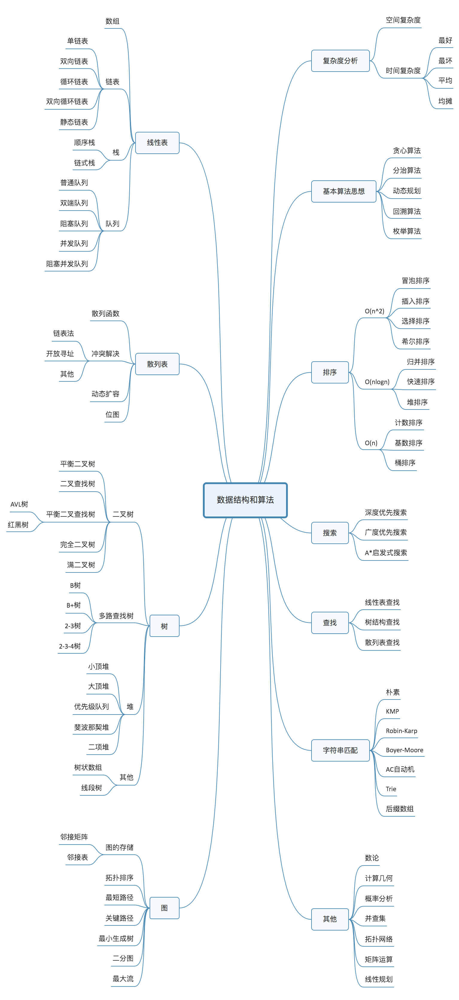
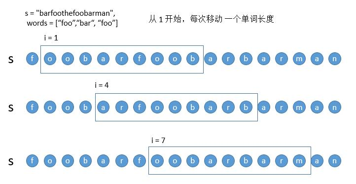
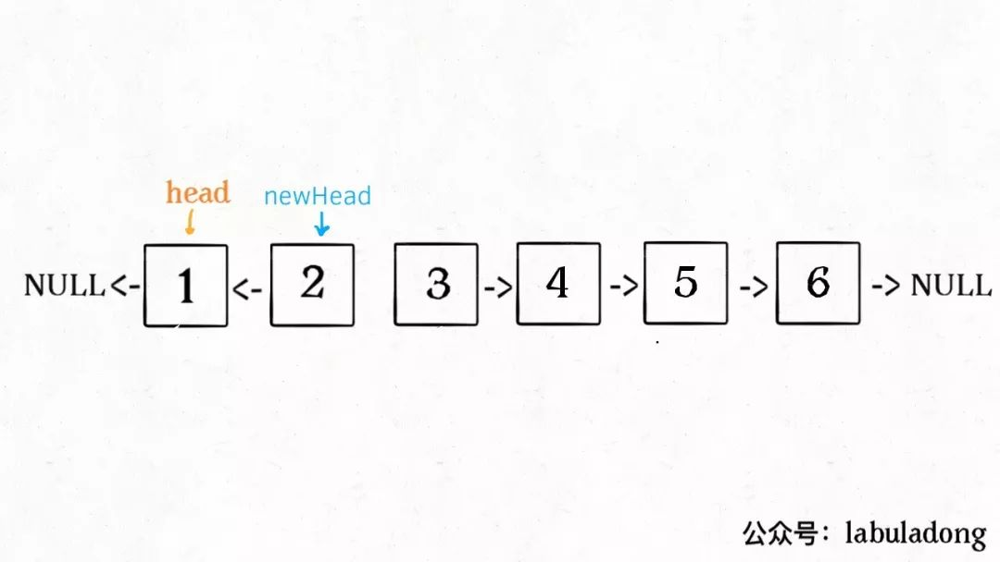

<!DOCTYPE html>
<html lang="zh">
  <head>
    <title>
        LeetCode刷题总结 - 码农的学习笔记
      </title>
        <meta charset="utf-8">
    <meta http-equiv="X-UA-Compatible" content="IE=edge,chrome=1">
    <meta name="viewport"
      content="width=device-width, initial-scale=1, maximum-scale=1, minimum-scale=1, user-scalable=no, minimal-ui">
    <meta name="renderer" content="webkit">
    <meta http-equiv="Cache-Control" content="no-transform" />
    <meta http-equiv="Cache-Control" content="no-siteapp" />
    <meta name="apple-mobile-web-app-capable" content="yes">
    <meta name="apple-mobile-web-app-status-bar-style" content="black">
    <meta name="format-detection" content="telephone=no,email=no,adress=no">
    
    <meta name="theme-color" content="#000000" />
    
    <meta http-equiv="window-target" content="_top" />
    
    
    <meta name="description" content="[TOC] 算法这东西，可以说玄之又玄，大学就被程序设计这门课统治，工作了，虽然说这东西在实践中用到的少，但是谁让大家都卷呢，你不会就是不行，所以本着" />
    <meta name="generator" content="Hugo 0.91.2 with theme pure" />
    <title>LeetCode刷题总结 - 码农的学习笔记</title>
    
    
    <link rel="stylesheet" href="https://wzgl998877.github.io/css/style.min.a85959a41e7abcc0db1f81f44bd264649303417f91b536e87dcde644340fea6d.css">
    
    <link rel="stylesheet" href="https://cdn.staticfile.org/highlight.js/9.15.10/styles/github.min.css" async>
    <link rel="stylesheet" href="https://cdnjs.cloudflare.com/ajax/libs/tocbot/4.4.2/tocbot.css" async>
    <meta property="og:title" content="LeetCode刷题总结" />
<meta property="og:description" content="[TOC] 算法这东西，可以说玄之又玄，大学就被程序设计这门课统治，工作了，虽然说这东西在实践中用到的少，但是谁让大家都卷呢，你不会就是不行，所以本着" />
<meta property="og:type" content="article" />
<meta property="og:url" content="https://wzgl998877.github.io/2022/02/leetcode%E5%88%B7%E9%A2%98%E6%80%BB%E7%BB%93/" /><meta property="article:section" content="posts" />
<meta property="article:published_time" content="2022-02-12T14:44:56+08:00" />
<meta property="article:modified_time" content="2022-02-12T14:44:56+08:00" />

<meta itemprop="name" content="LeetCode刷题总结">
<meta itemprop="description" content="[TOC] 算法这东西，可以说玄之又玄，大学就被程序设计这门课统治，工作了，虽然说这东西在实践中用到的少，但是谁让大家都卷呢，你不会就是不行，所以本着"><meta itemprop="datePublished" content="2022-02-12T14:44:56+08:00" />
<meta itemprop="dateModified" content="2022-02-12T14:44:56+08:00" />
<meta itemprop="wordCount" content="45773">
<meta itemprop="keywords" content="LeetCode," /><meta name="twitter:card" content="summary"/>
<meta name="twitter:title" content="LeetCode刷题总结"/>
<meta name="twitter:description" content="[TOC] 算法这东西，可以说玄之又玄，大学就被程序设计这门课统治，工作了，虽然说这东西在实践中用到的少，但是谁让大家都卷呢，你不会就是不行，所以本着"/>

    <!--[if lte IE 9]>
        <script src="https://cdnjs.cloudflare.com/ajax/libs/classlist/1.1.20170427/classList.min.js"></script>
      <![endif]-->

    <!--[if lt IE 9]>
        <script src="https://cdn.jsdelivr.net/npm/html5shiv@3.7.3/dist/html5shiv.min.js"></script>
        <script src="https://cdn.jsdelivr.net/npm/respond.js@1.4.2/dest/respond.min.js"></script>
      <![endif]-->
  </head>

  
  

  <body class="main-center theme-black" itemscope itemtype="http://schema.org/WebPage"><header class="header" itemscope itemtype="http://schema.org/WPHeader">
    <div class="slimContent">
      <div class="navbar-header">
        <div class="profile-block text-center">
          <a id="avatar" href="https://github.com/wzgl998877/" target="_blank">
            
          </a>
          <h2 id="name" class="hidden-xs hidden-sm">microzheng</h2>
          <h3 id="title" class="hidden-xs hidden-sm hidden-md">努力会说谎，但努力不会白费</h3>
          <small id="location" class="text-muted hidden-xs hidden-sm"><i class="icon icon-map-marker"></i>Shenzhen China</small>
        </div><div class="search" id="search-form-wrap">
    <form class="search-form sidebar-form">
        <div class="input-group">
            <input type="text" class="search-form-input form-control" placeholder="搜索" />
            <span class="input-group-btn">
                <button type="submit" class="search-form-submit btn btn-flat" onclick="return false;"><i
                        class="icon icon-search"></i></button>
            </span>
        </div>
        <div class="ins-search">
            <div class="ins-search-mask"></div>
            <div class="ins-search-container">
                <div class="ins-input-wrapper">
                    <input type="text" class="ins-search-input" placeholder="想要查找什么..."
                        x-webkit-speech />
                    <button type="button" class="close ins-close ins-selectable" data-dismiss="modal"
                        aria-label="Close"><span aria-hidden="true">×</span></button>
                </div>
                <div class="ins-section-wrapper">
                    <div class="ins-section-container"></div>
                </div>
            </div>
        </div>
    </form>
</div>
        <button class="navbar-toggle collapsed" type="button" data-toggle="collapse" data-target="#main-navbar" aria-controls="main-navbar" aria-expanded="false">
          <span class="sr-only">Toggle navigation</span>
          <span class="icon-bar"></span>
          <span class="icon-bar"></span>
          <span class="icon-bar"></span>
        </button>
      </div>
      <nav id="main-navbar" class="collapse navbar-collapse" itemscope itemtype="http://schema.org/SiteNavigationElement" role="navigation">
        <ul class="nav navbar-nav main-nav">
            <li class="menu-item menu-item-home">
                <a href="/">
                    <i class="icon icon-home-fill"></i>
                  <span class="menu-title">主页</span>
                </a>
            </li>
            <li class="menu-item menu-item-archives">
                <a href="/posts/">
                    <i class="icon icon-archives-fill"></i>
                  <span class="menu-title">归档</span>
                </a>
            </li>
            <li class="menu-item menu-item-categories">
                <a href="/categories/">
                    <i class="icon icon-folder"></i>
                  <span class="menu-title">分类</span>
                </a>
            </li>
            <li class="menu-item menu-item-tags">
                <a href="/tags/">
                    <i class="icon icon-tags"></i>
                  <span class="menu-title">标签</span>
                </a>
            </li>
        </ul>
      </nav>
    </div>
  </header>

<aside class="sidebar" itemscope itemtype="http://schema.org/WPSideBar">
  <div class="slimContent">
    
      <div class="widget">
    <h3 class="widget-title">公告</h3>
    <div class="widget-body">
        <div id="board">
            <div class="content"><p>enjoy~</p>
            </div>
        </div>
    </div>
</div>

      <div class="widget">
    <h3 class="widget-title"> 分类</h3>
    <div class="widget-body">
        <ul class="category-list">
            <li class="category-list-item"><a href="https://wzgl998877.github.io/categories/git/" class="category-list-link">git</a><span class="category-list-count">1</span></li>
            <li class="category-list-item"><a href="https://wzgl998877.github.io/categories/java/" class="category-list-link">java</a><span class="category-list-count">3</span></li>
            <li class="category-list-item"><a href="https://wzgl998877.github.io/categories/spring/" class="category-list-link">spring</a><span class="category-list-count">1</span></li>
            <li class="category-list-item"><a href="https://wzgl998877.github.io/categories/%E4%B8%AD%E9%97%B4%E4%BB%B6/" class="category-list-link">中间件</a><span class="category-list-count">3</span></li>
            <li class="category-list-item"><a href="https://wzgl998877.github.io/categories/%E4%BA%91%E5%8E%9F%E7%94%9F/" class="category-list-link">云原生</a><span class="category-list-count">1</span></li>
            <li class="category-list-item"><a href="https://wzgl998877.github.io/categories/%E5%A4%A7%E6%95%B0%E6%8D%AE/" class="category-list-link">大数据</a><span class="category-list-count">2</span></li>
            <li class="category-list-item"><a href="https://wzgl998877.github.io/categories/%E5%B8%B8%E7%94%A8%E6%A1%86%E6%9E%B6/" class="category-list-link">常用框架</a><span class="category-list-count">4</span></li>
            <li class="category-list-item"><a href="https://wzgl998877.github.io/categories/%E6%95%B0%E6%8D%AE%E5%BA%93/" class="category-list-link">数据库</a><span class="category-list-count">4</span></li>
            <li class="category-list-item"><a href="https://wzgl998877.github.io/categories/%E6%97%A5%E5%B8%B8%E6%80%BB%E7%BB%93/" class="category-list-link">日常总结</a><span class="category-list-count">3</span></li>
            <li class="category-list-item"><a href="https://wzgl998877.github.io/categories/%E7%AE%97%E6%B3%95/" class="category-list-link">算法</a><span class="category-list-count">2</span></li>
            <li class="category-list-item"><a href="https://wzgl998877.github.io/categories/%E7%B3%BB%E7%BB%9F%E8%AE%BE%E8%AE%A1/" class="category-list-link">系统设计</a><span class="category-list-count">1</span></li>
            <li class="category-list-item"><a href="https://wzgl998877.github.io/categories/%E7%BD%91%E7%BB%9C%E7%BC%96%E7%A8%8B/" class="category-list-link">网络编程</a><span class="category-list-count">3</span></li>
        </ul>
    </div>
</div>
      <div class="widget">
    <h3 class="widget-title"> 标签</h3>
    <div class="widget-body">
        <ul class="tag-list">
            
            
            <li class="tag-list-item"><a href="https://wzgl998877.github.io/tags/elasticsearch/" class="tag-list-link">elasticsearch</a><span
                    class="tag-list-count">1</span></li>
            
            
            <li class="tag-list-item"><a href="https://wzgl998877.github.io/tags/http/" class="tag-list-link">http</a><span
                    class="tag-list-count">1</span></li>
            
            
            <li class="tag-list-item"><a href="https://wzgl998877.github.io/tags/java%E5%9F%BA%E7%A1%80/" class="tag-list-link">java基础</a><span
                    class="tag-list-count">1</span></li>
            
            
            <li class="tag-list-item"><a href="https://wzgl998877.github.io/tags/java%E5%B9%B6%E5%8F%91/" class="tag-list-link">java并发</a><span
                    class="tag-list-count">1</span></li>
            
            
            <li class="tag-list-item"><a href="https://wzgl998877.github.io/tags/jvm/" class="tag-list-link">jvm</a><span
                    class="tag-list-count">1</span></li>
            
            
            <li class="tag-list-item"><a href="https://wzgl998877.github.io/tags/leetcode/" class="tag-list-link">leetcode</a><span
                    class="tag-list-count">2</span></li>
            
            
            <li class="tag-list-item"><a href="https://wzgl998877.github.io/tags/mybatis/" class="tag-list-link">mybatis</a><span
                    class="tag-list-count">2</span></li>
            
            
            <li class="tag-list-item"><a href="https://wzgl998877.github.io/tags/mysql/" class="tag-list-link">mysql</a><span
                    class="tag-list-count">3</span></li>
            
            
            <li class="tag-list-item"><a href="https://wzgl998877.github.io/tags/netty/" class="tag-list-link">netty</a><span
                    class="tag-list-count">1</span></li>
            
            
            <li class="tag-list-item"><a href="https://wzgl998877.github.io/tags/redis/" class="tag-list-link">redis</a><span
                    class="tag-list-count">1</span></li>
            
            
            <li class="tag-list-item"><a href="https://wzgl998877.github.io/tags/rpc/" class="tag-list-link">rpc</a><span
                    class="tag-list-count">1</span></li>
            
            
            <li class="tag-list-item"><a href="https://wzgl998877.github.io/tags/spring/" class="tag-list-link">spring</a><span
                    class="tag-list-count">2</span></li>
            
            
            <li class="tag-list-item"><a href="https://wzgl998877.github.io/tags/websocket/" class="tag-list-link">websocket</a><span
                    class="tag-list-count">1</span></li>
            
            
            <li class="tag-list-item"><a href="https://wzgl998877.github.io/tags/%E6%B6%88%E6%81%AF%E9%98%9F%E5%88%97/" class="tag-list-link">消息队列</a><span
                    class="tag-list-count">2</span></li>
            
            
            <li class="tag-list-item"><a href="https://wzgl998877.github.io/tags/%E8%AE%BE%E8%AE%A1%E6%A8%A1%E5%BC%8F/" class="tag-list-link">设计模式</a><span
                    class="tag-list-count">1</span></li>
            
        </ul>

    </div>
</div>
      
<div class="widget">
    <h3 class="widget-title">最新文章</h3>
    <div class="widget-body">
        <ul class="recent-post-list list-unstyled no-thumbnail">
            <li>
                <div class="item-inner">
                    <p class="item-title">
                        <a href="https://wzgl998877.github.io/2024/12/%E5%A4%A7%E6%95%B0%E6%8D%AE/" class="title">大数据入门</a>
                    </p>
                    <p class="item-date">
                        <time datetime="2024-12-30 20:23:24 &#43;0800 CST" itemprop="datePublished">2024-12-30</time>
                    </p>
                </div>
            </li>
            <li>
                <div class="item-inner">
                    <p class="item-title">
                        <a href="https://wzgl998877.github.io/2024/10/elasticsearch/" class="title">ElasticSearch</a>
                    </p>
                    <p class="item-date">
                        <time datetime="2024-10-21 19:46:35 &#43;0800 CST" itemprop="datePublished">2024-10-21</time>
                    </p>
                </div>
            </li>
            <li>
                <div class="item-inner">
                    <p class="item-title">
                        <a href="https://wzgl998877.github.io/2024/09/%E9%AB%98%E6%80%A7%E8%83%BDmysql/" class="title">高性能Mysql</a>
                    </p>
                    <p class="item-date">
                        <time datetime="2024-09-11 20:03:12 &#43;0800 CST" itemprop="datePublished">2024-09-11</time>
                    </p>
                </div>
            </li>
            <li>
                <div class="item-inner">
                    <p class="item-title">
                        <a href="https://wzgl998877.github.io/2022/11/springcloud/" class="title">SpringCloud</a>
                    </p>
                    <p class="item-date">
                        <time datetime="2022-11-07 19:15:43 &#43;0800 CST" itemprop="datePublished">2022-11-07</time>
                    </p>
                </div>
            </li>
            <li>
                <div class="item-inner">
                    <p class="item-title">
                        <a href="https://wzgl998877.github.io/2022/09/docker%E5%92%8Ck8s/" class="title">Docker和k8s</a>
                    </p>
                    <p class="item-date">
                        <time datetime="2022-09-09 10:26:21 &#43;0800 CST" itemprop="datePublished">2022-09-09</time>
                    </p>
                </div>
            </li>
        </ul>
    </div>
</div>
  </div>
</aside>

    
    
<aside class="sidebar sidebar-toc collapse" id="collapseToc" itemscope itemtype="http://schema.org/WPSideBar">
  <div class="slimContent">
    <h4 class="toc-title">文章目录</h4>
    <nav id="toc" class="js-toc toc">

    </nav>
  </div>
</aside>
<main class="main" role="main"><div class="content">
  <article id="-" class="article article-type-" itemscope
    itemtype="http://schema.org/BlogPosting">
    
    <div class="article-header">
      <h1 itemprop="name">
  <a
    class="article-title"
    href="/2022/02/leetcode%E5%88%B7%E9%A2%98%E6%80%BB%E7%BB%93/"
    >LeetCode刷题总结</a
  >
</h1>

      <div class="article-meta">
        
<span class="article-date">
  <i class="icon icon-calendar-check"></i>&nbsp;
<a href="https://wzgl998877.github.io/2022/02/leetcode%E5%88%B7%E9%A2%98%E6%80%BB%E7%BB%93/" class="article-date">
  <time datetime="2022-02-12 14:44:56 &#43;0800 CST" itemprop="datePublished">2022-02-12</time>
</a>
</span>
<span class="article-category">
  <i class="icon icon-folder"></i>&nbsp;
  <a class="article-category-link" href="/categories/%E7%AE%97%E6%B3%95/"> 算法 </a>
</span>  
  <span class="article-tag">
    <i class="icon icon-tags"></i>&nbsp;
    <a class="article-tag-link" href="/tags/leetcode/"> LeetCode </a>
  </span>

		<span class="post-wordcount hidden-xs" itemprop="wordCount">字数统计: 45773字</span>
		<span class="post-readcount hidden-xs" itemprop="timeRequired">阅读时长: 92分 </span>
      </div>
    </div>
    <div class="article-entry marked-body js-toc-content" itemprop="articleBody">
      <p>[TOC]</p>
<p>算法这东西，可以说玄之又玄，大学就被程序设计这门课统治，工作了，虽然说这东西在实践中用到的少，但是谁让大家都卷呢，你不会就是不行，所以本着打不赢就加入的原则，自己也刷了不少题，今天作下总结。</p>
<p></p>
<h2 id="算法复杂度">算法复杂度</h2>
<p>算法的复杂度，其实就是分为时间复杂度和空间复杂度，比如O(1)、O(logn)、O(n)、O(nlogn)、O(n^2) 等等</p>
<h3 id="时间复杂度">时间复杂度</h3>
<p><strong>算法</strong>的<strong>时间复杂度（Time complexity）是一个函数，它定性描述该算法的运行时间</strong>。这是一个代表算法输入值的字符串的长度的函数。时间复杂度常用<strong>大O符号</strong>表述，不包<strong>括这个函数的低阶项和首项系数</strong>，例如。</p>
<pre><code>O(2*n^2 + 10*n + 1000) = O(2*n^2 + 10*n) = O(n^2 + n) = O(n^2)
</code></pre>
<p>各个时间复杂度的例子</p>
<blockquote>
<p>常见时间复杂度
O(1)常数阶 &lt; O(log n)对数阶 &lt; O(n)线性阶 &lt; O(n^2)平方阶 &lt; O(n^3)立方阶 &lt; O(2^n)指数阶</p>
</blockquote>
<pre><code class="language-java">package com.zt.javastudy.leetcode;

/**
 * @author zhengtao
 * 算法复杂度分析
 */
public class Time {
    /**
     * 0(n) 时间复杂度,一个循环
     */
    public void test1(int[] nums) {
        for (int i = 0; i &lt; nums.length; i++) {
            System.out.println(nums[i]);
        }
    }

    /**
     * O(log n)，对数时间,常见的具有对数时间的算法有二叉树的相关操作和二分搜索。
     * 可以理解为每次都缩小了一半
     */
    public int binary_search(int[] nums, int target) {
        int left = 0, right = nums.length - 1;
        while (left &lt;= right) {
            int mid = left + (right - left) / 2;
            if (nums[mid] &lt; target) {
                left = mid + 1;
            } else if (nums[mid] &gt; target) {
                right = mid - 1;
            } else if (nums[mid] == target) {
                // 直接返回
                return mid;
            }
        }
        // 直接返回
        return -1;
    }

    /**
     * o(nlogn),内循环是O(log n)
     */
    public void function3(long n) {
        System.out.println(&quot;o(nlogn)算法&quot;);
        long k = 0;
        for (long i = 0; i &lt; n; i++) {
            // O(log n)
            for (long j = 1; j &lt; n; j = j * 2) {
                k++;
            }
        }
    }

    /**
     * o(n^2),两层循环
     *
     * @param n
     */
    public static void function2(long n) {
        System.out.println(&quot;o(n^2)算法&quot;);
        long k = 0;
        for (long i = 0; i &lt; n; i++) {
            for (long j = 0; j &lt; n; j++) {
                k++;
            }
        }   
    }
}

</code></pre>
<h2 id="数组">数组</h2>
<p>数组的题目其实算是比较简单的，一是数组是最熟悉的数据结构，二是数组的题目不需要用到一些算法（贪心、回溯、递归等等），数组常见类型的题目有：</p>
<ul>
<li>二分查找</li>
<li>滑动窗口</li>
<li>双指针</li>
</ul>
<p>下面将从自己刷过题中按这几个题型来总结</p>
<h3 id="二分查找">二分查找</h3>
<p>二分查找的题目其实很简单，二分法都很熟了，二分查找的核心就是找到具有单调性的正确查找对象，但是涉及到二分查找的问题，主要是注意**「搜索区间」和 while 的终止条件**，目前自己全部是采用两端都闭合的搜索区间，有关二分查找的题目又可以分为以下三种类型</p>
<ul>
<li>
<p>直接二分搜索（最简单）</p>
<pre><code class="language-java">public int binary_search(int[] nums, int target) {
    // 左边界为0， 右边界为数组最后一个数
    int left = 0, right = nums.length - 1;
    // 结束条件为 &lt;=
    while (left &lt;= right) {
        int mid = left + (right - left) / 2;
        if (nums[mid] &lt; target) {
            left = mid + 1;
        } else if (nums[mid] &gt; target) {
            right = mid - 1;
        } else if (nums[mid] == target) {
            // 直接返回
            return mid;
        }
    }
    // 直接返回
    return -1;
}
</code></pre>
</li>
<li>
<p>查找最左边界</p>
<pre><code class="language-java">/**
     * 查找最左边界，
     * 因为我们需找到 target 的最左侧索引
     * 所以当 nums[mid] == target 时不要立即返回
     * 而要收紧右侧边界以锁定左侧边界
     *
     * @param nums
     * @param target
     * @return
     */
public int left_bound(int[] nums, int target) {
    int left = 0, right = nums.length - 1;
    while (left &lt;= right) {
        int mid = left + (right - left) / 2;
        if (nums[mid] &gt;= target) {
            right = mid - 1;
        } else {
            left = mid + 1;
        }
    }
    // 最后要检查 left 越界的情况
    if (left &gt;= nums.length || nums[left] != target)
        return -1;
    return left;
}
</code></pre>
</li>
<li>
<p>寻找右边界</p>
<pre><code class="language-java">/**
     * 寻找最右边界
     * 因为我们需找到 target 的最右侧索引
     * 所以当 nums[mid] == target 时不要立即返回
     * 而要收紧左侧边界以锁定右侧边界
     *
     * @param nums
     * @param target
     * @return
     */
public int right_bound(int[] nums, int target) {
    int left = 0, right = nums.length - 1;
    while (left &lt;= right) {
        int mid = left + (right - left) / 2;
        if (nums[mid] &lt;= target) {
            left = mid + 1;
        } else {
            right = mid - 1;
        }
    }
    // 最后要检查 right 越界的情况
    if (right &lt; 0 || nums[right] != target)
        return -1;
    return right;
}
</code></pre>
</li>
</ul>
<p>总结完这三种类型的题目后，就是套题目了，其实做题最难的也是这一步，遇到什么题该用什么方法，对我这种不是完全理解各种算法的人来说是很难的，所以只能靠量取胜哈哈</p>
<h4 id="875-爱吃香蕉的珂珂httpsleetcode-cncomproblemskoko-eating-bananas"><a href="https://leetcode-cn.com/problems/koko-eating-bananas/">875. 爱吃香蕉的珂珂</a></h4>
<p>珂珂喜欢吃香蕉。这里有 <code>N</code> 堆香蕉，第 <code>i</code> 堆中有 <code>piles[i]</code> 根香蕉。警卫已经离开了，将在 <code>H</code> 小时后回来。</p>
<p>珂珂可以决定她吃香蕉的速度 <code>K</code> （单位：根/小时）。每个小时，她将会选择一堆香蕉，从中吃掉 <code>K</code> 根。如果这堆香蕉少于 <code>K</code> 根，她将吃掉这堆的所有香蕉，然后这一小时内不会再吃更多的香蕉。</p>
<p>珂珂喜欢慢慢吃，但仍然想在警卫回来前吃掉所有的香蕉。</p>
<p>返回她可以在 <code>H</code> 小时内吃掉所有香蕉的最小速度 <code>K</code>（<code>K</code> 为整数）。</p>
<p><strong>示例 1：</strong></p>
<pre><code>输入: piles = [3,6,7,11], H = 8
输出: 4
</code></pre>
<p><strong>示例 2：</strong></p>
<pre><code>输入: piles = [30,11,23,4,20], H = 5
输出: 30
</code></pre>
<p><strong>示例 3：</strong></p>
<pre><code>输入: piles = [30,11,23,4,20], H = 6
输出: 23
</code></pre>
<p><strong>提示：</strong></p>
<ul>
<li><code>1 &lt;= piles.length &lt;= 10^4</code></li>
<li><code>piles.length &lt;= H &lt;= 10^9</code></li>
<li><code>1 &lt;= piles[i] &lt;= 10^9</code></li>
</ul>
<p>这道题可以理解为，每小时最少吃1，最大吃getMax(piles),求的就是从1开始，能吃完的最小速度是多少？再联想这其实就是求最左边界，于是可以用二分法来做</p>
<pre><code class="language-java">/**
暴力做法，直接遍历
*/
public int minEatingSpeed(int[] piles, int h) {
    int max = getMax(piles);
    // 可以用二分法代替
    for (int speed = 1; speed &lt;= max; speed++) {
        if (canEat(piles, speed, h)) {
            return speed;
        }
    }
    return max;
}
/**
二分法求最左边界，标准代码
*/
public int minEatingSpeed1(int[] piles, int h) {
    int left = 1, right = getMax(piles);
    while (left &lt;= right) {
        int middle = (left + right) / 2;
        if (canEat(piles, middle, h)) {
            right = middle - 1;
        } else {
            left = middle + 1;
        }
    }
    return left;
}

private boolean canEat(int[] piles, int speed, int h) {
    int time = 0;
    for (int i : piles) {
        if (i % speed == 0) {
            time += i / speed;
        } else {
            time += i / speed + 1;
        }
    }
    return time &lt;= h;
}

private int getMax(int[] piles) {
    int max = 0;
    for (int i : piles) {
        max = Math.max(max, i);
    }
    return max;
}
</code></pre>
<h4 id="1011-在-d-天内送达包裹的能力httpsleetcode-cncomproblemscapacity-to-ship-packages-within-d-days"><a href="https://leetcode-cn.com/problems/capacity-to-ship-packages-within-d-days/">1011. 在 D 天内送达包裹的能力</a></h4>
<p>传送带上的包裹必须在 <code>days</code> 天内从一个港口运送到另一个港口。</p>
<p>传送带上的第 <code>i</code> 个包裹的重量为 <code>weights[i]</code>。每一天，我们都会按给出重量（<code>weights</code>）的顺序往传送带上装载包裹。我们装载的重量不会超过船的最大运载重量。</p>
<p>返回能在 <code>days</code> 天内将传送带上的所有包裹送达的船的最低运载能力。</p>
<p><strong>示例 1：</strong></p>
<pre><code>输入：weights = [1,2,3,4,5,6,7,8,9,10], days = 5
输出：15
解释：
船舶最低载重 15 就能够在 5 天内送达所有包裹，如下所示：
第 1 天：1, 2, 3, 4, 5
第 2 天：6, 7
第 3 天：8
第 4 天：9
第 5 天：10

请注意，货物必须按照给定的顺序装运，因此使用载重能力为 14 的船舶并将包装分成 (2, 3, 4, 5), (1, 6, 7), (8), (9), (10) 是不允许的。 
</code></pre>
<p><strong>示例 2：</strong></p>
<pre><code>输入：weights = [3,2,2,4,1,4], days = 3
输出：6
解释：
船舶最低载重 6 就能够在 3 天内送达所有包裹，如下所示：
第 1 天：3, 2
第 2 天：2, 4
第 3 天：1, 4
</code></pre>
<p><strong>示例 3：</strong></p>
<pre><code>输入：weights = [1,2,3,1,1], D = 4
输出：3
解释：
第 1 天：1
第 2 天：2
第 3 天：3
第 4 天：1, 1
</code></pre>
<p><strong>提示：</strong></p>
<ul>
<li><code>1 &lt;= days &lt;= weights.length &lt;= 5 * 104</code></li>
<li><code>1 &lt;= weights[i] &lt;= 500</code></li>
</ul>
<p>这题很显然，跟上面一题很相似,最低运载能力 x 从1开始到sum(weights)结束，求最小的x，这明显就是二分法求最左边界</p>
<pre><code class="language-java">public int shipWithinDays(int[] weights, int days) {
    int left = 1, right = sum(weights);
    while (left &lt;= right) {
        int middle = (left + right) / 2;
        if (canWeight(weights, middle, days)) {
            right = middle - 1;
        } else {
            left = middle + 1;
        }
    }
    return left;
}

private boolean canWeight(int[] weights, int middle, int days) {
    int sum = 0;
    for (int i : weights) {
        if (i &gt; middle) {
            return false;
        }
        if (sum + i &gt; middle) {
            days--;
            sum = i;
        } else {
            sum += i;
        }
    }
    return days &gt; 0;
}

private int sum(int[] weights) {
    int sum = 0;
    for (int i : weights) {
        sum += i;
    }
    return sum;
}
</code></pre>
<h4 id="410-分割数组的最大值httpsleetcode-cncomproblemssplit-array-largest-sum"><a href="https://leetcode-cn.com/problems/split-array-largest-sum/">410. 分割数组的最大值</a></h4>
<p>给定一个非负整数数组 <code>nums</code> 和一个整数 <code>m</code> ，你需要将这个数组分成 <code>m</code> 个非空的连续子数组。</p>
<p>设计一个算法使得这 <code>m</code> 个子数组各自和的最大值最小。</p>
<p><strong>示例 1：</strong></p>
<pre><code>输入：nums = [7,2,5,10,8], m = 2
输出：18
解释：
一共有四种方法将 nums 分割为 2 个子数组。 
其中最好的方式是将其分为 [7,2,5] 和 [10,8] 。
因为此时这两个子数组各自的和的最大值为18，在所有情况中最小。
</code></pre>
<p><strong>示例 2：</strong></p>
<pre><code>输入：nums = [1,2,3,4,5], m = 2
输出：9
</code></pre>
<p><strong>示例 3：</strong></p>
<pre><code>输入：nums = [1,4,4], m = 3
输出：4
</code></pre>
<p><strong>提示：</strong></p>
<ul>
<li><code>1 &lt;= nums.length &lt;= 1000</code></li>
<li><code>0 &lt;= nums[i] &lt;= 106</code></li>
<li><code>1 &lt;= m &lt;= min(50, nums.length)</code></li>
</ul>
<p>这题目一开始看跟二分法完全不沾边，但是仔细想想跟上面两个有类似之处，「使……最大值尽可能小」，这就和二分法差不多了。</p>
<p>思路为：现在题目是固定了m的值，让我们确定一个最大子数组和；我们可以反过来，<strong>限制一个最大子数组和max，来反推最大子数组和为max时，至少可以将nums分割成几个子数组</strong>。因此思路就转为，<strong>如果我们找到一个最小max值，满足split(nums, max)和m相等</strong>，这个就又是寻找最左边界了，就跟上面两题一样了，前面说过二分法最重要的就是搜索区间，那这个的搜索区间是什么呢？显然，<strong>子数组至少包含一个元素，至多包含整个数组</strong>，所以「最大」子数组和的取值范围就是闭区间[max(nums), sum(nums)]，也就是最大元素值到整个数组和之间。</p>
<pre><code class="language-java">public int splitArray(int[] nums, int m) {
    int left = Arrays.stream(nums).max().getAsInt(), right = Arrays.stream(nums).sum();
    while (left &lt;= right) {
        int middle = (left + right) / 2;
        if (spiltNums(nums, middle) &lt;= m) {
            right = middle - 1;
        } else {
            left = middle + 1;
        }
    }
    return left;
}

/**
     * 在每个子数组和不超过 max 的条件下，
     * 计算 nums 至少可以分割成几个子数组
     *
     * @param nums
     * @param max
     * @return
     */
public int spiltNums(int[] nums, int max) {
    int n = 0;
    int sum = 0;
    for (int i : nums) {
        if (sum + i &gt; max) {
            sum = i;
            n++;
        } else {
            sum += i;
        }
    }
    return n + 1;
}
</code></pre>
<h4 id="12-小张刷题计划httpsleetcode-cncomproblemsxiao-zhang-shua-ti-ji-hua"><a href="https://leetcode-cn.com/problems/xiao-zhang-shua-ti-ji-hua/">12. 小张刷题计划</a></h4>
<p>为了提高自己的代码能力，小张制定了 <code>LeetCode</code> 刷题计划，他选中了 <code>LeetCode</code> 题库中的 <code>n</code> 道题，编号从 <code>0</code> 到 <code>n-1</code>，并计划在 <code>m</code> 天内<strong>按照题目编号顺序</strong>刷完所有的题目（注意，小张不能用多天完成同一题）。</p>
<p>在小张刷题计划中，小张需要用 <code>time[i]</code> 的时间完成编号 <code>i</code> 的题目。此外，小张还可以使用场外求助功能，通过询问他的好朋友小杨题目的解法，可以省去该题的做题时间。为了防止“小张刷题计划”变成“小杨刷题计划”，小张每天最多使用一次求助。</p>
<p>我们定义 <code>m</code> 天中做题时间最多的一天耗时为 <code>T</code>（小杨完成的题目不计入做题总时间）。请你帮小张求出最小的 <code>T</code>是多少。</p>
<p><strong>示例 1：</strong></p>
<blockquote>
<p>输入：<code>time = [1,2,3,3], m = 2</code></p>
<p>输出：<code>3</code></p>
<p>解释：第一天小张完成前三题，其中第三题找小杨帮忙；第二天完成第四题，并且找小杨帮忙。这样做题时间最多的一天花费了 3 的时间，并且这个值是最小的。</p>
</blockquote>
<p><strong>示例 2：</strong></p>
<blockquote>
<p>输入：<code>time = [999,999,999], m = 4</code></p>
<p>输出：<code>0</code></p>
<p>解释：在前三天中，小张每天求助小杨一次，这样他可以在三天内完成所有的题目并不花任何时间。</p>
</blockquote>
<p><strong>限制：</strong></p>
<ul>
<li><code>1 &lt;= time.length &lt;= 10^5</code></li>
<li><code>1 &lt;= time[i] &lt;= 10000</code></li>
<li><code>1 &lt;= m &lt;= 1000</code></li>
</ul>
<p>这题看起来和上面一题就是一模一样的，从0到sum(time),求最左边界</p>
<pre><code class="language-java">public int minTime(int[] time, int m) {
    int left = 0;
    int right = Arrays.stream(time).sum();
    while (left &lt;= right) {
        int middle = (left + right) / 2;
        if (spiltTime(time, middle) &lt;= m) {
            right = middle - 1;
        } else {
            left = middle + 1;
        }
    }
    return left;
}

/**
     * 在每个子数组和不超过 max 的条件下，
     * 计算 nums 至少可以分割成几个子数组
     *
     * @param nums
     * @param max
     * @return
     */
public int spiltTime(int[] nums, int max) {
    int n = 0;
    int sum = 0;
    int time = 0;
    for (int i : nums) {
        if (time &lt; i) {
            time = i;
        }
        if (sum + i &gt; max + time) {
            sum = i;
            n++;
            time = i;
        } else {
            sum += i;
        }
    }
    return n + 1;
}
</code></pre>
<h4 id="1482-制作-m-束花所需的最少天数httpsleetcode-cncomproblemsminimum-number-of-days-to-make-m-bouquets"><a href="https://leetcode-cn.com/problems/minimum-number-of-days-to-make-m-bouquets/">1482. 制作 m 束花所需的最少天数</a></h4>
<p>给你一个整数数组 <code>bloomDay</code>，以及两个整数 <code>m</code> 和 <code>k</code> 。</p>
<p>现需要制作 <code>m</code> 束花。制作花束时，需要使用花园中 <strong>相邻的 <code>k</code> 朵花</strong> 。</p>
<p>花园中有 <code>n</code> 朵花，第 <code>i</code> 朵花会在 <code>bloomDay[i]</code> 时盛开，<strong>恰好</strong> 可以用于 <strong>一束</strong> 花中。</p>
<p>请你返回从花园中摘 <code>m</code> 束花需要等待的最少的天数。如果不能摘到 <code>m</code> 束花则返回 <strong>-1</strong> 。</p>
<p><strong>示例 1：</strong></p>
<pre><code>输入：bloomDay = [1,10,3,10,2], m = 3, k = 1
输出：3
解释：让我们一起观察这三天的花开过程，x 表示花开，而 _ 表示花还未开。
现在需要制作 3 束花，每束只需要 1 朵。
1 天后：[x, _, _, _, _]   // 只能制作 1 束花
2 天后：[x, _, _, _, x]   // 只能制作 2 束花
3 天后：[x, _, x, _, x]   // 可以制作 3 束花，答案为 3
</code></pre>
<p><strong>示例 2：</strong></p>
<pre><code>输入：bloomDay = [1,10,3,10,2], m = 3, k = 2
输出：-1
解释：要制作 3 束花，每束需要 2 朵花，也就是一共需要 6 朵花。而花园中只有 5 朵花，无法满足制作要求，返回 -1 。
</code></pre>
<p><strong>示例 3：</strong></p>
<pre><code>输入：bloomDay = [7,7,7,7,12,7,7], m = 2, k = 3
输出：12
解释：要制作 2 束花，每束需要 3 朵。
花园在 7 天后和 12 天后的情况如下：
7 天后：[x, x, x, x, _, x, x]
可以用前 3 朵盛开的花制作第一束花。但不能使用后 3 朵盛开的花，因为它们不相邻。
12 天后：[x, x, x, x, x, x, x]
显然，我们可以用不同的方式制作两束花。
</code></pre>
<p><strong>示例 4：</strong></p>
<pre><code>输入：bloomDay = [1000000000,1000000000], m = 1, k = 1
输出：1000000000
解释：需要等 1000000000 天才能采到花来制作花束
</code></pre>
<p><strong>示例 5：</strong></p>
<pre><code>输入：bloomDay = [1,10,2,9,3,8,4,7,5,6], m = 4, k = 2
输出：9
</code></pre>
<p><strong>提示：</strong></p>
<ul>
<li><code>bloomDay.length == n</code></li>
<li><code>1 &lt;= n &lt;= 10^5</code></li>
<li><code>1 &lt;= bloomDay[i] &lt;= 10^9</code></li>
<li><code>1 &lt;= m &lt;= 10^6</code></li>
<li><code>1 &lt;= k &lt;= n</code></li>
</ul>
<p>这题也是一样的，二分法最左边界就完事了</p>
<pre><code class="language-java">public int minDays(int[] bloomDay, int m, int k) {
    int left = Arrays.stream(bloomDay).min().getAsInt(), right = Arrays.stream(bloomDay).max().getAsInt(), max = right;
    if (bloomDay.length &lt; m * k) {
        return -1;
    }
    while (left &lt;= right) {
        int middle = (left + right) / 2;
        if (bloom(bloomDay, m, k, middle)) {
            right = middle - 1;
        } else {
            left = middle + 1;
        }
    }
    if (left &gt; max) {
        return -1;
    }
    return left;
}

public boolean bloom(int[] bloomDay, int m, int k, int day) {
    int sum = 0;
    for (int i : bloomDay) {
        if (i &gt; day) {
            sum = 0;
        } else {
            sum++;
            if (sum &gt;= k) {
                sum = 0;
                m--;
            }
        }
    }
    return m &lt;= 0;
}
</code></pre>
<h4 id="1552-两球之间的磁力httpsleetcode-cncomproblemsmagnetic-force-between-two-balls"><a href="https://leetcode-cn.com/problems/magnetic-force-between-two-balls/">1552. 两球之间的磁力</a></h4>
<p>在代号为 C-137 的地球上，Rick 发现如果他将两个球放在他新发明的篮子里，它们之间会形成特殊形式的磁力。Rick 有 <code>n</code> 个空的篮子，第 <code>i</code> 个篮子的位置在 <code>position[i]</code> ，Morty 想把 <code>m</code> 个球放到这些篮子里，使得任意两球间 <strong>最小磁力</strong> 最大。</p>
<p>已知两个球如果分别位于 <code>x</code> 和 <code>y</code> ，那么它们之间的磁力为 <code>|x - y|</code> 。</p>
<p>给你一个整数数组 <code>position</code> 和一个整数 <code>m</code> ，请你返回最大化的最小磁力。</p>
<p><strong>示例 1：</strong></p>
<p></p>
<pre><code>输入：position = [1,2,3,4,7], m = 3
输出：3
解释：将 3 个球分别放入位于 1，4 和 7 的三个篮子，两球间的磁力分别为 [3, 3, 6]。最小磁力为 3 。我们没办法让最小磁力大于 3 。
</code></pre>
<p><strong>示例 2：</strong></p>
<pre><code>输入：position = [5,4,3,2,1,1000000000], m = 2
输出：999999999
解释：我们使用位于 1 和 1000000000 的篮子时最小磁力最大。
</code></pre>
<p><strong>提示：</strong></p>
<ul>
<li><code>n == position.length</code></li>
<li><code>2 &lt;= n &lt;= 10^5</code></li>
<li><code>1 &lt;= position[i] &lt;= 10^9</code></li>
<li>所有 <code>position</code> 中的整数 <strong>互不相同</strong> 。</li>
<li><code>2 &lt;= m &lt;= position.length</code></li>
</ul>
<p>这题和上面的也都是一样的，最小磁力为x，取值范围为[1，max(position) -min(position)]，但这题是二分搜索<strong>最右边界</strong></p>
<pre><code class="language-java">public int maxDistance(int[] position, int m) {
    // 先排序，好求最小距离
    Arrays.sort(position);
    int length = position.length;
    int left = 0, right = position[length - 1] - position[0];
    while (left &lt;= right) {
        int middle = (left + right) / 2;
        // 求最右边界
        if (distance(position, middle) &gt;= m) {
            left = middle + 1;
        } else {
            right = middle - 1;
        }
    }
    return right;
}

/**
     * 最小磁力 为 n时，最多可以分为几段
     *
     * @param position
     * @param n
     * @return
     */
public int distance(int[] position, int n) {
    int min = position[0];
    int difference = 0;
    int nums = 0;
    for (int i : position) {
        difference = i - min;
        if (difference &gt;= n) {
            min = i;
            nums++;
        }
    }
    return nums + 1;
}
</code></pre>
<h4 id="29-两数相除httpsleetcode-cncomproblemsdivide-two-integers"><a href="https://leetcode-cn.com/problems/divide-two-integers/">29. 两数相除</a></h4>
<p>给定两个整数，被除数 <code>dividend</code> 和除数 <code>divisor</code>。将两数相除，要求不使用乘法、除法和 mod 运算符。</p>
<p>返回被除数 <code>dividend</code> 除以除数 <code>divisor</code> 得到的商。</p>
<p>整数除法的结果应当截去（<code>truncate</code>）其小数部分，例如：<code>truncate(8.345) = 8</code> 以及 <code>truncate(-2.7335) = -2</code></p>
<p><strong>示例 1:</strong></p>
<pre><code>输入: dividend = 10, divisor = 3
输出: 3
解释: 10/3 = truncate(3.33333..) = truncate(3) = 3
</code></pre>
<p><strong>示例 2:</strong></p>
<pre><code>输入: dividend = 7, divisor = -3
输出: -2
解释: 7/-3 = truncate(-2.33333..) = -2
</code></pre>
<p><strong>提示：</strong></p>
<ul>
<li>被除数和除数均为 32 位有符号整数。</li>
<li>除数不为 0。</li>
<li>假设我们的环境只能存储 32 位有符号整数，其数值范围是 [−231, 231 − 1]。本题中，如果除法结果溢出，则返回 231 − 1。</li>
</ul>
<p>这题其实很明显，不过需要特殊处理，dividend 和 divisor 均有「正数」和「负数」两种可能，当且仅当其中一者为负数时，结果为负，为了方便，我们可以先记录最终结果的正负号，然后将 dividend 和 divisor 都当成正数来处理；dividend 和 divisor 均为 int，可以确定答案的绝对值落在 [0, dividend] 范围内）；</p>
<pre><code class="language-java">public int divide(int dividend, int divisor) {
    // 考虑被除数为最小值的情况
    if (dividend == Integer.MIN_VALUE) {
        if (divisor == 1) {
            return Integer.MIN_VALUE;
        }
        if (divisor == -1) {
            return Integer.MAX_VALUE;
        }
    }
    // 考虑除数为最小值的情况
    if (divisor == Integer.MIN_VALUE) {
        return dividend == Integer.MIN_VALUE ? 1 : 0;
    }
    // 考虑被除数为 0 的情况
    if (dividend == 0) {
        return 0;
    }

    // 一般情况，使用二分查找
    // 将所有的正数取相反数，这样就只需要考虑一种情况
    boolean rev = false;
    if (dividend &gt; 0) {
        dividend = -dividend;
        rev = !rev;
    }
    if (divisor &gt; 0) {
        divisor = -divisor;
        rev = !rev;
    }

    int left = 1, right = Integer.MAX_VALUE, ans = 0;
    while (left &lt;= right) {
        // 注意溢出，并且不能使用除法
        int mid = left + ((right - left) &gt;&gt; 1);
        boolean check = quickAdd(divisor, mid, dividend);
        if (check) {
            ans = mid;
            // 注意溢出
            if (mid == Integer.MAX_VALUE) {
                break;
            }
            left = mid + 1;
        } else {
            right = mid - 1;
        }
    }

    return rev ? -ans : ans;
}

// 快速乘 这个没搞懂是什么意思
public boolean quickAdd(int y, int z, int x) {
    // x 和 y 是负数，z 是正数
    // 需要判断 z * y &gt;= x 是否成立
    int result = 0, add = y;
    while (z != 0) {
        if ((z &amp; 1) != 0) {
            // 需要保证 result + add &gt;= x
            if (result &lt; x - add) {
                return false;
            }
            result += add;
        }
        if (z != 1) {
            // 需要保证 add + add &gt;= x
            if (add &lt; x - add) {
                return false;
            }
            add += add;
        }
        // 不能使用除法
        z &gt;&gt;= 1;
    }
    return true;
}
</code></pre>
<h4 id="33-搜索旋转排序数组httpsleetcode-cncomproblemssearch-in-rotated-sorted-array"><a href="https://leetcode-cn.com/problems/search-in-rotated-sorted-array/">33. 搜索旋转排序数组</a></h4>
<p>整数数组 <code>nums</code> 按升序排列，数组中的值 <strong>互不相同</strong> 。</p>
<p>在传递给函数之前，<code>nums</code> 在预先未知的某个下标 <code>k</code>（<code>0 &lt;= k &lt; nums.length</code>）上进行了 <strong>旋转</strong>，使数组变为 <code>[nums[k], nums[k+1], ..., nums[n-1], nums[0], nums[1], ..., nums[k-1]]</code>（下标 <strong>从 0 开始</strong> 计数）。例如， <code>[0,1,2,4,5,6,7]</code> 在下标 <code>3</code> 处经旋转后可能变为 <code>[4,5,6,7,0,1,2]</code> 。</p>
<p>给你 <strong>旋转后</strong> 的数组 <code>nums</code> 和一个整数 <code>target</code> ，如果 <code>nums</code> 中存在这个目标值 <code>target</code> ，则返回它的下标，否则返回 <code>-1</code> 。</p>
<p><strong>示例 1：</strong></p>
<pre><code>输入：nums = [4,5,6,7,0,1,2], target = 0
输出：4
</code></pre>
<p><strong>示例 2：</strong></p>
<pre><code>输入：nums = [4,5,6,7,0,1,2], target = 3
输出：-1
</code></pre>
<p><strong>示例 3：</strong></p>
<pre><code>输入：nums = [1], target = 0
输出：-1
</code></pre>
<p><strong>提示：</strong></p>
<ul>
<li><code>1 &lt;= nums.length &lt;= 5000</code></li>
<li><code>-10^4 &lt;= nums[i] &lt;= 10^4</code></li>
<li><code>nums</code> 中的每个值都 <strong>独一无二</strong></li>
<li>题目数据保证 <code>nums</code> 在预先未知的某个下标上进行了旋转</li>
<li><code>-10^4 &lt;= target &lt;= 10^4</code></li>
</ul>
<p>**进阶：**你可以设计一个时间复杂度为 <code>O(log n)</code> 的解决方案吗？</p>
<p>这题一看就像二分法，数组在旋转前是有序的，旋转后变成 了<strong>两部分有序数组</strong>，因此对二分法稍作变形即可，我们将数组从中间分开成左右两部分的时候，一定有一部分的数组是有序的。拿示例来看，我们从 6 这个位置分开以后数组变成了 [4, 5, 6] 和 [7, 0, 1, 2] 两个部分，其中左边 [4, 5, 6] 这个部分的数组是有序的，其他也是如此。
这启示我们可以在常规二分查找的时候查看当前 mid 为分割位置分割出来的两个部分 [l, mid] 和 [mid + 1, r] <strong>哪个部分是有序的</strong>，并根据有序的那个部分确定我们该如何改变二分查找的上下界，因为我们能够根据有序的那部分判断出 target 在不在这个部分：</p>
<ul>
<li>如果 [l, mid - 1] 是有序数组，且 target 的大小满足 [nums[l],nums[mid])，则我们应该将搜索范围缩小至 [l, mid - 1]，否则在 [mid + 1, r] 中寻找。</li>
<li>如果 [mid, r] 是有序数组，且 target 的大小满足 (nums[mid+1],nums[r]]，则我们应该将搜索范围缩小至 [mid + 1, r]，否则在 [l, mid - 1] 中寻找。</li>
</ul>
<pre><code class="language-java">public int search2(int[] nums, int target) {
    int left = 0, right = nums.length - 1;
    while (left &lt;= right) {
        int midlle = (left + right) / 2;
        if (nums[midlle] == target) {
            return midlle;
        }
        // 左半段为有序数组
        if (nums[0] &lt;= nums[midlle]) {
            if (target &gt;= nums[0] &amp;&amp; target &lt; nums[midlle]) {
                right = midlle - 1;
            } else {
                left = midlle + 1;
            }
        } else {
            if (target &gt; nums[midlle] &amp;&amp; target &lt;= nums[nums.length - 1]) {
                left = midlle + 1;
            } else {
                right = midlle - 1;
            }
        }
    }
    return -1;
}
</code></pre>
<h4 id="81-搜索旋转排序数组-iihttpsleetcode-cncomproblemssearch-in-rotated-sorted-array-ii"><a href="https://leetcode-cn.com/problems/search-in-rotated-sorted-array-ii/">81. 搜索旋转排序数组 II</a></h4>
<p>已知存在一个按非降序排列的整数数组 <code>nums</code> ，数组中的值不必互不相同。</p>
<p>在传递给函数之前，<code>nums</code> 在预先未知的某个下标 <code>k</code>（<code>0 &lt;= k &lt; nums.length</code>）上进行了 <strong>旋转</strong> ，使数组变为 <code>[nums[k], nums[k+1], ..., nums[n-1], nums[0], nums[1], ..., nums[k-1]]</code>（下标 <strong>从 0 开始</strong> 计数）。例如， <code>[0,1,2,4,4,4,5,6,6,7]</code> 在下标 <code>5</code> 处经旋转后可能变为 <code>[4,5,6,6,7,0,1,2,4,4]</code> 。</p>
<p>给你 <strong>旋转后</strong> 的数组 <code>nums</code> 和一个整数 <code>target</code> ，请你编写一个函数来判断给定的目标值是否存在于数组中。如果 <code>nums</code> 中存在这个目标值 <code>target</code> ，则返回 <code>true</code> ，否则返回 <code>false</code> 。</p>
<p>你必须尽可能减少整个操作步骤。</p>
<p><strong>示例 1：</strong></p>
<pre><code>输入：nums = [2,5,6,0,0,1,2], target = 0
输出：true
</code></pre>
<p><strong>示例 2：</strong></p>
<pre><code>输入：nums = [2,5,6,0,0,1,2], target = 3
输出：false
</code></pre>
<p><strong>提示：</strong></p>
<ul>
<li><code>1 &lt;= nums.length &lt;= 5000</code></li>
<li><code>-104 &lt;= nums[i] &lt;= 104</code></li>
<li>题目数据保证 <code>nums</code> 在预先未知的某个下标上进行了旋转</li>
<li><code>-104 &lt;= target &lt;= 104</code></li>
</ul>
<p>这题和上一题唯一的区别就是，数组元素可以重复，对于数组中有重复元素的情况，二分查找时可能会有a[l]=a[mid]=a[r]，此时无法判断[l, mid] 和 [mid + 1, r]哪个有序</p>
<p>例如 nums=[3,1,2,3,3,3,3]，target=2，首次二分时无法判断区间 [0,3] 和区间 [4,6] 哪个是有序的。</p>
<p>对于这种情况，我们只能将当前二分区间的左边界加一，右边界减一，然后在新区间上继续二分查找。</p>
<pre><code class="language-java">public boolean search(int[] nums, int target) {
    int left = 0, right = nums.length - 1;
    while (left &lt;= right) {
        int midlle = (left + right) / 2;
        if (nums[midlle] == target) {
            return true;
        }
        // 特殊处理，31313这种情形
        if(nums[left] == nums[midlle] &amp;&amp; nums[right] == nums[midlle]) {
            left++;
            right--;
        }
        // 左半段为有序数组
        else if (nums[left] &lt;= nums[midlle]) {
            if (target &gt;= nums[left] &amp;&amp; target &lt; nums[midlle]) {
                right = midlle - 1;
            } else {
                left = midlle + 1;
            }
        } else {
            if (target &gt; nums[midlle] &amp;&amp; target &lt;= nums[right]) {
                left = midlle + 1;
            } else {
                right = midlle - 1;
            }
        }
    }
    return false;
}
</code></pre>
<h4 id="面试题-1003-搜索旋转数组httpsleetcode-cncomproblemssearch-rotate-array-lcci"><a href="https://leetcode-cn.com/problems/search-rotate-array-lcci/">面试题 10.03. 搜索旋转数组</a></h4>
<p>搜索旋转数组。给定一个排序后的数组，包含n个整数，但这个数组已被旋转过很多次了，次数不详。请编写代码找出数组中的某个元素，假设数组元素原先是按升序排列的。若有多个相同元素，返回索引值最小的一个。</p>
<p><strong>示例1:</strong></p>
<pre><code> 输入: arr = [15, 16, 19, 20, 25, 1, 3, 4, 5, 7, 10, 14], target = 5
 输出: 8（元素5在该数组中的索引）
</code></pre>
<p><strong>示例2:</strong></p>
<pre><code> 输入：arr = [15, 16, 19, 20, 25, 1, 3, 4, 5, 7, 10, 14], target = 11
 输出：-1 （没有找到）
</code></pre>
<p><strong>提示:</strong></p>
<ol>
<li>arr 长度范围在[1, 1000000]之间</li>
</ol>
<p>这题和上一题，几乎是一模一样，但是要求返回最左边界</p>
<pre><code class="language-java">int n = arr.length;
int l = 0, r = n - 1;
while (l &lt;= r) {
    int mid = (l + r) / 2;
    if (arr[l] == arr[mid]) {
         // 如果左值不等于目标，说明还没找到，需要逐一清理重复值。
        if (arr[l] != target) {                           
            l++;
        } else {                                               
            return l;                                    
        }
    } else if (arr[l] &lt; arr[mid]) {
        if (arr[l] &lt;= target &amp;&amp; target &lt;= arr[mid]) {
            r = mid - 1;
        } else {
            l = mid + 1;
        }
    } else {
        // 如果目标在左边，右边界移动到mid,这里判断跟上面不一样是因为，需要求最左边界，所以需要求的是不符合在右边区间的
        if (arr[l] &lt;= target || target &lt;= arr[mid]) {     
            r = mid - 1;
        } else {  
            // 否则目标在右半边，左边界移动到mid+1
            l = mid + 1;
        }
    }
}
if (l &gt;= n || arr[l] != target) {
    return -1;
}
return l;
</code></pre>
<h4 id="34-在排序数组中查找元素的第一个和最后一个位置httpsleetcode-cncomproblemsfind-first-and-last-position-of-element-in-sorted-array"><a href="https://leetcode-cn.com/problems/find-first-and-last-position-of-element-in-sorted-array/">34. 在排序数组中查找元素的第一个和最后一个位置</a></h4>
<p>给定一个按照升序排列的整数数组 <code>nums</code>，和一个目标值 <code>target</code>。找出给定目标值在数组中的开始位置和结束位置。</p>
<p>如果数组中不存在目标值 <code>target</code>，返回 <code>[-1, -1]</code>。</p>
<p><strong>进阶：</strong></p>
<ul>
<li>你可以设计并实现时间复杂度为 <code>O(log n)</code> 的算法解决此问题吗？</li>
</ul>
<p><strong>示例 1：</strong></p>
<pre><code>输入：nums = [5,7,7,8,8,10], target = 8
输出：[3,4]
</code></pre>
<p><strong>示例 2：</strong></p>
<pre><code>输入：nums = [5,7,7,8,8,10], target = 6
输出：[-1,-1]
</code></pre>
<p><strong>示例 3：</strong></p>
<pre><code>输入：nums = [], target = 0
输出：[-1,-1]
</code></pre>
<p><strong>提示：</strong></p>
<ul>
<li><code>0 &lt;= nums.length &lt;= 105</code></li>
<li><code>-109 &lt;= nums[i] &lt;= 109</code></li>
<li><code>nums</code> 是一个非递减数组</li>
<li><code>-109 &lt;= target &lt;= 109</code></li>
</ul>
<p>这题目看起来就很简单，就是搜索最左边界和最右边界</p>
<pre><code class="language-java">public int[] searchRange(int[] nums, int target) {
    int[] result = {-1, -1};
    // 先找最左边界
    result[0] = left_bound(nums, target);
    // 最右边界
    result[1] = right_bound(nums, target);
    // 万万没想到这题还真的就是两遍二分
    return result;
}
</code></pre>
<h4 id="总结">总结</h4>
<p>做了这么多二分法的题，总结出来的一点点小心得就是如果是<strong>求线性方程中的解(y=ax+b)</strong>，列如nums[1,n] 按顺序排列好，求target是否存在，判断题目是采用二分法后，需要注意的是两点</p>
<ul>
<li>搜索区间 最小值是什么？最大值是什么？</li>
<li>求最左边界？最右边界？最左边界和最右边界的判断条件需要记得！！！</li>
</ul>
<h3 id="滑动窗口">滑动窗口</h3>
<hr>
<p>滑动窗口属于双指针的一种特例，这个算法技巧的思路非常简单，用<code>i</code>,<code>j</code>表示滑动窗口的左边界和右边界，通过改变<code>i</code>,<code>j</code>来<strong>扩展</strong>和<strong>收缩</strong>滑动窗口，可以想象成一个窗口在字符串上游走</p>
<pre><code class="language-java">/**
     * 滑动窗口套路 有一个字符串s，需要找到t
     * 思路为：
     * 1、定义一个双指针left,right,作为窗口 window的左右边界
     * 2、右移right（right++），使得window包含t，即找到可行解
     * 3、停止增加right，转而不断增加left指针缩小窗口[left, right)，直到窗口中的字符串不再符合要求（不包含T中的所有字符了）。同时，每次增加left，我们都要更新一轮结果。
     * 4、重复第 2 和第 3 步，直到right到达字符串S的尽头。
     *
     * @param s
     * @param t
     */
void slidingWindow(String s, String t) {
    Map&lt;Character, Integer&gt; window = new HashMap&lt;&gt;();
    Map&lt;Character, Integer&gt; need = new HashMap&lt;&gt;();
    for (int i = 0; i &lt; t.length(); i++) {
        need.put(t.charAt(i), need.getOrDefault(t.charAt(i), 0) + 1);
    }

    int left = 0, right = 0;
    int valid = 0;
    while (right &lt; s.length()) {
        // c 是将移入窗口的字符
        char c = s.charAt(right);
        // 右移窗口
        right++;
        // 进行窗口内数据的一系列更新...，找出可行解

        /*** debug 输出的位置 ***/
        System.out.println(left);
        System.out.println(right);
        /********************/

        // 判断左侧窗口是否要收缩，找出局部最优解
        while (valid == need.size()) {
            // d 是将移出窗口的字符
            char d = s.charAt(left);
            // 左移窗口
            left++;
            // 进行窗口内数据的一系列更新...
        }
    }
}
</code></pre>
<h4 id="76-最小覆盖子串httpsleetcode-cncomproblemsminimum-window-substring"><a href="https://leetcode-cn.com/problems/minimum-window-substring/">76. 最小覆盖子串</a></h4>
<p>给你一个字符串 <code>s</code> 、一个字符串 <code>t</code> 。返回 <code>s</code> 中涵盖 <code>t</code> 所有字符的最小子串。如果 <code>s</code> 中不存在涵盖 <code>t</code> 所有字符的子串，则返回空字符串 <code>&quot;&quot;</code> 。</p>
<p><strong>注意：</strong></p>
<ul>
<li>对于 <code>t</code> 中重复字符，我们寻找的子字符串中该字符数量必须不少于 <code>t</code> 中该字符数量。</li>
<li>如果 <code>s</code> 中存在这样的子串，我们保证它是唯一的答案。</li>
</ul>
<p><strong>示例 1：</strong></p>
<pre><code>输入：s = &quot;ADOBECODEBANC&quot;, t = &quot;ABC&quot;
输出：&quot;BANC&quot;
</code></pre>
<p><strong>示例 2：</strong></p>
<pre><code>输入：s = &quot;a&quot;, t = &quot;a&quot;
输出：&quot;a&quot;
</code></pre>
<p><strong>示例 3:</strong></p>
<pre><code>输入: s = &quot;a&quot;, t = &quot;aa&quot;
输出: &quot;&quot;
解释: t 中两个字符 'a' 均应包含在 s 的子串中，
因此没有符合条件的子字符串，返回空字符串。
</code></pre>
<p>这题是一个很典型的滑动窗口,滑动窗口最难的在于怎么找到局部最优解，很显然这题的局部最优解就是，字符串长度最小</p>
<pre><code class="language-java">public String minWindow(String s, String t) {
    Map&lt;Character, Integer&gt; window = new HashMap&lt;&gt;();
    Map&lt;Character, Integer&gt; need = new HashMap&lt;&gt;();
    for (int i = 0; i &lt; t.length(); i++) {
        need.put(t.charAt(i), need.getOrDefault(t.charAt(i), 0) + 1);
    }
    int left = 0, right = 0, nums = 0;
    int start = 0, length = Integer.MAX_VALUE;
    while (right &lt; s.length()) {
        char c = s.charAt(right);
        right++;
        // 扩大右边界把window装满t，找到可行解
        if (need.containsKey(c)) {
            window.put(c, window.getOrDefault(c, 0) + 1);
            if (window.get(c).equals(need.get(c))) {
                nums++;
            }
        }
        // 收缩左边界，找到局部最优解
        while (nums == need.size()) {
            char d = s.charAt(left);
            if (right - left &lt; length) {
                start = left;
                length = right - left;
            }
            left++;
            if (need.containsKey(d)) {
                if (need.get(d).equals(window.get(d))) {
                    nums--;
                }
                window.put(d, window.get(d) - 1);
            }
        }
    }
    return length == Integer.MAX_VALUE ? &quot;&quot; : s.substring(start, start + length);
}
</code></pre>
<h4 id="567-字符串的排列httpsleetcode-cncomproblemspermutation-in-string"><a href="https://leetcode-cn.com/problems/permutation-in-string/">567. 字符串的排列</a></h4>
<p>给你两个字符串 <code>s1</code> 和 <code>s2</code> ，写一个函数来判断 <code>s2</code> 是否包含 <code>s1</code> 的排列。如果是，返回 <code>true</code> ；否则，返回 <code>false</code> 。</p>
<p>换句话说，<code>s1</code> 的排列之一是 <code>s2</code> 的 <strong>子串</strong> 。</p>
<p><strong>示例 1：</strong></p>
<pre><code>输入：s1 = &quot;ab&quot; s2 = &quot;eidbaooo&quot;
输出：true
解释：s2 包含 s1 的排列之一 (&quot;ba&quot;).
</code></pre>
<p><strong>示例 2：</strong></p>
<pre><code>输入：s1= &quot;ab&quot; s2 = &quot;eidboaoo&quot;
输出：false
</code></pre>
<p>这题和上一题几乎是一样的，唯一的不同就是这一题要求的是<strong>排列</strong>，那么就是在算局部最优解的时候就是<strong>判断窗口内的字符串长度是否和s1相等</strong></p>
<pre><code class="language-java">public boolean checkInclusion(String s1, String s2) {
        Map&lt;Character, Integer&gt; window = new HashMap&lt;&gt;();
        Map&lt;Character, Integer&gt; need = new HashMap&lt;&gt;();
        for (int i = 0; i &lt; s1.length(); i++) {
            need.put(s1.charAt(i), need.getOrDefault(s1.charAt(i), 0) + 1);
        }
        int valid = 0;
        int left = 0, right = 0;
        while(right &lt; s2.length()) {
            char c = s2.charAt(right);
            right++;
            if(need.containsKey(c)) {
                window.put(c, window.getOrDefault(c, 0) + 1);
                if(need.get(c).equals(window.get(c))) {
                    valid++;
                }
            }
            while(valid == need.size()) {
                // 局部最优解为窗口内的字符串长度和s1相等
                if(right - left == s1.length()) {
                    return true;
                }
                char d = s2.charAt(left);
                left++;
                if(need.containsKey(d)) {
                    if(need.get(d).equals(window.get(d))) {
                        valid--;
                    }
                    window.put(d, window.get(d) - 1);
                }
            }
        }
        return false;
    }
</code></pre>
<h4 id="438-找到字符串中所有字母异位词httpsleetcode-cncomproblemsfind-all-anagrams-in-a-string"><a href="https://leetcode-cn.com/problems/find-all-anagrams-in-a-string/">438. 找到字符串中所有字母异位词</a></h4>
<p>给定两个字符串 <code>s</code> 和 <code>p</code>，找到 <code>s</code> 中所有 <code>p</code> 的 <strong>异位词</strong> 的子串，返回这些子串的起始索引。不考虑答案输出的顺序。</p>
<p><strong>异位词</strong> 指由相同字母重排列形成的字符串（包括相同的字符串）。</p>
<p><strong>示例 1:</strong></p>
<pre><code>输入: s = &quot;cbaebabacd&quot;, p = &quot;abc&quot;
输出: [0,6]
解释:
起始索引等于 0 的子串是 &quot;cba&quot;, 它是 &quot;abc&quot; 的异位词。
起始索引等于 6 的子串是 &quot;bac&quot;, 它是 &quot;abc&quot; 的异位词。
</code></pre>
<p><strong>示例 2:</strong></p>
<pre><code>输入: s = &quot;abab&quot;, p = &quot;ab&quot;
输出: [0,1,2]
解释:
起始索引等于 0 的子串是 &quot;ab&quot;, 它是 &quot;ab&quot; 的异位词。
起始索引等于 1 的子串是 &quot;ba&quot;, 它是 &quot;ab&quot; 的异位词。
起始索引等于 2 的子串是 &quot;ab&quot;, 它是 &quot;ab&quot; 的异位词。
</code></pre>
<p><strong>提示:</strong></p>
<ul>
<li><code>1 &lt;= s.length, p.length &lt;= 3 * 104</code></li>
<li><code>s</code> 和 <code>p</code> 仅包含小写字母</li>
</ul>
<p>这题和 567 其实就是一样的，567题是找到了就好了，这题是找出所有符合条件的</p>
<pre><code class="language-java">public List&lt;Integer&gt; findAnagrams(String s, String p) {
    Map&lt;Character, Integer&gt; window = new HashMap&lt;&gt;();
    Map&lt;Character, Integer&gt; need = new HashMap&lt;&gt;();
    for (int i = 0; i &lt; p.length(); i++) {
        need.put(p.charAt(i), need.getOrDefault(p.charAt(i), 0) + 1);
    }
    int valid = 0;
    int left = 0, right = 0;
    List&lt;Integer&gt; list = new ArrayList&lt;&gt;();
    while(right &lt; s.length()) {
        char c = s.charAt(right);
        right++;
        if(need.containsKey(c)) {
            window.put(c, window.getOrDefault(c, 0) + 1);
            if(need.get(c).equals(window.get(c))) {
                valid++;
            }
        }
        while(right - left == p.length()) {
            if(valid ==  need.size()) {
                list.add(left);
            }
            char d = s.charAt(left);
            left++;
            if(need.containsKey(d)) {
                if(need.get(d).equals(window.get(d))) {
                    valid--;
                }
                window.put(d, window.get(d) - 1);
            }
        }
    }
    return list;
}
</code></pre>
<p>当然这类题也可以不用map来做，而是用数组来代替</p>
<pre><code class="language-java">public List&lt;Integer&gt; findAnagrams(String s, String p) {
    // 使用指针在LeetCode上快了好多好多
    int[] need = new int[26];
    int[] window = new int[26];
    for (int i = 0; i &lt; p.length(); i++) {
        need[p.charAt(i) - 'a']++;
    }
    int needSize = 0;
    for (int i : need) {
        if (i &gt; 0) {
            needSize++;
        }
    }
    int left = 0, right = 0, nums = 0;
    List&lt;Integer&gt; result = new ArrayList&lt;&gt;();
    while (right &lt; s.length()) {
        char c = s.charAt(right);
        right++;
        if (need[c - 'a'] &gt; 0) {
            window[c - 'a']++;
            if (need[c - 'a'] == window[c - 'a']) {
                nums++;
            }
        }
        while (nums == needSize) {
            if (right - left == p.length()) {
                result.add(left);
            }
            char d = s.charAt(left);
            left++;
            if (need[d - 'a'] &gt; 0) {
                if (need[d - 'a'] == window[d - 'a']) {
                    nums--;
                }
                window[d - 'a']--;
            }
        }
    }
    return result;
}
</code></pre>
<h4 id="643-子数组最大平均数-ihttpsleetcode-cncomproblemsmaximum-average-subarray-i"><a href="https://leetcode-cn.com/problems/maximum-average-subarray-i/">643. 子数组最大平均数 I</a></h4>
<p>给你一个由 <code>n</code> 个元素组成的整数数组 <code>nums</code> 和一个整数 <code>k</code> 。</p>
<p>请你找出平均数最大且 <strong>长度为 <code>k</code></strong> 的连续子数组，并输出该最大平均数。</p>
<p>任何误差小于 <code>10-5</code> 的答案都将被视为正确答案。</p>
<p><strong>示例 1：</strong></p>
<pre><code>输入：nums = [1,12,-5,-6,50,3], k = 4
输出：12.75
解释：最大平均数 (12-5-6+50)/4 = 51/4 = 12.75
</code></pre>
<p><strong>示例 2：</strong></p>
<pre><code>输入：nums = [5], k = 1
输出：5.00000
</code></pre>
<p>这题就更加简单了，就相当于窗口内永远是k个长度和上面一题有点像</p>
<pre><code class="language-java">public double findMaxAverage1(int[] nums, int k) {
    double arg = 0;
    double temp;
    for (int i = 0; i &lt; k; i++) {
        arg += nums[i];
    }
    temp = arg;
    for (int i = k; i &lt; nums.length; i++) {
        temp = temp - nums[i - k] + nums[i];
        arg = Math.max(temp, arg);
    }
    return arg / k;
}
</code></pre>
<h4 id="1658-将-x-减到-0-的最小操作数httpsleetcode-cncomproblemsminimum-operations-to-reduce-x-to-zero"><a href="https://leetcode-cn.com/problems/minimum-operations-to-reduce-x-to-zero/">1658. 将 x 减到 0 的最小操作数</a></h4>
<p>给你一个整数数组 <code>nums</code> 和一个整数 <code>x</code> 。每一次操作时，你应当移除数组 <code>nums</code> 最左边或最右边的元素，然后从 <code>x</code> 中减去该元素的值。请注意，需要 <strong>修改</strong> 数组以供接下来的操作使用。</p>
<p>如果可以将 <code>x</code> <strong>恰好</strong> 减到 <code>0</code> ，返回 <strong>最小操作数</strong> ；否则，返回 <code>-1</code> 。</p>
<p><strong>示例 1：</strong></p>
<pre><code>输入：nums = [1,1,4,2,3], x = 5
输出：2
解释：最佳解决方案是移除后两个元素，将 x 减到 0 。
</code></pre>
<p><strong>示例 2：</strong></p>
<pre><code>输入：nums = [5,6,7,8,9], x = 4
输出：-1
</code></pre>
<p><strong>示例 3：</strong></p>
<pre><code>输入：nums = [3,2,20,1,1,3], x = 10
输出：5
解释：最佳解决方案是移除后三个元素和前两个元素（总共 5 次操作），将 x 减到 0 。
</code></pre>
<p><strong>提示：</strong></p>
<ul>
<li><code>1 &lt;= nums.length &lt;= 105</code></li>
<li><code>1 &lt;= nums[i] &lt;= 104</code></li>
<li><code>1 &lt;= x &lt;= 109</code></li>
</ul>
<p>这题还是有点意思的，这题目的意思，可以反过来理解，<strong>因为删除元素都是在最左边或最右边的元素，因此题目可以转为找sum-x的最长子数组</strong>，这样就简单了</p>
<pre><code class="language-java">public int minOperations(int[] nums, int x) {
    int left = 0, right = 0, result = -1;
    // 因为从两边进行剔除，也就可以转为求最大的连续子数组使其和的target
    int target = Arrays.stream(nums).sum() - x;
    if (target &lt; 0) {
        return -1;
    }
    int temp = 0;
    while (right &lt; nums.length) {
        temp += nums[right];
        right++;
        while (temp &gt; target) {
            temp -= nums[left];
            left++;
        }
        if (temp == target) {
            result = Math.max(result, right - left);
        }
    }
    return result == -1 ? -1 : nums.length - result;
}
</code></pre>
<h4 id="3-无重复字符的最长子串httpsleetcode-cncomproblemslongest-substring-without-repeating-characters"><a href="https://leetcode-cn.com/problems/longest-substring-without-repeating-characters/">3. 无重复字符的最长子串</a></h4>
<p>给定一个字符串 <code>s</code> ，请你找出其中不含有重复字符的 <strong>最长子串</strong> 的长度。</p>
<p><strong>示例 1:</strong></p>
<pre><code>输入: s = &quot;abcabcbb&quot;
输出: 3 
解释: 因为无重复字符的最长子串是 &quot;abc&quot;，所以其长度为 3。
</code></pre>
<p><strong>示例 2:</strong></p>
<pre><code>输入: s = &quot;bbbbb&quot;
输出: 1
解释: 因为无重复字符的最长子串是 &quot;b&quot;，所以其长度为 1。
</code></pre>
<p><strong>示例 3:</strong></p>
<pre><code>输入: s = &quot;pwwkew&quot;
输出: 3
解释: 因为无重复字符的最长子串是 &quot;wke&quot;，所以其长度为 3。
     请注意，你的答案必须是 子串 的长度，&quot;pwke&quot; 是一个子序列，不是子串。
</code></pre>
<p><strong>提示：</strong></p>
<ul>
<li><code>0 &lt;= s.length &lt;= 5 * 104</code></li>
<li><code>s</code> 由英文字母、数字、符号和空格组成</li>
</ul>
<p>这一题就更加简单了</p>
<pre><code class="language-java">public int lengthOfLongestSubstring(String s) {
    int left = 0, right = 0, result = 0;
    Map&lt;Character, Integer&gt; window = new HashMap&lt;&gt;();
    while (right &lt; s.length()) {
        char c = s.charAt(right);
        while (window.containsKey(c)) {
            char d = s.charAt(left);
            left++;
            window.remove(d);
        }
        right++;
        window.put(c, 1);
        result = Math.max(result, right - left);
    }
    return result;
}
</code></pre>
<h4 id="1695-删除子数组的最大得分">1695 删除子数组的最大得分</h4>
<p>给你一个正整数数组 <code>nums</code> ，请你从中删除一个含有 <strong>若干不同元素</strong> 的子数组**。**删除子数组的 <strong>得分</strong> 就是子数组各元素之 <strong>和</strong> 。</p>
<p>返回 <strong>只删除一个</strong> 子数组可获得的 <strong>最大得分</strong> <em>。</em></p>
<p>如果数组 <code>b</code> 是数组 <code>a</code> 的一个连续子序列，即如果它等于 <code>a[l],a[l+1],...,a[r]</code> ，那么它就是 <code>a</code> 的一个子数组。</p>
<p><strong>示例 1：</strong></p>
<pre><code>输入：nums = [4,2,4,5,6]
输出：17
解释：最优子数组是 [2,4,5,6]
</code></pre>
<p><strong>示例 2：</strong></p>
<pre><code>输入：nums = [5,2,1,2,5,2,1,2,5]
输出：8
解释：最优子数组是 [5,2,1] 或 [1,2,5]
</code></pre>
<p><strong>提示：</strong></p>
<ul>
<li><code>1 &lt;= nums.length &lt;= 105</code></li>
<li><code>1 &lt;= nums[i] &lt;= 104</code></li>
</ul>
<p>和上面一题不能说一模一样，只能说完全一致</p>
<h4 id="395-至少有-k-个重复字符的最长子串httpsleetcode-cncomproblemslongest-substring-with-at-least-k-repeating-characters"><a href="https://leetcode-cn.com/problems/longest-substring-with-at-least-k-repeating-characters/">395. 至少有 K 个重复字符的最长子串</a></h4>
<p>给你一个字符串 <code>s</code> 和一个整数 <code>k</code> ，请你找出 <code>s</code> 中的最长子串， 要求该子串中的每一字符出现次数都不少于 <code>k</code> 。返回这一子串的长度。</p>
<p><strong>示例 1：</strong></p>
<pre><code>输入：s = &quot;aaabb&quot;, k = 3
输出：3
解释：最长子串为 &quot;aaa&quot; ，其中 'a' 重复了 3 次。
</code></pre>
<p><strong>示例 2：</strong></p>
<pre><code>输入：s = &quot;ababbc&quot;, k = 2
输出：5
解释：最长子串为 &quot;ababb&quot; ，其中 'a' 重复了 2 次， 'b' 重复了 3 次。
</code></pre>
<p>这题和上一题很像，但是这题麻烦的是最少的次数，想了很久没有想明白，看了答案也是一知半解的，</p>
<p>思路：
我们枚举最长子串中的字符种类数目，它最小为 1，最大为 ∣Σ∣（字符集的大小，本题中为 26）。
对于给定的字符种类数量 t，我们维护滑动窗口的左右边界 l,r、滑动窗口内部每个字符出现的次数 cnt，
以及滑动窗口内的字符种类数目 total。</p>
<p><strong>当 total &gt; t 时，我们不断地右移左边界 l，并对应地更新 cnt 以及 total，直到 total≤t 为止</strong>。
这样，对于任何一个右边界 r，我们都能找到最小的l（记为 lmin），<strong>使得 s[lmin&hellip;r] 之间的字符种类数目不多于t</strong>对于任何一组s[lmin&hellip;r] 之间存在某个出现次数小于 k （且不为 0，下文不再特殊说明）的字符，我们可以断定：对于任何 l′∈(lmin,r) 而言，s[l'&hellip;r] 依然不可能是满足题意的子串，因为：</p>
<ul>
<li>要么该字符的出现次数降为 0，此时子串内虽然少了一个出现次数小于 k 的字符，但字符种类数目也随之小于t 了；</li>
<li>要么该字符的出现次数降为非 0 整数，此时该字符的出现次数依然小于 k。</li>
</ul>
<p>根据上面的结论，我们发现：<strong>当限定字符种类数目为 t 时，满足题意的最长子串，就一定出自某个s[lmin&hellip;r]</strong>。因此，在滑动窗口的维护过程中，就可以直接得到最长子串的大小</p>
<pre><code class="language-java">public int longestSubstring(String s, int k) {
    int ret = 0;
    int n = s.length();
    // 遍历最长子串的字符种类数目
    for (int t = 1; t &lt;= 26; t++) {
        int l = 0, r = 0;
        // 每个字符出现的次数
        int[] cnt = new int[26];
        // 字符种类数目
        int tot = 0;
        // 当前出现次数小于 k 的字符的数量
        int less = 0;
        while (r &lt; n) {
            cnt[s.charAt(r) - 'a']++;
            // 该字符第一次出现
            if (cnt[s.charAt(r) - 'a'] == 1) {
                // 字符种类数目加一
                tot++;
                // 小于 k 的字符的数量加一
                less++;
            }
            // 如果等于k了，less加一
            if (cnt[s.charAt(r) - 'a'] == k) {
                less--;
            }
            // 字符种类超过了t
            while (tot &gt; t) {
                cnt[s.charAt(l) - 'a']--;
                // s.charAt(l)出现次数小于k了，less加1
                if (cnt[s.charAt(l) - 'a'] == k - 1) {
                    less++;
                }
                // s.charAt(l)不在窗口内了，种类tot减一和less减一
                if (cnt[s.charAt(l) - 'a'] == 0) {
                    tot--;
                    less--;
                }
                l++;
            }
            if (less == 0) {
                ret = Math.max(ret, r - l + 1);
            }
            r++;
        }
    }
    return ret;
}
</code></pre>
<h4 id="992-k-个不同整数的子数组httpsleetcode-cncomproblemssubarrays-with-k-different-integers"><a href="https://leetcode-cn.com/problems/subarrays-with-k-different-integers/">992. K 个不同整数的子数组</a></h4>
<p>给定一个正整数数组 <code>nums</code>和一个整数 k ，返回 num 中 「<strong>好子数组」</strong> 的数目。</p>
<p>如果 <code>nums</code> 的某个子数组中不同整数的个数恰好为 <code>k</code>，则称 <code>nums</code> 的这个连续、不一定不同的子数组为 「好子数组 」。</p>
<ul>
<li>例如，<code>[1,2,3,1,2]</code> 中有 <code>3</code> 个不同的整数：<code>1</code>，<code>2</code>，以及 <code>3</code>。</li>
</ul>
<p><strong>子数组</strong> 是数组的 <strong>连续</strong> 部分。</p>
<p><strong>示例 1：</strong></p>
<pre><code>输入：nums = [1,2,1,2,3], k = 2
输出：7
解释：恰好由 2 个不同整数组成的子数组：[1,2], [2,1], [1,2], [2,3], [1,2,1], [2,1,2], [1,2,1,2].
</code></pre>
<p><strong>示例 2：</strong></p>
<pre><code>输入：nums = [1,2,1,3,4], k = 3
输出：3
解释：恰好由 3 个不同整数组成的子数组：[1,2,1,3], [2,1,3], [1,3,4].
</code></pre>
<p>这个题目其实是很难想的到的，主要就是将恰好改为最多</p>
<p>对于一个固定的左边界来说，满足「恰好存在 K 个不同整数的子区间」的右边界 不唯一，且形成区间。</p>
<p>示例 1：<strong>左边界固定的时候，恰好存在 2 个不同整数的子区间为 [1,2],[1,2,1],[1,2,1,2] ，总数为 3。其值为下标 3 - 1 + 1，即区间 [1..3] 的长度</strong>。</p>
<p></p>
<p>把「恰好」改成「最多」会发现 对于每一个确定的左边界，最多包含 K 种不同整数的右边界是唯一确定的，并且在左边界向右移动的过程中，右边界或者在原来的地方，或者在原来地方的右边。</p>
<p><strong>而「最多存在  个不同整数的子区间的个数」与「恰好存在 K 个不同整数的子区间的个数」的差恰好等于「最多存在 K - 1 个不同整数的子区间的个数」</strong>。即 result = Max（k）- max（k-1）理解这点后做题目也就简单了</p>
<p></p>
<pre><code class="language-java">public int subarraysWithKDistinct(int[] nums, int k) {
    return maxArraysDistance(nums, k) - maxArraysDistance(nums, k - 1);
}
/**
     * 最多有k个不同数字的区间有多少
     * @param nums
     * @param k
     * @return
     */
private int maxArraysDistance(int[] nums, int k) {
    int left = 0, right = 0, result = 0;
    int valid = 0;
    int[] temp = new int[nums.length + 1];
    while(right &lt; nums.length) {
        temp[nums[right]]++;
        if(temp[nums[right]] == 1) {
            valid++;
        }
        right++;
        while(valid &gt; k) {
            temp[nums[left]]--;
            if(temp[nums[left]] == 0) {
                valid--;
            }
            left++;
        }
        // 为什么会是right - left呢？，看第一幅图就知道了
        result += right - left;
    }
    return result;
}
</code></pre>
<h4 id="239-滑动窗口最大值httpsleetcode-cncomproblemssliding-window-maximum"><a href="https://leetcode-cn.com/problems/sliding-window-maximum/">239. 滑动窗口最大值</a></h4>
<p>给你一个整数数组 <code>nums</code>，有一个大小为 <code>k</code> 的滑动窗口从数组的最左侧移动到数组的最右侧。你只可以看到在滑动窗口内的 <code>k</code> 个数字。滑动窗口每次只向右移动一位。</p>
<p>返回 <em>滑动窗口中的最大值</em> 。</p>
<p><strong>示例 1：</strong></p>
<pre><code>输入：nums = [1,3,-1,-3,5,3,6,7], k = 3
输出：[3,3,5,5,6,7]
解释：
滑动窗口的位置                最大值
---------------               -----
[1  3  -1] -3  5  3  6  7       3
 1 [3  -1  -3] 5  3  6  7       3
 1  3 [-1  -3  5] 3  6  7       5
 1  3  -1 [-3  5  3] 6  7       5
 1  3  -1  -3 [5  3  6] 7       6
 1  3  -1  -3  5 [3  6  7]      7
</code></pre>
<p><strong>示例 2：</strong></p>
<pre><code>输入：nums = [1], k = 1
输出：[1]
</code></pre>
<p><strong>提示：</strong></p>
<ul>
<li><code>1 &lt;= nums.length &lt;= 105</code></li>
<li><code>-104 &lt;= nums[i] &lt;= 104</code></li>
<li><code>1 &lt;= k &lt;= nums.length</code></li>
</ul>
<p>这一道题其实想起来很简单，第一版暴力，</p>
<pre><code class="language-java">class Solution {
    public int[] maxSlidingWindow(int[] nums, int k) {
        int left = 0, right = 0;
        int[] result = new int[nums.length - k + 1];
        int i = 0;
        while(right &lt; nums.length) {
            right++;
            if(right - left == k) {
                result[i++] = max(nums, left, right);
                left++;
            }
        }
        return result;
    }
    private int max(int[] nums, int left, int right) {
        int result = nums[left];
        for(int i = left; i &lt; right; i++) {
            result = Math.max(result, nums[i]);
        }
        return result;
    }
}
</code></pre>
<p>很显然，时间花费在了找最大值上，怎么用0（1）的时间复杂度，找出最大值呢？可以用双端队列，维护一个递减的双端队列，为什么维护一个递减的双端队列可以呢？因为每个区间移除的元素一定不是这个区间的最大值，而下个区间的最大值，一定是在上一个区间移除队首元素后的最大值，因此可以成立</p>
<pre><code class="language-java">public int[] maxSlidingWindow(int[] nums, int k) {
    // 维护一个递减的双端队列
    Deque&lt;Integer&gt; queue = new LinkedList&lt;&gt;();
    int left = 0, right = 0;
    int[] result = new int[nums.length - k + 1];
    while(right &lt; nums.length) {
        // 当前元素大于队尾元素，移除队尾元素
        while (!queue.isEmpty() &amp;&amp; nums[right] &gt;= nums[queue.peekLast()]) {
            queue.removeLast();
        }
        // 添加元素到队尾
        queue.addLast(right);
        right++;
        // 如果队首元素不在区间内，移除队首元素
        while(queue.peekFirst() &lt; left) {
            queue.removeFirst();
        }

        if(right - left == k) {
            // 在区间内时，队首元素为区间最大元素
            result[left++] = nums[queue.peekFirst()];
        }
    }
    return result;
}
</code></pre>
<h4 id="1438-绝对差不超过限制的最长连续子数组httpsleetcode-cncomproblemslongest-continuous-subarray-with-absolute-diff-less-than-or-equal-to-limit"><a href="https://leetcode-cn.com/problems/longest-continuous-subarray-with-absolute-diff-less-than-or-equal-to-limit/">1438. 绝对差不超过限制的最长连续子数组</a></h4>
<p>给你一个整数数组 <code>nums</code> ，和一个表示限制的整数 <code>limit</code>，请你返回最长连续子数组的长度，该子数组中的任意两个元素之间的绝对差必须小于或者等于 <code>limit</code> <em>。</em></p>
<p>如果不存在满足条件的子数组，则返回 <code>0</code> 。</p>
<p><strong>示例 1：</strong></p>
<pre><code>输入：nums = [8,2,4,7], limit = 4
输出：2 
解释：所有子数组如下：
[8] 最大绝对差 |8-8| = 0 &lt;= 4.
[8,2] 最大绝对差 |8-2| = 6 &gt; 4. 
[8,2,4] 最大绝对差 |8-2| = 6 &gt; 4.
[8,2,4,7] 最大绝对差 |8-2| = 6 &gt; 4.
[2] 最大绝对差 |2-2| = 0 &lt;= 4.
[2,4] 最大绝对差 |2-4| = 2 &lt;= 4.
[2,4,7] 最大绝对差 |2-7| = 5 &gt; 4.
[4] 最大绝对差 |4-4| = 0 &lt;= 4.
[4,7] 最大绝对差 |4-7| = 3 &lt;= 4.
[7] 最大绝对差 |7-7| = 0 &lt;= 4. 
因此，满足题意的最长子数组的长度为 2 。
</code></pre>
<p><strong>示例 2：</strong></p>
<pre><code>输入：nums = [10,1,2,4,7,2], limit = 5
输出：4 
解释：满足题意的最长子数组是 [2,4,7,2]，其最大绝对差 |2-7| = 5 &lt;= 5 。
</code></pre>
<p><strong>示例 3：</strong></p>
<pre><code>输入：nums = [4,2,2,2,4,4,2,2], limit = 0
输出：3
</code></pre>
<p><strong>提示：</strong></p>
<ul>
<li><code>1 &lt;= nums.length &lt;= 10^5</code></li>
<li><code>1 &lt;= nums[i] &lt;= 10^9</code></li>
<li><code>0 &lt;= limit &lt;= 10^9</code></li>
</ul>
<p>这道题和上面一道题，基本一致，不过这道题需要求最大值和最小值，因此维护两个队列,一个递减队列，一个递增队列</p>
<pre><code class="language-java">public int longestSubarray(int[] nums, int limit) {
    int left = 0, right = 0, result = 0;
    // 单调递增队列
    Deque&lt;Integer&gt; minDeque = new LinkedList&lt;&gt;();
    // 单调递减队列
    Deque&lt;Integer&gt; maxDeque = new LinkedList&lt;&gt;();
    while (right &lt; nums.length) {
        // 当前元素小于队尾元素，移除队尾元素
        while (!minDeque.isEmpty() &amp;&amp; nums[minDeque.peekLast()] &gt;= nums[right]) {
            minDeque.pollLast();
        }
        // 当前元素大于队尾元素，移除队尾元素
        while (!maxDeque.isEmpty() &amp;&amp; nums[maxDeque.peekLast()] &lt;= nums[right]) {
            maxDeque.pollLast();
        }
        minDeque.offerLast(right);
        maxDeque.offerLast(right);
        while (minDeque.peekFirst() &lt; left) {
            minDeque.pollFirst();
        }
        while (maxDeque.peekFirst() &lt; left) {
            maxDeque.pollFirst();
        }
        right++;
        while (nums[maxDeque.peekFirst()] - nums[minDeque.peekFirst()] &gt; limit) {
            if (left == maxDeque.peekFirst()) {
                maxDeque.pollFirst();
            }
            if (left == minDeque.peekFirst()) {
                minDeque.pollFirst();
            }
            left++;
        }
        result = Math.max(right - left, result);
    }
    return result;
}
</code></pre>
<h4 id="424-替换后的最长重复字符httpsleetcode-cncomproblemslongest-repeating-character-replacement"><a href="https://leetcode-cn.com/problems/longest-repeating-character-replacement/">424. 替换后的最长重复字符</a></h4>
<p>给你一个字符串 <code>s</code> 和一个整数 <code>k</code> 。你可以选择字符串中的任一字符，并将其更改为任何其他大写英文字符。该操作最多可执行 <code>k</code> 次。</p>
<p>在执行上述操作后，返回包含相同字母的最长子字符串的长度。</p>
<p><strong>示例 1：</strong></p>
<pre><code>输入：s = &quot;ABAB&quot;, k = 2
输出：4
解释：用两个'A'替换为两个'B',反之亦然。
</code></pre>
<p><strong>示例 2：</strong></p>
<pre><code>输入：s = &quot;AABABBA&quot;, k = 1
输出：4
解释：
将中间的一个'A'替换为'B',字符串变为 &quot;AABBBBA&quot;。
子串 &quot;BBBB&quot; 有最长重复字母, 答案为 4。
</code></pre>
<p>这题的思路很清晰，首先维护一个窗口，窗口中<strong>左边界右移的时机</strong>就是区间内用了k次机会后还不够，这时候需要右 移左边界，那么怎么算区间内用的机会呢，很显然，用区间长度（right - left）减去 出现次数最多的字符的次数(max)，就是需要变化的次数，那么问题来了，怎么维护这个<strong>出现次数最多的字符的次数</strong>呢？自己想了很久，比如用treeMap实现，但肯定题目不会这么做，看了答案恍然大悟，很简单，最后要求的就是 <strong>max + k</strong>，k不变，那么结果只跟max有关，因此不需要维护max，<strong>只需要记录max的最大值即可</strong>！！！。</p>
<pre><code class="language-java">public int characterReplacement(String s, int k) {
    Map&lt;Character, Integer&gt; window = new HashMap&lt;&gt;();
    int left = 0, right = 0;
    // max 代表区间内出现次数最多的字符
    int max = 0, result = 0;
    while (right &lt; s.length()) {
        char c = s.charAt(right);
        right++;
        window.put(c, window.getOrDefault(c, 0) + 1);
        // result = max + k， 因此只需要找到最大的max即可
        max = Math.max(max, window.get(c));
        if (right - left &gt; max + k) {
            char d = s.charAt(left);
            left++;
            window.put(d, window.get(d) - 1);
        }
        // 这里为什么要在后面判断呢？，因为循环进入if的条件是，right - left &gt; max + k，而我们答案需要的是max+k，所有需要在left++后执行
        result = Math.max(right - left, result);
    }
    return result;
}
</code></pre>
<p>这个题目，需要注意的点有：</p>
<ul>
<li>求max时，只需要求出<strong>最大的max</strong>而不需要求出<strong>每个区间内最大的max</strong></li>
<li>在返回结果时，应该在if条件后执行，而不是if内，因为进入循环的条件就是right - left &gt; max + k，意味着这个区间已经不符合要求了，所以需要left++</li>
</ul>
<h4 id="1004-最大连续1的个数-iiihttpsleetcode-cncomproblemsmax-consecutive-ones-iii"><a href="https://leetcode-cn.com/problems/max-consecutive-ones-iii/">1004. 最大连续1的个数 III</a></h4>
<p>给定一个二进制数组 <code>nums</code> 和一个整数 <code>k</code> ，如果可以翻转最多<code>k</code> 个 <code>0</code> ，则返回 <em>数组中连续 <code>1</code> 的最大个数</em> 。</p>
<p><strong>示例 1：</strong></p>
<pre><code>输入：nums = [1,1,1,0,0,0,1,1,1,1,0], K = 2
输出：6
解释：[1,1,1,0,0,1,1,1,1,1,1]
粗体数字从 0 翻转到 1，最长的子数组长度为 6。
</code></pre>
<p><strong>示例 2：</strong></p>
<pre><code>输入：nums = [0,0,1,1,0,0,1,1,1,0,1,1,0,0,0,1,1,1,1], K = 3
输出：10
解释：[0,0,1,1,1,1,1,1,1,1,1,1,0,0,0,1,1,1,1]
粗体数字从 0 翻转到 1，最长的子数组长度为 10。
</code></pre>
<p>这题和上面一模一样</p>
<pre><code class="language-java">public int longestOnes(int[] nums, int k) {
    int left = 0, right = 0, result = 0, temp = 0;
    while(right &lt; nums.length) {
        if(nums[right] == 0) {
            temp++;
        }
        right++;
        while(temp &gt; k) {
            if(nums[left] == 0) {
                temp--;
            }
            left++;
        }
        result = Math.max(result, right - left);
    }
    return result;
}
</code></pre>
<h4 id="1208-尽可能使字符串相等httpsleetcode-cncomproblemsget-equal-substrings-within-budget"><a href="https://leetcode-cn.com/problems/get-equal-substrings-within-budget/">1208. 尽可能使字符串相等</a></h4>
<p>给你两个长度相同的字符串，<code>s</code> 和 <code>t</code>。</p>
<p>将 <code>s</code> 中的第 <code>i</code> 个字符变到 <code>t</code> 中的第 <code>i</code> 个字符需要 <code>|s[i] - t[i]|</code> 的开销（开销可能为 0），也就是两个字符的 ASCII 码值的差的绝对值。</p>
<p>用于变更字符串的最大预算是 <code>maxCost</code>。在转化字符串时，总开销应当小于等于该预算，这也意味着字符串的转化可能是不完全的。</p>
<p>如果你可以将 <code>s</code> 的子字符串转化为它在 <code>t</code> 中对应的子字符串，则返回可以转化的最大长度。</p>
<p>如果 <code>s</code> 中没有子字符串可以转化成 <code>t</code> 中对应的子字符串，则返回 <code>0</code>。</p>
<p><strong>示例 1：</strong></p>
<pre><code>输入：s = &quot;abcd&quot;, t = &quot;bcdf&quot;, maxCost = 3
输出：3
解释：s 中的 &quot;abc&quot; 可以变为 &quot;bcd&quot;。开销为 3，所以最大长度为 3。
</code></pre>
<p><strong>示例 2：</strong></p>
<pre><code>输入：s = &quot;abcd&quot;, t = &quot;cdef&quot;, maxCost = 3
输出：1
解释：s 中的任一字符要想变成 t 中对应的字符，其开销都是 2。因此，最大长度为 1。
</code></pre>
<p><strong>示例 3：</strong></p>
<pre><code>输入：s = &quot;abcd&quot;, t = &quot;acde&quot;, maxCost = 0
输出：1
解释：a -&gt; a, cost = 0，字符串未发生变化，所以最大长度为 1。
</code></pre>
<p>这题又是一模一样的</p>
<pre><code class="language-java">public int equalSubstring(String s, String t, int maxCost) {
    int left = 0, right = 0, result = 0, temp = 0;
    while (right &lt; s.length()) {
        temp += Math.abs(s.charAt(right) - t.charAt(right));
        right++;
        while (temp &gt; maxCost) {
            temp -= Math.abs(s.charAt(left) - t.charAt(left));
            left++;
        }
        result = Math.max(right - left, result);
    }
    return result;
}
</code></pre>
<h4 id="1493-删掉一个元素以后全为-1-的最长子数组httpsleetcode-cncomproblemslongest-subarray-of-1s-after-deleting-one-element"><a href="https://leetcode-cn.com/problems/longest-subarray-of-1s-after-deleting-one-element/">1493. 删掉一个元素以后全为 1 的最长子数组</a></h4>
<p>给你一个二进制数组 <code>nums</code> ，你需要从中删掉一个元素。</p>
<p>请你在删掉元素的结果数组中，返回最长的且只包含 1 的非空子数组的长度。</p>
<p>如果不存在这样的子数组，请返回 0 。</p>
<p><strong>提示 1：</strong></p>
<pre><code>输入：nums = [1,1,0,1]
输出：3
解释：删掉位置 2 的数后，[1,1,1] 包含 3 个 1 。
</code></pre>
<p><strong>示例 2：</strong></p>
<pre><code>输入：nums = [0,1,1,1,0,1,1,0,1]
输出：5
解释：删掉位置 4 的数字后，[0,1,1,1,1,1,0,1] 的最长全 1 子数组为 [1,1,1,1,1] 。
</code></pre>
<p><strong>示例 3：</strong></p>
<pre><code>输入：nums = [1,1,1]
输出：2
解释：你必须要删除一个元素。
</code></pre>
<p><strong>示例 4：</strong></p>
<pre><code>输入：nums = [1,1,0,0,1,1,1,0,1]
输出：4
</code></pre>
<p><strong>示例 5：</strong></p>
<pre><code>输入：nums = [0,0,0]
输出：0
</code></pre>
<p>这题也一点意思都没有，一模一样</p>
<pre><code class="language-java">public int longestSubarray(int[] nums) {
    int left = 0, right = 0, result = 0, temp = 0;
    while (right &lt; nums.length) {
        if (nums[right] == 0) {
            temp++;
        }
        right++;
        while (temp &gt; 1) {
            if (nums[left] == 0) {
                temp--;
            }
            left++;
        }
        result = Math.max(result, right - left - 1);
    }
    return result;
}
</code></pre>
<h4 id="904-水果成篮httpsleetcode-cncomproblemsfruit-into-baskets"><a href="https://leetcode-cn.com/problems/fruit-into-baskets/">904. 水果成篮</a></h4>
<p>你正在探访一家农场，农场从左到右种植了一排果树。这些树用一个整数数组 <code>fruits</code> 表示，其中 <code>fruits[i]</code> 是第 <code>i</code> 棵树上的水果 <strong>种类</strong> 。</p>
<p>你想要尽可能多地收集水果。然而，农场的主人设定了一些严格的规矩，你必须按照要求采摘水果：</p>
<ul>
<li>你只有 <strong>两个</strong> 篮子，并且每个篮子只能装 <strong>单一类型</strong> 的水果。每个篮子能够装的水果总量没有限制。</li>
<li>你可以选择任意一棵树开始采摘，你必须从 <strong>每棵</strong> 树（包括开始采摘的树）上 <strong>恰好摘一个水果</strong> 。采摘的水果应当符合篮子中的水果类型。每采摘一次，你将会向右移动到下一棵树，并继续采摘。</li>
<li>一旦你走到某棵树前，但水果不符合篮子的水果类型，那么就必须停止采摘。</li>
</ul>
<p>给你一个整数数组 <code>fruits</code> ，返回你可以收集的水果的 <strong>最大</strong> 数目。</p>
<p><strong>示例 1：</strong></p>
<pre><code>输入：fruits = [1,2,1]
输出：3
解释：可以采摘全部 3 棵树。
</code></pre>
<p><strong>示例 2：</strong></p>
<pre><code>输入：fruits = [0,1,2,2]
输出：3
解释：可以采摘 [1,2,2] 这三棵树。
如果从第一棵树开始采摘，则只能采摘 [0,1] 这两棵树。
</code></pre>
<p><strong>示例 3：</strong></p>
<pre><code>输入：fruits = [1,2,3,2,2]
输出：4
解释：可以采摘 [2,3,2,2] 这四棵树。
如果从第一棵树开始采摘，则只能采摘 [1,2] 这两棵树。
</code></pre>
<p><strong>示例 4：</strong></p>
<pre><code>输入：fruits = [3,3,3,1,2,1,1,2,3,3,4]
输出：5
解释：可以采摘 [1,2,1,1,2] 这五棵树。
</code></pre>
<p>一模一样，标准滑动窗口</p>
<pre><code class="language-java">public int totalFruit(int[] fruits) {
    int left = 0, right = 0;
    int result = 0;
    Map&lt;Integer, Integer&gt; need = new HashMap&lt;&gt;();
    while (right &lt; fruits.length) {
        need.put(fruits[right], need.getOrDefault(fruits[right], 0) + 1);
        right++;
        while (need.size() &gt; 2) {
            need.put(fruits[left], need.get(fruits[left]) - 1);
            if (need.get(fruits[left]) == 0) {
                need.remove(fruits[left]);
            }
            left++;
        }
        result = Math.max(right - left, result);
    }
    return result;
}
</code></pre>
<h4 id="1838-最高频元素的频数httpsleetcode-cncomproblemsfrequency-of-the-most-frequent-element"><a href="https://leetcode-cn.com/problems/frequency-of-the-most-frequent-element/">1838. 最高频元素的频数</a></h4>
<p>元素的 <strong>频数</strong> 是该元素在一个数组中出现的次数。</p>
<p>给你一个整数数组 <code>nums</code> 和一个整数 <code>k</code> 。在一步操作中，你可以选择 <code>nums</code> 的一个下标，并将该下标对应元素的值增加 <code>1</code> 。</p>
<p>执行最多 <code>k</code> 次操作后，返回数组中最高频元素的 <strong>最大可能频数</strong> <em>。</em></p>
<p><strong>示例 1：</strong></p>
<pre><code>输入：nums = [1,2,4], k = 5
输出：3
解释：对第一个元素执行 3 次递增操作，对第二个元素执 2 次递增操作，此时 nums = [4,4,4] 。
4 是数组中最高频元素，频数是 3 。
</code></pre>
<p><strong>示例 2：</strong></p>
<pre><code>输入：nums = [1,4,8,13], k = 5
输出：2
解释：存在多种最优解决方案：
- 对第一个元素执行 3 次递增操作，此时 nums = [4,4,8,13] 。4 是数组中最高频元素，频数是 2 。
- 对第二个元素执行 4 次递增操作，此时 nums = [1,8,8,13] 。8 是数组中最高频元素，频数是 2 。
- 对第三个元素执行 5 次递增操作，此时 nums = [1,4,13,13] 。13 是数组中最高频元素，频数是 2 。
</code></pre>
<p><strong>示例 3：</strong></p>
<pre><code>输入：nums = [3,9,6], k = 2
输出：1
</code></pre>
<p>这题也是很简单的一题，先排序，然后标准的滑动窗口</p>
<pre><code class="language-java">public int maxFrequency(int[] nums, int k) {
    Arrays.sort(nums);
    int left = 0, right = 0, temp = 0, count = 0, result = 0;
    while(right &lt; nums.length) {
        count += (nums[right] - temp)*(right - left);
        temp = nums[right];
        right++;
        while(count &gt; k) {
            count -= temp - nums[left];
            left++;
        }
        result = Math.max(result, right - left);
    }
    return result;
}
</code></pre>
<h4 id="209-长度最小的子数组httpsleetcode-cncomproblemsminimum-size-subarray-sum"><a href="https://leetcode-cn.com/problems/minimum-size-subarray-sum/">209. 长度最小的子数组</a></h4>
<p>给定一个含有 <code>n</code> 个正整数的数组和一个正整数 <code>target</code> <strong>。</strong></p>
<p>找出该数组中满足其和 <code>≥ target</code> 的长度最小的 <strong>连续子数组</strong> <code>[numsl, numsl+1, ..., numsr-1, numsr]</code> ，并返回其长度**。**如果不存在符合条件的子数组，返回 <code>0</code> 。</p>
<p><strong>示例 1：</strong></p>
<pre><code>输入：target = 7, nums = [2,3,1,2,4,3]
输出：2
解释：子数组 [4,3] 是该条件下的长度最小的子数组。
</code></pre>
<p><strong>示例 2：</strong></p>
<pre><code>输入：target = 4, nums = [1,4,4]
输出：1
</code></pre>
<p><strong>示例 3：</strong></p>
<pre><code>输入：target = 11, nums = [1,1,1,1,1,1,1,1]
输出：0
</code></pre>
<p><strong>提示：</strong></p>
<ul>
<li><code>1 &lt;= target &lt;= 109</code></li>
<li><code>1 &lt;= nums.length &lt;= 105</code></li>
<li><code>1 &lt;= nums[i] &lt;= 105</code></li>
</ul>
<p>这题很简单标准的滑动窗口</p>
<pre><code class="language-java">public int minSubArrayLen(int target, int[] nums) {
    int left = 0, right = 0, result = Integer.MAX_VALUE, temp = 0;
    while (right &lt; nums.length) {
        temp += nums[right];
        right++;
        while (temp &gt;= target) {
            result = Math.min(right - left, result);
            temp -= nums[left];
            left++;
        }
    }
    return result == Integer.MAX_VALUE ? 0 : result;
}
</code></pre>
<h4 id="862-和至少为-k-的最短子数组httpsleetcode-cncomproblemsshortest-subarray-with-sum-at-least-k"><a href="https://leetcode-cn.com/problems/shortest-subarray-with-sum-at-least-k/">862. 和至少为 K 的最短子数组</a></h4>
<p>给你一个整数数组 <code>nums</code> 和一个整数 <code>k</code> ，找出 <code>nums</code> 中和至少为 <code>k</code> 的 <strong>最短非空子数组</strong> ，并返回该子数组的长度。如果不存在这样的 <strong>子数组</strong> ，返回 <code>-1</code> 。</p>
<p><strong>子数组</strong> 是数组中 <strong>连续</strong> 的一部分。</p>
<p><strong>示例 1：</strong></p>
<pre><code>输入：nums = [1], k = 1
输出：1
</code></pre>
<p><strong>示例 2：</strong></p>
<pre><code>输入：nums = [1,2], k = 4
输出：-1
</code></pre>
<p><strong>示例 3：</strong></p>
<pre><code>输入：nums = [2,-1,2], k = 3
输出：3
</code></pre>
<p><strong>提示：</strong></p>
<ul>
<li><code>1 &lt;= nums.length &lt;= 105</code></li>
<li><code>-105 &lt;= nums[i] &lt;= 105</code></li>
<li><code>1 &lt;= k &lt;= 109</code></li>
</ul>
<p>这题和上一题唯一的不同就是，<strong>nums中可能有负数，所以就不能简单的使用滑动窗口了，而是转而使用前缀和做，即求sum(y) - sum(x) &gt;= k,并保证，y - x最小</strong>，思路上有点像<a href="https://leetcode-cn.com/problems/minimum-operations-to-reduce-x-to-zero/">1658. 将 x 减到 0 的最小操作数</a></p>
<pre><code class="language-java">public int shortestSubarray(int[] nums, int k) {
    int n = nums.length, result = n + 1;
    int[] sum = new int[n + 1];
    for (int i = 0; i &lt; n; i++) {
        sum[i + 1] = sum[i] + nums[i];
    }
    for (int i = 1; i &lt;= n; i++) {
        for (int j = 0; j &lt;= i; j++) {
            // 求使sum[i] - sum[j] &gt;= k 成立的最小的i - j
            if (sum[i] - sum[j] &gt;= k) {
                result = Math.min(i - j, result);
            }
        }
    }
    return result == n + 1 ? -1 : result;
}}
</code></pre>
<p>这样子时间复杂度为O(n^2)需要优化，怎么优化呢？首先，对于固定的sum[i],有两种情况需要考虑</p>
<ul>
<li>内循环中，j1 &lt; j2,且sum[j1] &gt;= sum[j2] &amp;&amp; sum[i] - sum[j1] &gt;= k,则代表，j1 到 j2中有0或者负数，此时明显i - j2小于i - j1，因此可以看成，我们需要维护<strong>一个单调递增的队列</strong></li>
<li>外循环中，<strong>当已经找到sum[i] - sum[j] &gt;= k，则此时再递增j也没有用了，因为要维持，i - j最小，意思就为当队尾元素 - 队首元素 &gt;= k 时，移除队首元素</strong></li>
</ul>
<pre><code class="language-java">public int shortestSubarray1(int[] nums, int k) {
    int n = nums.length, result = n + 1;
    long[] sum = new long[n + 1];
    for (int i = 0; i &lt; n; i++) {
        sum[i + 1] = sum[i] + nums[i];
    }
    Deque&lt;Integer&gt; deque = new LinkedList&lt;&gt;();
    int right = 0;
    while (right &lt; n + 1) {
        // 维持单调递增队列
        while (!deque.isEmpty() &amp;&amp; sum[right] &lt;= sum[deque.peekLast()]) {
            deque.pollLast();
        }
        // 当队首元素已满足条件，移除队首元素
        while (!deque.isEmpty() &amp;&amp; sum[right] - sum[deque.peekFirst()] &gt;= k) {
            result = Math.min(right - deque.peekFirst(), result);
            deque.pollFirst();
        }
        deque.offerLast(right);
        right++;
    }
    return result == n + 1 ? -1 : result;
}
</code></pre>
<h4 id="30-串联所有单词的子串httpsleetcode-cncomproblemssubstring-with-concatenation-of-all-words"><a href="https://leetcode-cn.com/problems/substring-with-concatenation-of-all-words/">30. 串联所有单词的子串</a></h4>
<p>给定一个字符串 <code>s</code> 和一些 <strong>长度相同</strong> 的单词 <code>words</code> **。**找出 <code>s</code> 中恰好可以由 <code>words</code> 中所有单词串联形成的子串的起始位置。</p>
<p>注意子串要与 <code>words</code> 中的单词完全匹配，<strong>中间不能有其他字符</strong> ，但不需要考虑 <code>words</code> 中单词串联的顺序。</p>
<p><strong>示例 1：</strong></p>
<pre><code>输入：s = &quot;barfoothefoobarman&quot;, words = [&quot;foo&quot;,&quot;bar&quot;]
输出：[0,9]
解释：
从索引 0 和 9 开始的子串分别是 &quot;barfoo&quot; 和 &quot;foobar&quot; 。
输出的顺序不重要, [9,0] 也是有效答案。
</code></pre>
<p><strong>示例 2：</strong></p>
<pre><code>输入：s = &quot;wordgoodgoodgoodbestword&quot;, words = [&quot;word&quot;,&quot;good&quot;,&quot;best&quot;,&quot;word&quot;]
输出：[]
</code></pre>
<p><strong>示例 3：</strong></p>
<pre><code>输入：s = &quot;barfoofoobarthefoobarman&quot;, words = [&quot;bar&quot;,&quot;foo&quot;,&quot;the&quot;]
输出：[6,9,12]
</code></pre>
<p>这题和567题是一样，不过不同之处在于，words是个数组 ,但数组中每个单词的长度是相等的，我们维持一个s.length() 的窗口，每次都判断是否与 <code>words</code> 中的单词完全匹配。</p>
<pre><code class="language-java">public List&lt;Integer&gt; findSubstring(String s, String[] words) {
    int left = 0, right = 0;
    int n = words[0].length();
    int length = n * words.length;
    List&lt;Integer&gt; list = new ArrayList&lt;&gt;();
    HashMap&lt;String, Integer&gt; need = new HashMap&lt;&gt;();
    for (String c : words) {
        need.put(c, need.getOrDefault(c, 0) + 1);
    }
    int vaild = 0;
    while (right &lt; s.length()) {
        right++;
        // 维持length的窗口
        if (right - left == length) {
            HashMap&lt;String, Integer&gt; window = new HashMap&lt;&gt;();
            for (int i = left; i &lt;= right - n; i += n) {
                String temp = s.substring(i, i + n);
                if (need.containsKey(temp)) {
                    window.put(temp, window.getOrDefault(temp, 0) + 1);
                    if (need.get(temp).equals(window.get(temp))) {
                        vaild++;
                    }
                }
            }
            // 如果完全匹配
            if (vaild == need.size()) {
                list.add(left);
            }
            vaild = 0;
            left++;
        }
    }
    return list;
}
</code></pre>
<p>但这题显然有个更好的解决方法，我们可以每次移动words[0].length() = n个单位，但这种移动需要移动n次，具体过程如下：</p>
<p></p>
<p></p>
<p></p>
<pre><code class="language-java">public List&lt;Integer&gt; findSubstring1(String s, String[] words) {
    int left = 0, right = 0;
    int n = words[0].length();
    int length = n * words.length;
    List&lt;Integer&gt; list = new ArrayList&lt;&gt;();
    HashMap&lt;String, Integer&gt; need = new HashMap&lt;&gt;();
    for (String c : words) {
        need.put(c, need.getOrDefault(c, 0) + 1);
    }
    int vaild = 0;
    // 需要这样遍历不然会漏
    for (int j = 0; j &lt; n; j++) {
        left = j;
        right = j;
        vaild = 0;
        while (right + n &lt;= s.length()) {
            // 每次移动n
            right += n;
            if (right - left == length) {
                HashMap&lt;String, Integer&gt; window = new HashMap&lt;&gt;();
                for (int i = left; i &lt;= right - n; i += n) {
                    String temp = s.substring(i, i + n);
                    if (need.containsKey(temp)) {
                        window.put(temp, window.getOrDefault(temp, 0) + 1);
                        if (need.get(temp).equals(window.get(temp))) {
                            vaild++;
                        }
                    }
                }
                if (vaild == need.size()) {
                    list.add(left);
                }
                vaild = 0;
                left += n;
            }
        }
    }
    return list;
}
</code></pre>
<h4 id="187-重复的dna序列httpsleetcode-cncomproblemsrepeated-dna-sequences"><a href="https://leetcode-cn.com/problems/repeated-dna-sequences/">187. 重复的DNA序列</a></h4>
<p>难度中等334收藏分享切换为英文接收动态反馈</p>
<p><strong>DNA序列</strong> 由一系列核苷酸组成，缩写为 <code>'A'</code>, <code>'C'</code>, <code>'G'</code> 和 <code>'T'</code>.。</p>
<ul>
<li>例如，<code>&quot;ACGAATTCCG&quot;</code> 是一个 <strong>DNA序列</strong> 。</li>
</ul>
<p>在研究 <strong>DNA</strong> 时，识别 DNA 中的重复序列非常有用。</p>
<p>给定一个表示 <strong>DNA序列</strong> 的字符串 <code>s</code> ，返回所有在 DNA 分子中出现不止一次的 <strong>长度为 <code>10</code></strong> 的序列(子字符串)。你可以按 <strong>任意顺序</strong> 返回答案。</p>
<p><strong>示例 1：</strong></p>
<pre><code>输入：s = &quot;AAAAACCCCCAAAAACCCCCCAAAAAGGGTTT&quot;
输出：[&quot;AAAAACCCCC&quot;,&quot;CCCCCAAAAA&quot;]
</code></pre>
<p><strong>示例 2：</strong></p>
<pre><code>输入：s = &quot;AAAAAAAAAAAAA&quot;
输出：[&quot;AAAAAAAAAA&quot;]
</code></pre>
<p>这题就很简单了</p>
<pre><code class="language-java">public List&lt;String&gt; findRepeatedDnaSequences(String s) {
    int left = 0, right = 0;
    Set&lt;String&gt; set = new HashSet&lt;&gt;();
    List&lt;String&gt; list = new ArrayList&lt;&gt;();
    while(right &lt; s.length()) {
        right++;
        if(right - left == 10) {
            String temp = s.substring(left, right);
            if(set.contains(temp)) {
                if(!list.contains(temp)) {
                    list.add(temp);
                }
            } else {
                set.add(temp);
            }
            left++;
        }
    }
    return list;
}
</code></pre>
<h3 id="双指针">双指针</h3>
<p>这个概念其实比较宽泛，可以说二分法和滑动窗口都是双指针的应用</p>
<h4 id="870-优势洗牌httpsleetcode-cncomproblemsadvantage-shuffle"><a href="https://leetcode-cn.com/problems/advantage-shuffle/">870. 优势洗牌</a></h4>
<p>给定两个大小相等的数组 <code>A</code> 和 <code>B</code>，A 相对于 B 的<em>优势</em>可以用满足 <code>A[i] &gt; B[i]</code> 的索引 <code>i</code> 的数目来描述。</p>
<p>返回 <code>A</code> 的<strong>任意</strong>排列，使其相对于 <code>B</code> 的优势最大化。</p>
<p><strong>示例 1：</strong></p>
<pre><code>输入：A = [2,7,11,15], B = [1,10,4,11]
输出：[2,11,7,15]
</code></pre>
<p><strong>示例 2：</strong></p>
<pre><code>输入：A = [12,24,8,32], B = [13,25,32,11]
输出：[24,32,8,12]
</code></pre>
<p><strong>提示：</strong></p>
<ol>
<li><code>1 &lt;= A.length = B.length &lt;= 10000</code></li>
<li><code>0 &lt;= A[i] &lt;= 10^9</code></li>
<li><code>0 &lt;= B[i] &lt;= 10^9</code></li>
</ol>
<p>这个题目其实比较简单，田忌赛马类型，如果我方打不过，就选最弱的应战，如果打的过就选大的里面最小的</p>
<pre><code class="language-java">public int[] advantageCount(int[] nums1, int[] nums2) {
    Arrays.sort(nums1);
    boolean[] isUsed = new boolean[nums1.length];
    int[] result = new int[nums1.length];
    int flag = 0;
    int index = 0, j;
    for (int i : nums2) {
        for (j = index; j &lt; nums2.length; j++) {
            // 如果发现有比i大的则直接选取
            if (nums1[j] &gt; i &amp;&amp; !isUsed[j]) {
                result[flag++] = nums1[j];
                isUsed[j] = true;
                break;
            }
        }
        if (j == nums2.length) {
            // 如果没有比i大的，则选取最小的
            for (int k = index; k &lt; nums2.length; k++) {
                if (!isUsed[k]) {
                    result[flag++] = nums1[k];
                    isUsed[k] = true;
                    index = k + 1;
                    break;
                }
            }
        }

    }
    return result;
}
</code></pre>
<p>但是这么写时间复杂太高了，复杂度，主要是因为，nums2的位置没有排序，那么想一下，如果nums2排序之后，该怎么比较呢，就很简单了，从后往前遍历，如果nums1[i] &gt; nums2[i] 那么就选当前元素，如果小于，那么就选nums1中最小的，所以我们需要做的就是把<strong>nums2也排序，但是需要记录下标</strong></p>
<pre><code class="language-java">public int[] advantageCount1(int[] nums1, int[] nums2) {
    Arrays.sort(nums1);
    int length = nums1.length;
    int[][] nums = new int[length][2];
    // 二维数组，记录下nums的下标和值
    for (int i = 0; i &lt; length; i++) {
        nums[i][0] = i;
        nums[i][1] = nums2[i];
    }
    // 按nums的值进行排序
    Arrays.sort(nums, Comparator.comparingInt(a -&gt; a[1]));
    int[] result = new int[length];
    int left = 0, right = length - 1;
    for (int i = length - 1; i &gt;= 0; i--) {
        // 关键在于，对于nums2中的每一个元素，只有两种情况，一打的过，那么就选当前元素，打不过就选最小的
        int index = nums[i][0], value = nums[i][1];
        if (value &lt; nums1[right]) {
            // 这里就是关键，打的过，那么index上，nums1就出当前元素
            result[index] = nums1[right];
            right--;
        } else {
            // 打不过，index位置上就选最小的
            result[index] = nums1[left];
            left++;
        }
    }
    return result;
}
</code></pre>
<h4 id="1-两数之和httpsleetcode-cncomproblemstwo-sum"><a href="https://leetcode-cn.com/problems/two-sum/">1. 两数之和</a></h4>
<p>给定一个整数数组 <code>nums</code> 和一个整数目标值 <code>target</code>，请你在该数组中找出 <strong>和为目标值</strong> <em><code>target</code></em> 的那 <strong>两个</strong> 整数，并返回它们的数组下标。</p>
<p>你可以假设每种输入只会对应一个答案。但是，数组中同一个元素在答案里不能重复出现。</p>
<p>你可以按任意顺序返回答案。</p>
<p><strong>示例 1：</strong></p>
<pre><code>输入：nums = [2,7,11,15], target = 9
输出：[0,1]
解释：因为 nums[0] + nums[1] == 9 ，返回 [0, 1] 。
</code></pre>
<p><strong>示例 2：</strong></p>
<pre><code>输入：nums = [3,2,4], target = 6
输出：[1,2]
</code></pre>
<p><strong>示例 3：</strong></p>
<pre><code>输入：nums = [3,3], target = 6
输出：[0,1]
</code></pre>
<p><strong>提示：</strong></p>
<ul>
<li><code>2 &lt;= nums.length &lt;= 104</code></li>
<li><code>-109 &lt;= nums[i] &lt;= 109</code></li>
<li><code>-109 &lt;= target &lt;= 109</code></li>
<li><strong>只会存在一个有效答案</strong></li>
</ul>
<p>这题经典第一题，使用hash表即可</p>
<pre><code class="language-java">public int[] twoSum(int[] nums, int target) {
    Map&lt;Integer, Integer&gt; hashtable = new HashMap&lt;Integer, Integer&gt;();
    for (int i = 0; i &lt; nums.length; i++) {
        if (hashtable.containsKey(target - nums[i])) {
            return new int[]{hashtable.get(target - nums[i]), i};
        }
        hashtable.put(nums[i], i);
    }
    return new int[0];
}
</code></pre>
<h4 id="15-三数之和httpsleetcode-cncomproblems3sum"><a href="https://leetcode-cn.com/problems/3sum/">15. 三数之和</a></h4>
<p>给你一个包含 <code>n</code> 个整数的数组 <code>nums</code>，判断 <code>nums</code> 中是否存在三个元素 *a，b，c ，*使得 <em>a + b + c =</em> 0 ？请你找出所有和为 <code>0</code> 且不重复的三元组。</p>
<p>**注意：**答案中不可以包含重复的三元组。</p>
<p><strong>示例 1：</strong></p>
<pre><code>输入：nums = [-1,0,1,2,-1,-4]
输出：[[-1,-1,2],[-1,0,1]]
</code></pre>
<p><strong>示例 2：</strong></p>
<pre><code>输入：nums = []
输出：[]
</code></pre>
<p><strong>示例 3：</strong></p>
<pre><code>输入：nums = [0]
输出：[]
</code></pre>
<p><strong>提示：</strong></p>
<ul>
<li><code>0 &lt;= nums.length &lt;= 3000</code></li>
<li><code>-105 &lt;= nums[i] &lt;= 105</code></li>
</ul>
<p>这题很简单，其实就是相当于是二数之和的升级版，需要注意的是，不能包含有重复的元素，因此需要去重，</p>
<p>去重思路为，先排序，然后针对于，出现的重复元素，跳过就好，</p>
<ul>
<li>
<p>思路：</p>
<p>1、排序，保证不会有重复元素,</p>
<p>「不重复」的本质是什么？我们保持三重循环的大框架不变，只需要保证：</p>
<ul>
<li>第二重循环枚举到的元素不小于当前第一重循环枚举到的元素</li>
<li>第三重循环枚举到的元素不小于当前第二重循环枚举到的元素。</li>
</ul>
<p>也就是说，我们枚举的三元组 (a,b,c) 满足 a≤b≤c，保证了只有 (a,b,c) 这个顺序会被枚举到，而 (b,a,c)、(c,b,a) 等等这些不会，这样就减少了重复。要实现这一点，我们可以将数组中的元素从小到大进行排序，随后使用普通的三重循环就可以满足上面的要求。</p>
<p>2、确定好一个元素后，第二个元素，顺着遍历，第三个元素逆着遍历，使用双指针，即n^3变成了n^2</p>
</li>
</ul>
<pre><code class="language-java">public List&lt;List&lt;Integer&gt;&gt; threeSum(int[] nums) {
    Arrays.sort(nums);
    List&lt;List&lt;Integer&gt;&gt; result = new ArrayList&lt;&gt;();
    int n = nums.length;
    for(int i = 0; i &lt; n; i++) {
        if(i &gt; 0 &amp;&amp; nums[i] == nums[i - 1]) {
            continue;
        }
        int left = i + 1, right = n - 1;
        while(left &lt; right) {
            if(left &gt; i + 1 &amp;&amp; nums[left] == nums[left - 1]) {
                left++;
                continue;
            }

            int temp = nums[i] + nums[left] + nums[right];
            if(temp &gt; 0) {
                right--;
            } else if(temp &lt; 0) {
                left++;
            } else {
                List&lt;Integer&gt; list = new ArrayList&lt;&gt;();
                list.add(nums[i]);
                list.add(nums[left]);
                list.add(nums[right]);
                result.add(list);
                right--;
                left++;
            }
        }
    }
    return result;
}
</code></pre>
<h4 id="18-四数之和httpsleetcode-cncomproblems4sum"><a href="https://leetcode-cn.com/problems/4sum/">18. 四数之和</a></h4>
<p>给你一个由 <code>n</code> 个整数组成的数组 <code>nums</code> ，和一个目标值 <code>target</code> 。请你找出并返回满足下述全部条件且<strong>不重复</strong>的四元组 <code>[nums[a], nums[b], nums[c], nums[d]]</code> （若两个四元组元素一一对应，则认为两个四元组重复）：</p>
<ul>
<li><code>0 &lt;= a, b, c, d &lt; n</code></li>
<li><code>a</code>、<code>b</code>、<code>c</code> 和 <code>d</code> <strong>互不相同</strong></li>
<li><code>nums[a] + nums[b] + nums[c] + nums[d] == target</code></li>
</ul>
<p>你可以按 <strong>任意顺序</strong> 返回答案 。</p>
<p><strong>示例 1：</strong></p>
<pre><code>输入：nums = [1,0,-1,0,-2,2], target = 0
输出：[[-2,-1,1,2],[-2,0,0,2],[-1,0,0,1]]
</code></pre>
<p><strong>示例 2：</strong></p>
<pre><code>输入：nums = [2,2,2,2,2], target = 8
输出：[[2,2,2,2]]
</code></pre>
<p><strong>提示：</strong></p>
<ul>
<li><code>1 &lt;= nums.length &lt;= 200</code></li>
<li><code>-109 &lt;= nums[i] &lt;= 109</code></li>
<li><code>-109 &lt;= target &lt;= 109</code></li>
</ul>
<p>这题则是一模一样只是多了层循环而已</p>
<pre><code class="language-java">public List&lt;List&lt;Integer&gt;&gt; fourSum(int[] nums, int target) {
    Arrays.sort(nums);
    int length = nums.length;
    List&lt;List&lt;Integer&gt;&gt; result = new ArrayList&lt;&gt;();
    for (int i = 0; i &lt; length; i++) {
        // 去重，选一个就好
        if (i &gt; 0 &amp;&amp; nums[i] == nums[i - 1]) {
            continue;
        }
        for (int j = i + 1; j &lt; length; j++) {
            if (j &gt; i + 1 &amp;&amp; nums[j] == nums[j - 1]) {
                continue;
            }
            int left = j + 1, right = length - 1;
            while (left &lt; right) {
                // 去重
                if (left &gt; j + 1 &amp;&amp; nums[left] == nums[left - 1]) {
                    left++;
                    continue;
                }
                int sum = nums[i] + nums[j] + nums[left] + nums[right];
                while (sum &gt; target &amp;&amp; left &lt; right) {
                    sum -= nums[right];
                    right--;
                    sum += nums[right];
                }
                if (left == right) {
                    break;
                }
                if (sum == target) {
                    List&lt;Integer&gt; list = new ArrayList&lt;&gt;();
                    list.add(nums[i]);
                    list.add(nums[j]);
                    list.add(nums[left]);
                    list.add(nums[right]);
                    result.add(list);
                }
                left++;
            }
        }
    }
    return result;
}
</code></pre>
<h4 id="454-四数相加-iihttpsleetcode-cncomproblems4sum-ii"><a href="https://leetcode-cn.com/problems/4sum-ii/">454. 四数相加 II</a></h4>
<p>给你四个整数数组 <code>nums1</code>、<code>nums2</code>、<code>nums3</code> 和 <code>nums4</code> ，数组长度都是 <code>n</code> ，请你计算有多少个元组 <code>(i, j, k, l)</code> 能满足：</p>
<ul>
<li><code>0 &lt;= i, j, k, l &lt; n</code></li>
<li><code>nums1[i] + nums2[j] + nums3[k] + nums4[l] == 0</code></li>
</ul>
<p><strong>示例 1：</strong></p>
<pre><code>输入：nums1 = [1,2], nums2 = [-2,-1], nums3 = [-1,2], nums4 = [0,2]
输出：2
解释：
两个元组如下：
1. (0, 0, 0, 1) -&gt; nums1[0] + nums2[0] + nums3[0] + nums4[1] = 1 + (-2) + (-1) + 2 = 0
2. (1, 1, 0, 0) -&gt; nums1[1] + nums2[1] + nums3[0] + nums4[0] = 2 + (-1) + (-1) + 0 = 0
</code></pre>
<p><strong>示例 2：</strong></p>
<pre><code>输入：nums1 = [0], nums2 = [0], nums3 = [0], nums4 = [0]
输出：1
</code></pre>
<p><strong>提示：</strong></p>
<ul>
<li><code>n == nums1.length</code></li>
<li><code>n == nums2.length</code></li>
<li><code>n == nums3.length</code></li>
<li><code>n == nums4.length</code></li>
<li><code>1 &lt;= n &lt;= 200</code></li>
<li><code>-228 &lt;= nums1[i], nums2[i], nums3[i], nums4[i] &lt;= 228</code></li>
</ul>
<p>这题一看题目就知道和两数之和差不多，但是自己没想到的，放入map时需要加上出现的次数以及可以分为两组进行遍历，自己的想法是，三重循环，加map减少一层循环，其实更加简单分两层遍历，直接减少两层循环</p>
<pre><code class="language-java">public int fourSumCount(int[] nums1, int[] nums2, int[] nums3, int[] nums4) {
    int n = nums1.length;
    Map&lt;Integer, Integer&gt; map = new HashMap&lt;&gt;();
    for (int i = 0; i &lt; n; i++) {
        for (int j = 0; j &lt; n; j++) {
            int temp = nums1[i] + nums2[j];
            map.put(temp, map.getOrDefault(temp, 0) + 1);
        }
    }
    int result = 0;
    for (int i = 0; i &lt; n; i++) {
        for (int j = 0; j &lt; n; j++) {
            int temp = -(nums3[i] + nums4[j]);
            if (map.containsKey(temp)) {
                result += map.get(temp);
            }
        }
    }
    return result;
}
</code></pre>
<p>好久没刷题了，立个flag每天搞懂两道题！！！</p>
<p>2022-06-12</p>
<h4 id="42-接雨水httpsleetcodecnproblemstrapping-rain-water"><a href="https://leetcode.cn/problems/trapping-rain-water/">42. 接雨水</a></h4>
<p>给定 <code>n</code> 个非负整数表示每个宽度为 <code>1</code> 的柱子的高度图，计算按此排列的柱子，下雨之后能接多少雨水。</p>
<p><strong>示例 1：</strong></p>
<p></p>
<pre><code>输入：height = [0,1,0,2,1,0,1,3,2,1,2,1]
输出：6
解释：上面是由数组 [0,1,0,2,1,0,1,3,2,1,2,1] 表示的高度图，在这种情况下，可以接 6 个单位的雨水（蓝色部分表示雨水）。 
</code></pre>
<p><strong>示例 2：</strong></p>
<pre><code>输入：height = [4,2,0,3,2,5]
输出：9
</code></pre>
<p><strong>提示：</strong></p>
<ul>
<li><code>n == height.length</code></li>
<li><code>1 &lt;= n &lt;= 2 * 104</code></li>
<li><code>0 &lt;= height[i] &lt;= 105</code></li>
</ul>
<p>这个题目比较经典，解题思路为，位置<code>i</code>能接的水和其左边的<strong>最高柱子</strong>、<strong>右边的最高柱子</strong>有关，我们分别称这两个柱子高度为<code>l_max</code>和<code>r_max</code>；<strong>位置 i 能接的水就是<code>min(l_max, r_max) - height[i]</code>。</strong></p>
<p>那么，暴力解法为</p>
<pre><code class="language-java">public int trap(int[] height) {
    int length = height.length;
    int result = 0;
    for (int i = 1; i &lt; length - 1; i++) {
        int left = 0, right = 0;
        // 求左边最高柱子
        for (int j = 0; j &lt; i; j++) {
            left = Math.max(left, height[j]);
        }
        // 求右边最高柱子
        for (int j = i + 1; j &lt; length; j++) {
            right = Math.max(right, height[j]);
        }
        // 求i位置中能接的水
        if (Math.min(left, right) - height[i] &gt; 0) {
            result += Math.min(left, right) - height[i];
        }
    }
    return result;
}
</code></pre>
<p>这个解法是很直接粗暴的，时间复杂度 O(N^2)，空间复杂度 O(1)。可以使用备忘录优化一波</p>
<pre><code class="language-java">public int trap1(int[] height) {
    int length = height.length;
    int result = 0;
    int[] left = new int[length];
    int[] right = new int[length];
    // left[i] 表示位置i左边最高的柱子高度
    for (int i = 1; i &lt; length; i++) {
        left[i] = Math.max(left[i - 1], height[i - 1]);
    }
    // right[i] 表示位置i右边最高的柱子高度
    for (int i = length - 2; i &gt; 0; i--) {
        right[i] = Math.max(right[i + 1], height[i + 1]);
    }
    for (int i = 1; i &lt; length - 1; i++) {
        if (Math.min(left[i], right[i]) - height[i] &gt; 0) {
            result += Math.min(left[i], right[i]) - height[i];
        }
    }
    return result;
}
</code></pre>
<p>可以进一步优化，使用双指针来做</p>
<pre><code class="language-java">public int trap2(int[] height) {
    int left = 0, right = height.length - 1;
    int lMax = 0, rMax = 0;
    int result = 0;
    while (left &lt; right) {
        // height[0..left]中最高柱子的高度
        lMax = Math.max(lMax, height[left]);
        // height[right..n-1]的最高柱子的高度
        rMax = Math.max(rMax, height[right]);
        // 两者之间最小的决定接水的多少
        if (lMax &lt; rMax) {
            result += Math.max(lMax - height[left], 0);
            left++;
        } else {
            result += Math.max(rMax - height[right], 0);
            right--;
        }
    }
    return result;
}
</code></pre>
<p>两者对比</p>
<p>之前的备忘录解法，<code>l_max[i]</code>和<code>r_max[i]</code>分别代表<code>height[0..i]</code>和<code>height[i..n-1]</code>的最高柱子高度。</p>
<pre><code>res += min(l_max[i], r_max[i]) - height[i];
</code></pre>
<p>但是双指针解法中，<code>l_max</code>和<code>r_max</code>代表的是<code>height[0..left]</code>和<code>height[right..n-1]</code>的最高柱子高度。比如这段代码：</p>
<pre><code>if (l_max &lt; r_max) {
    res += l_max - height[left];
    left++; 
} 
</code></pre>
<p></p>
<p>此时的<code>l_max</code>是<code>left</code>指针左边的最高柱子，但是<code>r_max</code>并不一定是<code>left</code>指针右边最高的柱子，这真的可以得到正确答案吗？</p>
<p>其实这个问题要这么思考，我们只在乎<code>min(l_max, r_max)</code>。<strong>对于上图的情况，我们已经知道<code>l_max &lt; r_max</code>了，至于这个<code>r_max</code>是不是右边最大的，不重要。重要的是<code>height[i]</code>能够装的水只和较低的<code>l_max</code>之差有关</strong>：</p>
<p></p>
<h4 id="11-盛最多水的容器httpsleetcodecnproblemscontainer-with-most-water"><a href="https://leetcode.cn/problems/container-with-most-water/">11. 盛最多水的容器</a></h4>
<p>给定一个长度为 <code>n</code> 的整数数组 <code>height</code> 。有 <code>n</code> 条垂线，第 <code>i</code> 条线的两个端点是 <code>(i, 0)</code> 和 <code>(i, height[i])</code> 。</p>
<p>找出其中的两条线，使得它们与 <code>x</code> 轴共同构成的容器可以容纳最多的水。</p>
<p>返回容器可以储存的最大水量。</p>
<p>**说明：**你不能倾斜容器。</p>
<p><strong>示例 1：</strong></p>
<p></p>
<pre><code>输入：[1,8,6,2,5,4,8,3,7]
输出：49 
解释：图中垂直线代表输入数组 [1,8,6,2,5,4,8,3,7]。在此情况下，容器能够容纳水（表示为蓝色部分）的最大值为 49。
</code></pre>
<p><strong>示例 2：</strong></p>
<pre><code>输入：height = [1,1]
输出：1
</code></pre>
<p><strong>提示：</strong></p>
<ul>
<li><code>n == height.length</code></li>
<li><code>2 &lt;= n &lt;= 105</code></li>
<li><code>0 &lt;= height[i] &lt;= 104</code></li>
</ul>
<p>这个题目和上一道类似，能接的水由由<strong>两板中的短板</strong>决定，换成公式说明就是，<code>Math.min(height[left], height[right]) * (right - left)</code></p>
<p></p>
<ul>
<li>若向内 <strong>移动短板</strong> ，水槽的短板 min(h[i], h[j])min(h[i],h[j]) 可能变大，因此下个水槽的面积 <strong>可能增大</strong> 。</li>
<li>若向内 <strong>移动长板</strong> ，水槽的短板 min(h[i], h[j])min(h[i],h[j]) 不变或变小，因此下个水槽的面积 <strong>一定变小</strong></li>
</ul>
<pre><code class="language-java">public int maxArea(int[] height) {
    int left = 0, right = height.length - 1;
    int result = 0;
    while (left &lt; right) {
        // 两板中的短板乘以距离
        int temp = Math.min(height[left], height[right]) * (right - left);
        result = Math.max(result, temp);
        // 向内移动短板
        if (height[left] &lt; height[right]) {
            left++;
        } else {
            right--;
        }
    }
    return result;
}
</code></pre>
<h4 id="总结-1">总结</h4>
<p>双指针的题目感觉没什么好总结的，只可意会✈</p>
<h2 id="链表">链表</h2>
<p>在<a href="https://zh.wikipedia.org/wiki/%E9%9B%BB%E8%85%A6%E7%A7%91%E5%AD%B8">计算机科学</a>中，<strong>链表</strong>（Linked list）是一种常见的基础数据结构，是一种<a href="https://zh.wikipedia.org/wiki/%E7%BA%BF%E6%80%A7%E8%A1%A8">线性表</a>，但是并不会按线性的顺序存储数据，而是在每一个节点里存到下一个节点的<a href="https://zh.wikipedia.org/wiki/%E6%8C%87%E6%A8%99_(%E9%9B%BB%E8%85%A6%E7%A7%91%E5%AD%B8)">指针</a>(Pointer)。由于不必须按顺序存储，链表在插入的时候可以达到O(1)的<a href="https://zh.wikipedia.org/wiki/%E8%A4%87%E9%9B%9C%E5%BA%A6">复杂度</a>，比另一种线性表<a href="https://zh.wikipedia.org/wiki/%E9%A1%BA%E5%BA%8F%E8%A1%A8">顺序表</a>快得多，但是查找一个节点或者访问特定编号的节点则需要O(n)的时间，而顺序表相应的时间复杂度分别是O(logn)和O(1)。</p>
<p>使用链表结构可以克服数组链表需要预先知道数据大小的缺点，链表结构可以充分利用计算机内存空间，实现灵活的内存动态管理。但是链表失去了数组随机读取的优点，同时链表由于增加了结点的指针域，空间开销比较大。</p>
<h4 id="单向链表">单向链表</h4>
<p>链表中最简单的一种是单向链表，它包含两个域，一个信息域和一个指针域。这个链接指向列表中的下一个节点，而最后一个节点则指向一个空值。</p>
<p><a href="https://zh.wikipedia.org/wiki/File:Singly-linked-list.svg"></a>
<em>一个单向链表包含两个值: 当前节点的值和一个指向下一个节点的链接</em></p>
<p>一个单向链表的节点被分成两个部分。第一个部分保存或者显示关于节点的信息，第二个部分存储下一个节点的地址。单向链表只可向一个方向遍历。</p>
<p>链表最基本的结构是在每个节点保存数据和到下一个节点的地址，在最后一个节点保存一个特殊的结束标记，另外在一个固定的位置保存指向第一个节点的指针，有的时候也会同时储存指向最后一个节点的指针。一般查找一个节点的时候需要从第一个节点开始每次访问下一个节点，一直访问到需要的位置。但是也可以提前把一个节点的位置另外保存起来，然后直接访问。当然如果只是访问数据就没必要了，不如在链表上储存指向实际数据的指针。这样一般是为了访问链表中的下一个或者前一个（需要储存反向的指针，见下面的双向链表）节点。</p>
<p>相对于下面的双向链表，这种普通的，每个节点只有一个指针的链表也叫<strong>单向链表</strong>，或者<strong>单链表</strong>，通常用在每次都只会按顺序遍历这个链表的时候（例如图的邻接表，通常都是按固定顺序访问的）。</p>
<p>链表也有很多种不同的变化：</p>
<h4 id="双向链表">双向链表</h4>
<p>一种更复杂的链表是“双向链表”或“双面链表”。每个节点有两个连接：一个指向前一个节点，（当此“连接”为第一个“连接”时，指向空值或者空列表）；而另一个指向下一个节点，（当此“连接”为最后一个“连接”时，指向空值或者空列表）</p>
<p><a href="https://zh.wikipedia.org/wiki/File:Doubly-linked-list.svg"></a>
<em>一个双向链表有三个整数值: 数值, 向后的节点链接, 向前的节点链接</em></p>
<p><strong>双向链表</strong>也叫<strong>双链表</strong>。<strong>双向链表</strong>中不仅有指向后一个节点的指针，还有指向前一个节点的指针。这样可以从任何一个节点访问前一个节点，当然也可以访问后一个节点，以至整个链表。一般是在需要大批量的另外储存数据在链表中的位置的时候用。双向链表也可以配合下面的其他链表的扩展使用。</p>
<p>由于另外储存了指向链表内容的指针，并且可能会修改相邻的节点，有的时候第一个节点可能会被删除或者在之前添加一个新的节点。这时候就要修改指向首个节点的指针。有一种方便的可以消除这种特殊情况的方法是在最后一个节点之后、第一个节点之前储存一个永远不会被删除或者移动的虚拟节点，形成一个下面说的循环链表。这个虚拟节点之后的节点就是真正的第一个节点。这种情况通常可以用这个虚拟节点直接表示这个链表，对于把链表单独的存在<a href="https://zh.wikipedia.org/wiki/%E6%95%B0%E7%BB%84">数组</a>里的情况，也可以直接用这个数组表示链表并用第0个或者第-1个（如果编译器支持）节点固定的表示这个虚拟节点。</p>
<h4 id="循环链表">循环链表</h4>
<p>在一个 <strong>循环链表</strong>中, 首节点和末节点被连接在一起。这种方式在单向和双向链表中皆可实现。要转换一个循环链表，你开始于任意一个节点然后沿着列表的任一方向直到返回开始的节点。再来看另一种方法，循环链表可以被视为“无头无尾”。这种列表很利于节约数据存储缓存， 假定你在一个列表中有一个对象并且希望所有其他对象迭代在一个非特殊的排列下。</p>
<p>指向整个列表的指针可以被称作访问指针。</p>
<p><a href="https://zh.wikipedia.org/wiki/File:Circularly-linked-list.svg"></a>
<em>用单向链表构建的循环链表</em></p>
<p><strong>循环链表</strong>中第一个节点之前就是最后一个节点，反之亦然。循环链表的<strong>无边界</strong>使得在这样的链表上设计算法会比普通链表更加容易。对于新加入的节点应该是在第一个节点之前还是最后一个节点之后可以根据实际要求灵活处理，区别不大(详见下面实例代码)。当然，如果只会在最后插入数据（或者只会在之前），处理也是很容易的。</p>
<p>另外有一种模拟的循环链表，就是在访问到最后一个节点之后的时候，手工的跳转到第一个节点。访问到第一个节点之前的时候也一样。这样也可以实现循环链表的功能，在直接用循环链表比较麻烦或者可能会出现问题的时候可以用。</p>
<p><strong>代码定义：</strong></p>
<pre><code class="language-java">class ListNode {
    int val;
    ListNode next;
    ListNode() {}
    ListNode(int val) { this.val = val; }
    ListNode(int val, ListNode next) { this.val = val; this.next = next; }
}
</code></pre>
<p>搞了这些基础后就进入正题了，开冲！！！</p>
<h4 id="21-合并两个有序链表httpsleetcodecnproblemsmerge-two-sorted-lists"><a href="https://leetcode.cn/problems/merge-two-sorted-lists/">21. 合并两个有序链表</a></h4>
<p>将两个升序链表合并为一个新的 <strong>升序</strong> 链表并返回。新链表是通过拼接给定的两个链表的所有节点组成的。</p>
<p><strong>示例 1：</strong></p>
<p></p>
<pre><code>输入：l1 = [1,2,4], l2 = [1,3,4]
输出：[1,1,2,3,4,4]
</code></pre>
<p><strong>示例 2：</strong></p>
<pre><code>输入：l1 = [], l2 = []
输出：[]
</code></pre>
<p><strong>示例 3：</strong></p>
<pre><code>输入：l1 = [], l2 = [0]
输出：[0]
</code></pre>
<p><strong>提示：</strong></p>
<ul>
<li>两个链表的节点数目范围是 <code>[0, 50]</code></li>
<li><code>-100 &lt;= Node.val &lt;= 100</code></li>
<li><code>l1</code> 和 <code>l2</code> 均按 <strong>非递减顺序</strong> 排列</li>
</ul>
<p>这个题就很简单，暴力就行，主要就是学习下链表的遍历方法</p>
<pre><code class="language-java">public ListNode mergeTwoLists(ListNode list1, ListNode list2) {
    // 虚拟头节点
    ListNode result = new ListNode(-1);
    ListNode temp = result;
    ListNode l1 = list1, l2 = list2;
    while(l1 != null &amp;&amp; l2 != null) {
        if(l1.val &lt; l2.val) {
            temp.next = l1;
            l1 = l1.next;
        } else {
            temp.next = l2;
            l2 = l2.next;
        }
        temp = temp.next;
    }
    temp.next = l1 == null ? l2 : l1;
    return result.next;
}
</code></pre>
<h4 id="23-合并k个升序链表httpsleetcodecnproblemsmerge-k-sorted-lists"><a href="https://leetcode.cn/problems/merge-k-sorted-lists/">23. 合并K个升序链表</a></h4>
<p>给你一个链表数组，每个链表都已经按升序排列。</p>
<p>请你将所有链表合并到一个升序链表中，返回合并后的链表。</p>
<p><strong>示例 1：</strong></p>
<pre><code>输入：lists = [[1,4,5],[1,3,4],[2,6]]
输出：[1,1,2,3,4,4,5,6]
解释：链表数组如下：
[
  1-&gt;4-&gt;5,
  1-&gt;3-&gt;4,
  2-&gt;6
]
将它们合并到一个有序链表中得到。
1-&gt;1-&gt;2-&gt;3-&gt;4-&gt;4-&gt;5-&gt;6
</code></pre>
<p><strong>示例 2：</strong></p>
<pre><code>输入：lists = []
输出：[]
</code></pre>
<p><strong>示例 3：</strong></p>
<pre><code>输入：lists = [[]]
输出：[]
</code></pre>
<p><strong>提示：</strong></p>
<ul>
<li><code>k == lists.length</code></li>
<li><code>0 &lt;= k &lt;= 10^4</code></li>
<li><code>0 &lt;= lists[i].length &lt;= 500</code></li>
<li><code>-10^4 &lt;= lists[i][j] &lt;= 10^4</code></li>
<li><code>lists[i]</code> 按 <strong>升序</strong> 排列</li>
<li><code>lists[i].length</code> 的总和不超过 <code>10^4</code></li>
</ul>
<p>这个题目和上面唯一的不同就是由两个变为了k个,因此自然做法也差不多</p>
<h5 id="解法一暴力法">解法一：暴力法</h5>
<p>直接遍历进行两两比较</p>
<pre><code class="language-java">public ListNode mergeKLists(ListNode[] lists) {
    ListNode node = null;
    for (int i = 0; i &lt; lists.length; i++) {
        node = mergeTwoLists(node, lists[i]);
    }
    return node;
}
</code></pre>
<h5 id="解法二分治法">解法二：分治法</h5>
<p>分治就是不断缩小其规模，再不断合并扩大的过程</p>
<p></p>
<ul>
<li>一开始数组的规模是6，我们找到中间点，将起一分为二，然后再拆分，直到不能再拆分(规模为1时)时便返回。</li>
<li>之后开始合并，合并的代码借用了合并两个排序链表的代码。当两个规模最小的链表合并完后，其规模就变大了，然后不断重复这个合并过程，直到最终得到一个有序的链表。</li>
</ul>
<pre><code class="language-java">/**
     * 使用分治法
     * 分治就是不断缩小其规模，再不断合并扩大的过程
     * @param lists
     * @return
     */
public ListNode mergeKLists1(ListNode[] lists) {
    return merge(lists, 0, lists.length - 1);
}

/**
     * @param lists
     * @param l
     * @param r
     * @return
     */
public ListNode merge(ListNode[] lists, int l, int r) {
    if (l == r) {
        return lists[l];
    }
    if (l &gt; r) {
        return null;
    }
    // 通过mid将数组一分为二，并不断缩小规模，当规模为1时返回并开始合并
    // 通过合并两个链表，不断增大其规模，整体看就是不断缩小-最后不断扩大的过程
    int mid = (l + r) / 2;
    return mergeTwoLists(merge(lists, l, mid), merge(lists, mid + 1, r));
}
</code></pre>
<h5 id="解法三最小堆">解法三：最小堆</h5>
<p>合并两个链表我们可以用if-else做判断，但是k个链表，用if-else，这就没法写了。
这时候我们需要一种辅助数据结构-堆，有了堆这个数据结构，难度等级是困难的题目，瞬间变成简单了。
我们把三个链表一股脑的全放到堆里面</p>
<p>1-&gt;4-&gt;5
1-&gt;3-&gt;4
2-&gt;6
然后由堆根据节点的val自动排好序</p>
<p></p>
<p>这是一个小根堆，我们只需要每次输出堆顶的元素，直到整个堆为空即可。</p>
<pre><code class="language-java">public ListNode mergeKLists2(ListNode[] lists) {
    if(lists==null || lists.length==0) {
        return null;
    }
    //创建一个堆，并设置元素的排序方式
    PriorityQueue&lt;ListNode&gt; queue = new PriorityQueue(Comparator.comparingInt((ListNode o) -&gt; o.val));
    //遍历链表数组，然后将每个链表的每个节点都放入堆中
    for(int i=0;i&lt;lists.length;i++) {
        while(lists[i] != null) {
            queue.add(lists[i]);
            lists[i] = lists[i].next;
        }
    }
    ListNode dummy = new ListNode(-1);
    ListNode head = dummy;
    //从堆中不断取出元素，并将取出的元素串联起来
    while( !queue.isEmpty() ) {
        dummy.next = queue.poll();
        dummy = dummy.next;
    }
    dummy.next = null;
    return head.next;
}
</code></pre>
<p>优化，不需要将每个链表的每个节点都放入堆中，只把k个链表的第一个节点放入到堆中，然后之后不断从堆中取出节点，如果这个节点还有下一个节点，就将下个节点也放入堆中</p>
<pre><code class="language-java">ListNode mergeKLists3(ListNode[] lists) {
    if (lists.length == 0) {
        return null;
    }
    // 虚拟头结点
    ListNode dummy = new ListNode(-1);
    ListNode p = dummy;
    // 优先级队列，最小堆
    PriorityQueue&lt;ListNode&gt; pq = new PriorityQueue&lt;&gt;(lists.length, Comparator.comparingInt(a -&gt; a.val));
    // 将 k 个链表的头结点加入最小堆
    for (ListNode head : lists) {
        if (head != null) {
            pq.add(head);
        }
    }

    while (!pq.isEmpty()) {
        // 获取最小节点，接到结果链表中
        ListNode node = pq.poll();
        p.next = node;
        // 链表不为空加入最小堆
        if (node.next != null) {
            pq.add(node.next);
        }
        // p 指针不断前进
        p = p.next;
    }
    return dummy.next;
}
</code></pre>
<h3 id="快慢指针">快慢指针</h3>
<p>从前往后寻找单链表的第<code>k</code>个节点很简单，一个 for 循环遍历过去就找到了，但是如何寻找从后往前数的第<code>k</code>个节点呢？</p>
<p>那你可能说，假设链表有<code>n</code>个节点，倒数第<code>k</code>个节点就是正数第<code>n - k</code>个节点，不也是一个 for 循环的事儿吗？</p>
<p>是的，但是算法题一般只给你一个<code>ListNode</code>头结点代表一条单链表，你不能直接得出这条链表的长度<code>n</code>，而需要先遍历一遍链表算出<code>n</code>的值，然后再遍历链表计算第<code>n - k</code>个节点。</p>
<p>也就是说，这个解法需要遍历两次链表才能得到出倒数第<code>k</code>个节点。</p>
<p>那么，我们能不能<strong>只遍历一次链表</strong>，就算出倒数第<code>k</code>个节点？可以做到的，如果是面试问到这道题，面试官肯定也是希望你给出只需遍历一次链表的解法。</p>
<p>这个解法就比较巧妙了，假设<code>k = 2</code>，思路如下：</p>
<p>首先，我们先让一个指针<code>p1</code>指向链表的头节点<code>head</code>，然后走<code>k</code>步：</p>
<p></p>
<p>现在的<code>p1</code>，只要再走<code>n - k</code>步，就能走到链表末尾的空指针了对吧？</p>
<p>趁这个时候，再用一个指针<code>p2</code>指向链表头节点<code>head</code>：</p>
<p></p>
<p>接下来就很显然了，让<code>p1</code>和<code>p2</code>同时向前走，<code>p1</code>走到链表末尾的空指针时走了<code>n - k</code>步，<code>p2</code>也走了<code>n - k</code>步，也就恰好到达了链表的倒数第<code>k</code>个节点：</p>
<p></p>
<p>这样，只遍历了一次链表，就获得了倒数第<code>k</code>个节点<code>p2</code>。</p>
<p>上述逻辑的代码如下：</p>
<pre><code>// 返回链表的倒数第 k 个节点
ListNode findFromEnd(ListNode head, int k) {
    ListNode p1 = head;
    // p1 先走 k 步
    for (int i = 0; i &lt; k; i++) {
        p1 = p1.next;
    }
    ListNode p2 = head;
    // p1 和 p2 同时走 n - k 步
    while (p1 != null) {
        p2 = p2.next;
        p1 = p1.next;
    }
    // p2 现在指向第 n - k 个节点
    return p2;
}
</code></pre>
<p>当然，如果用 big O 表示法来计算时间复杂度，无论遍历一次链表和遍历两次链表的时间复杂度都是<code>O(N)</code>，但上述这个算法更有技巧性。下面几道快慢指针的题目做做</p>
<h4 id="19-删除链表的倒数第-n-个结点httpsleetcodecnproblemsremove-nth-node-from-end-of-list"><a href="https://leetcode.cn/problems/remove-nth-node-from-end-of-list/">19. 删除链表的倒数第 N 个结点</a></h4>
<p>给你一个链表，删除链表的倒数第 <code>n</code> 个结点，并且返回链表的头结点。</p>
<p><strong>示例 1：</strong></p>
<p></p>
<pre><code>输入：head = [1,2,3,4,5], n = 2
输出：[1,2,3,5]
</code></pre>
<p><strong>示例 2：</strong></p>
<pre><code>输入：head = [1], n = 1
输出：[]
</code></pre>
<p><strong>示例 3：</strong></p>
<pre><code>输入：head = [1,2], n = 1
输出：[1]
</code></pre>
<p>这个题很简单直接快慢指针就好了，但需要考虑使用虚拟头结点，也是为了防止出现空指针的情况，比如说链表总共有 5 个节点，题目就让你删除倒数第 5 个节点，也就是第一个节点，那按照算法逻辑，应该首先找到倒数第 6 个节点。但第一个节点前面已经没有节点了，这就会出错。</p>
<pre><code class="language-java">public static ListNode removeNthFromEnd(ListNode head, int n) {
    ListNode fast = head;
    // 使用虚拟头结点，防止空指针
    ListNode node = new ListNode(-1, head);
    ListNode slow = node;
    // 快指针先走n步
    for (int i = 0; i &lt; n; i++) {
        fast = fast.next;
    }
    // 快指针走完时，慢指针刚好走到倒数第n个
    while (fast != null) {
        slow = slow.next;
        fast = fast.next;
    }
    // 删除第n个节点即可
    slow.next = slow.next.next;
    return node.next;
}
</code></pre>
<h4 id="876-链表的中间结点httpsleetcodecnproblemsmiddle-of-the-linked-list"><a href="https://leetcode.cn/problems/middle-of-the-linked-list/">876. 链表的中间结点</a></h4>
<p>给定一个头结点为 <code>head</code> 的非空单链表，返回链表的中间结点。</p>
<p>如果有两个中间结点，则返回第二个中间结点。</p>
<p><strong>示例 1：</strong></p>
<pre><code>输入：[1,2,3,4,5]
输出：此列表中的结点 3 (序列化形式：[3,4,5])
返回的结点值为 3 。 (测评系统对该结点序列化表述是 [3,4,5])。
注意，我们返回了一个 ListNode 类型的对象 ans，这样：
ans.val = 3, ans.next.val = 4, ans.next.next.val = 5, 以及 ans.next.next.next = NULL.
</code></pre>
<p><strong>示例 2：</strong></p>
<pre><code>输入：[1,2,3,4,5,6]
输出：此列表中的结点 4 (序列化形式：[4,5,6])
由于该列表有两个中间结点，值分别为 3 和 4，我们返回第二个结点。
</code></pre>
<p>这题一样的，<strong>每当慢指针<code>slow</code>前进一步，快指针<code>fast</code>就前进两步，这样，当<code>fast</code>走到链表末尾时，<code>slow</code>就指向了链表中点</strong>。</p>
<pre><code class="language-java">public ListNode middleNode1(ListNode head) {
    ListNode fast = head, low = head;
    while (fast != null &amp;&amp; fast.next != null) {
        fast = fast.next.next;
        low = low.next;
    }
    return low;
}
</code></pre>
<h4 id="141-环形链表httpsleetcodecnproblemslinked-list-cycle"><a href="https://leetcode.cn/problems/linked-list-cycle/">141. 环形链表</a></h4>
<p>给你一个链表的头节点 <code>head</code> ，判断链表中是否有环。</p>
<p>如果链表中有某个节点，可以通过连续跟踪 <code>next</code> 指针再次到达，则链表中存在环。 为了表示给定链表中的环，评测系统内部使用整数 <code>pos</code> 来表示链表尾连接到链表中的位置（索引从 0 开始）。<strong>注意：<code>pos</code> 不作为参数进行传递</strong> 。仅仅是为了标识链表的实际情况。</p>
<p><em>如果链表中存在环</em> ，则返回 <code>true</code> 。 否则，返回 <code>false</code> 。</p>
<p><strong>示例 1：</strong></p>
<p></p>
<pre><code>输入：head = [3,2,0,-4], pos = 1
输出：true
解释：链表中有一个环，其尾部连接到第二个节点。
</code></pre>
<p><strong>示例 2：</strong></p>
<p></p>
<pre><code>输入：head = [1,2], pos = 0
输出：true
解释：链表中有一个环，其尾部连接到第一个节点。
</code></pre>
<p><strong>示例 3：</strong></p>
<p></p>
<pre><code>输入：head = [1], pos = -1
输出：false
解释：链表中没有环。
</code></pre>
<p><strong>提示：</strong></p>
<ul>
<li>链表中节点的数目范围是 <code>[0, 104]</code></li>
<li><code>-105 &lt;= Node.val &lt;= 105</code></li>
<li><code>pos</code> 为 <code>-1</code> 或者链表中的一个 <strong>有效索引</strong> 。</li>
</ul>
<p>每当慢指针<code>slow</code>前进一步，快指针<code>fast</code>就前进两步。</p>
<p>如果<code>fast</code>最终遇到空指针，说明链表中没有环；如果<code>fast</code>最终和<code>slow</code>相遇，那肯定是<code>fast</code>超过了<code>slow</code>一圈，说明链表中含有环。</p>
<pre><code>boolean hasCycle(ListNode head) {
    // 快慢指针初始化指向 head
    ListNode slow = head, fast = head;
    // 快指针走到末尾时停止
    while (fast != null &amp;&amp; fast.next != null) {
        // 慢指针走一步，快指针走两步
        slow = slow.next;
        fast = fast.next.next;
        // 快慢指针相遇，说明含有环
        if (slow == fast) {
            return true;
        }
    }
    // 不包含环
    return false;
}
</code></pre>
<h4 id="142-环形链表-iihttpsleetcodecnproblemslinked-list-cycle-ii"><a href="https://leetcode.cn/problems/linked-list-cycle-ii/">142. 环形链表 II</a></h4>
<p>给定一个链表的头节点  <code>head</code> ，返回链表开始入环的第一个节点。 <em>如果链表无环，则返回 <code>null</code>。</em></p>
<p>如果链表中有某个节点，可以通过连续跟踪 <code>next</code> 指针再次到达，则链表中存在环。 为了表示给定链表中的环，评测系统内部使用整数 <code>pos</code> 来表示链表尾连接到链表中的位置（<strong>索引从 0 开始</strong>）。如果 <code>pos</code> 是 <code>-1</code>，则在该链表中没有环。<strong>注意：<code>pos</code> 不作为参数进行传递</strong>，仅仅是为了标识链表的实际情况。</p>
<p><strong>不允许修改</strong> 链表。</p>
<p><strong>示例 1：</strong></p>
<p></p>
<pre><code>输入：head = [3,2,0,-4], pos = 1
输出：返回索引为 1 的链表节点
解释：链表中有一个环，其尾部连接到第二个节点。
</code></pre>
<p><strong>示例 2：</strong></p>
<p></p>
<pre><code>输入：head = [1,2], pos = 0
输出：返回索引为 0 的链表节点
解释：链表中有一个环，其尾部连接到第一个节点。
</code></pre>
<p><strong>示例 3：</strong></p>
<p></p>
<pre><code>输入：head = [1], pos = -1
输出：返回 null
解释：链表中没有环。
</code></pre>
<p><strong>提示：</strong></p>
<ul>
<li>链表中节点的数目范围在范围 <code>[0, 104]</code> 内</li>
<li><code>-105 &lt;= Node.val &lt;= 105</code></li>
<li><code>pos</code> 的值为 <code>-1</code> 或者链表中的一个有效索引</li>
</ul>
<p><strong>当快慢指针相遇时，让其中任一个指针指向头节点，然后让它俩以相同速度前进，再次相遇时所在的节点位置就是环开始的位置</strong>。</p>
<p>我们假设快慢指针相遇时，慢指针<code>slow</code>走了<code>k</code>步，那么快指针<code>fast</code>一定走了<code>2k</code>步：</p>
<p></p>
<p><strong><code>fast</code>一定比<code>slow</code>多走了<code>k</code>步，这多走的<code>k</code>步其实就是<code>fast</code>指针在环里转圈圈，所以<code>k</code>的值就是环长度的「整数倍」</strong>。</p>
<p>假设相遇点距环的起点的距离为<code>m</code>，那么结合上图的 slow 指针，环的起点距头结点<code>head</code>的距离为<code>k - m</code>，也就是说如果从<code>head</code>前进<code>k - m</code>步就能到达环起点。</p>
<p>巧的是，如果从相遇点继续前进<code>k - m</code>步，也恰好到达环起点。因为结合上图的 fast 指针，从相遇点开始走<code>k</code>步可以转回到相遇点，那走<code>k - m</code>步肯定就走到环起点了：</p>
<p></p>
<p>所以，只要我们把快慢指针中的任一个重新指向<code>head</code>，然后两个指针同速前进，<code>k - m</code>步后一定会相遇，相遇之处就是环的起点了</p>
<pre><code class="language-java">ListNode detectCycle(ListNode head) {
    ListNode fast, slow;
    fast = slow = head;
    while (fast != null &amp;&amp; fast.next != null) {
        fast = fast.next.next;
        slow = slow.next;
        if (fast == slow) break;
    }
    // 上面的代码类似 hasCycle 函数
    if (fast == null || fast.next == null) {
        // fast 遇到空指针说明没有环
        return null;
    }

    // 重新指向头结点
    slow = head;
    // 快慢指针同步前进，相交点就是环起点
    while (slow != fast) {
        fast = fast.next;
        slow = slow.next;
    }
    return slow;
}
</code></pre>
<h4 id="160-相交链表httpsleetcodecnproblemsintersection-of-two-linked-lists"><a href="https://leetcode.cn/problems/intersection-of-two-linked-lists/">160. 相交链表</a></h4>
<p>给你两个单链表的头节点 <code>headA</code> 和 <code>headB</code> ，请你找出并返回两个单链表相交的起始节点。如果两个链表不存在相交节点，返回 <code>null</code> 。</p>
<p>图示两个链表在节点 <code>c1</code> 开始相交**：**</p>
<p><a href="https://assets.leetcode-cn.com/aliyun-lc-upload/uploads/2018/12/14/160_statement.png"></a></p>
<p>题目数据 <strong>保证</strong> 整个链式结构中不存在环。</p>
<p><strong>注意</strong>，函数返回结果后，链表必须 <strong>保持其原始结构</strong> 。</p>
<p><strong>自定义评测：</strong></p>
<p><strong>评测系统</strong> 的输入如下（你设计的程序 <strong>不适用</strong> 此输入）：</p>
<ul>
<li><code>intersectVal</code> - 相交的起始节点的值。如果不存在相交节点，这一值为 <code>0</code></li>
<li><code>listA</code> - 第一个链表</li>
<li><code>listB</code> - 第二个链表</li>
<li><code>skipA</code> - 在 <code>listA</code> 中（从头节点开始）跳到交叉节点的节点数</li>
<li><code>skipB</code> - 在 <code>listB</code> 中（从头节点开始）跳到交叉节点的节点数</li>
</ul>
<p>评测系统将根据这些输入创建链式数据结构，并将两个头节点 <code>headA</code> 和 <code>headB</code> 传递给你的程序。如果程序能够正确返回相交节点，那么你的解决方案将被 <strong>视作正确答案</strong> 。</p>
<p><strong>示例 1：</strong></p>
<p><a href="https://assets.leetcode.com/uploads/2018/12/13/160_example_1.png"></a></p>
<pre><code>输入：intersectVal = 8, listA = [4,1,8,4,5], listB = [5,6,1,8,4,5], skipA = 2, skipB = 3
输出：Intersected at '8'
解释：相交节点的值为 8 （注意，如果两个链表相交则不能为 0）。
从各自的表头开始算起，链表 A 为 [4,1,8,4,5]，链表 B 为 [5,6,1,8,4,5]。
在 A 中，相交节点前有 2 个节点；在 B 中，相交节点前有 3 个节点。
</code></pre>
<p><strong>示例 2：</strong></p>
<p><a href="https://assets.leetcode.com/uploads/2018/12/13/160_example_2.png"></a></p>
<pre><code>输入：intersectVal = 2, listA = [1,9,1,2,4], listB = [3,2,4], skipA = 3, skipB = 1
输出：Intersected at '2'
解释：相交节点的值为 2 （注意，如果两个链表相交则不能为 0）。
从各自的表头开始算起，链表 A 为 [1,9,1,2,4]，链表 B 为 [3,2,4]。
在 A 中，相交节点前有 3 个节点；在 B 中，相交节点前有 1 个节点。
</code></pre>
<p><strong>示例 3：</strong></p>
<p><a href="https://assets.leetcode.com/uploads/2018/12/13/160_example_3.png"></a></p>
<pre><code>输入：intersectVal = 0, listA = [2,6,4], listB = [1,5], skipA = 3, skipB = 2
输出：null
解释：从各自的表头开始算起，链表 A 为 [2,6,4]，链表 B 为 [1,5]。
由于这两个链表不相交，所以 intersectVal 必须为 0，而 skipA 和 skipB 可以是任意值。
这两个链表不相交，因此返回 null 。
</code></pre>
<p>这题思路就是一句话，<strong>让<code>p1</code>遍历完链表<code>A</code>之后开始遍历链表<code>B</code>，让<code>p2</code>遍历完链表<code>B</code>之后开始遍历链表<code>A</code></strong></p>
<h5 id="证明">证明</h5>
<p>情况一：两个链表相交</p>
<p>链表 headA 和 headB 的长度分别是 m 和 n。假设链表 headA 的不相交部分有 a 个节点，链表 headB 的不相交部分有 b 个节点，两个链表相交的部分有 c 个节点，则有 a+c=m，b+c=n。</p>
<ul>
<li>如果 a=b，则两个指针会同时到达两个链表相交的节点，此时返回相交的节点；</li>
<li>如果 a ≠ b，则指针 pA 会遍历完链表headA，指针 pB 会遍历完链表headB，两个指针不会同时到达链表的尾节点，然后指针 pA 移到链表headB 的头节点，指针pB 移到链表headA 的头节点，然后两个指针继续移动，在指针 pA 移动了 a+c+b 次、指针 pB 移动了 b+c+a 次之后，两个指针会同时到达两个链表相交的节点，该节点也是两个指针第一次同时指向的节点，此时返回相交的节点。</li>
</ul>
<p>情况二：两个链表不相交</p>
<ul>
<li>如果 m=n，则两个指针会同时到达两个链表的尾节点，然后同时变成空值 null，此时返回 null；</li>
<li>如果 m ≠ n 则由于两个链表没有公共节点，两个指针也不会同时到达两个链表的尾节点，因此两个指针都会遍历完两个链表，在指针pA 移动了 m+n次、指针 pB 移动了 n+m 次之后，两个指针会同时变成空值 null，此时返回 null。</li>
</ul>
<p><strong>就很奇妙哈哈</strong></p>
<pre><code class="language-java">public ListNode getIntersectionNode(ListNode headA, ListNode headB) {
    ListNode p1 = headA, p2 = headB;
    while(p1 != p2) {
        // p1遍历完链表A之后开始遍历链表B
        p1 = p1 != null ? p1.next : headB;
        // p2遍历完链表B之后开始遍历链表A
        p2 = p2 != null ? p2.next : headA;
    }
    return p1;
}
</code></pre>
<h4 id="206-反转链表httpsleetcodecnproblemsreverse-linked-list"><a href="https://leetcode.cn/problems/reverse-linked-list/">206. 反转链表</a></h4>
<p>给你单链表的头节点 <code>head</code> ，请你反转链表，并返回反转后的链表。</p>
<p><strong>示例 1：</strong></p>
<p></p>
<pre><code>输入：head = [1,2,3,4,5]
输出：[5,4,3,2,1]
</code></pre>
<p><strong>示例 2：</strong></p>
<p></p>
<pre><code>输入：head = [1,2]
输出：[2,1]
</code></pre>
<p><strong>示例 3：</strong></p>
<pre><code>输入：head = []
输出：[]
</code></pre>
<p><strong>提示：</strong></p>
<ul>
<li>链表中节点的数目范围是 <code>[0, 5000]</code></li>
<li><code>-5000 &lt;= Node.val &lt;= 5000</code></li>
</ul>
<h5 id="双指针-迭代">双指针-迭代</h5>
<p>定义两个指针： p1 和 p2 ；p1 在前 p2 在后。</p>
<ul>
<li>每次让 p1 的 next 指向 p2 ，实现一次局部反转</li>
<li>局部反转完成之后，p1 和 p2 同时往前移动一个位置</li>
</ul>
<p></p>
<pre><code class="language-java">public ListNode reverseList(ListNode head) {
    ListNode p1 = head, p2 = null;
    while(p1 != null) {
        ListNode temp = p1.next;
        // p1 的 next 指向 p2 ，实现一次局部反转
        p1.next = p2;
        // p2往前移动一个位置
        p2 = p1;
        // p1往前移动一个位置
        p1 = temp;
    }
    return p2;
}
</code></pre>
<h5 id="递归">递归</h5>
<p><strong>对于递归算法，最重要的就是明确递归函数的定义</strong>。具体来说，我们的<code>reverse</code>函数定义是这样的：</p>
<p><strong>输入一个节点<code>head</code>，将「以<code>head</code>为起点」的链表反转，并返回反转之后的头结点</strong>。</p>
<p>明白了函数的定义，再来看这个问题。比如说我们想反转这个链表：</p>
<p></p>
<p>那么输入<code>reverse(head)</code>后，会在这里进行递归：</p>
<pre><code>ListNode last = reverse(head.next);
</code></pre>
<p>根据刚才的函数定义，来弄清楚这段代码会产生什么结果：</p>
<p></p>
<p>按照定义，这个<code>reverse(head.next)</code>执行完成后，整个链表应该变成了这样：</p>
<p></p>
<p>并且根据函数定义，<code>reverse</code>函数会返回反转之后的头结点，我们用变量<code>last</code>接收了。</p>
<p>把节点2的next指向节点1，也就是翻转head和head.next, （head.next）.next = head</p>
<pre><code>head.next.next = head;
</code></pre>
<p></p>
<p>把原来的头结点（现在的尾结点）的next指向null，</p>
<pre><code>head.next = null;
</code></pre>
<p></p>
<pre><code class="language-java">public ListNode reverseList1(ListNode head) {
    if(head == null || head.next == null) {
        return head;
    }
    ListNode result = reverseList(head.next);
    // 翻转head和head.next, 可以看成（head.next）.next = head
    head.next.next = head;
    // 尾结点指向null
    head.next = null;
    return result;
}
</code></pre>
<h4 id="92-反转链表-iihttpsleetcodecnproblemsreverse-linked-list-ii"><a href="https://leetcode.cn/problems/reverse-linked-list-ii/">92. 反转链表 II</a></h4>
<p>给你单链表的头指针 <code>head</code> 和两个整数 <code>left</code> 和 <code>right</code> ，其中 <code>left &lt;= right</code> 。请你反转从位置 <code>left</code> 到位置 <code>right</code> 的链表节点，返回 <strong>反转后的链表</strong> 。</p>
<p><strong>示例 1：</strong></p>
<p></p>
<pre><code>输入：head = [1,2,3,4,5], left = 2, right = 4
输出：[1,4,3,2,5]
</code></pre>
<p><strong>示例 2：</strong></p>
<pre><code>输入：head = [5], left = 1, right = 1
输出：[5]
</code></pre>
<p>这题和上面一题相比就是加大了难度，也可以用迭代和递归来解决</p>
<h5 id="迭代-头插法">迭代-头插法</h5>
<ol>
<li>我们定义两个指针，分别称之为 g(guard 守卫) 和 p(point)。</li>
<li>我们首先根据方法的参数 m 确定 g 和 p 的位置。将 g 移动到第一个要反转的节点的前面，将 p 移动到第一个要反转的节点的位置上。我们以 m=2，n=4为例。将 p 后面的元素删除，然后添加到 g 的后面。也即头插法。</li>
<li>根据 m 和 n 重复步骤（2）</li>
<li>返回 dummyHead.next</li>
</ol>
<p></p>
<p></p>
<p>这种解法，看懂上面的图就看懂了</p>
<pre><code class="language-java">public ListNode reverseBetween(ListNode head, int left, int right) {
    ListNode result = new ListNode(-1, head);
    ListNode g = result, p = result.next;
    // 移动到开始位置
    for (int i = 0; i &lt; left - 1; i++) {
        g = g.next;
        p = p.next;
    }
    // 使用头插法
    for (int i = left; i &lt; right; i++) {
        // 删除p的后续节点
        ListNode temp = p.next;
        p.next = p.next.next;
        // 将删除后的节点插入到g的后面
        temp.next = g.next;
        g.next = temp;
    }
    return result.next;
}
</code></pre>
<h5 id="递归-1">递归</h5>
<p>递归的做法有点玄幻，目前还没有参透</p>
<p><strong>反转链表前 N 个节点</strong></p>
<p>实现一个这样的函数：</p>
<pre><code>// 将链表的前 n 个节点反转（n &lt;= 链表长度）
ListNode reverseN(ListNode head, int n)
</code></pre>
<p>比如说对于下图链表，执行<code>reverseN(head, 3)</code>：</p>
<p></p>
<p>解决思路和反转整个链表差不多，只要稍加修改即可：</p>
<pre><code>ListNode successor = null; // 后驱节点

// 反转以 head 为起点的 n 个节点，返回新的头结点
ListNode reverseN(ListNode head, int n) {
    if (n == 1) { 
        // 记录第 n + 1 个节点
        successor = head.next;
        return head;
    }
    // 以 head.next 为起点，需要反转前 n - 1 个节点
    ListNode last = reverseN(head.next, n - 1);

    head.next.next = head;
    // 让反转之后的 head 节点和后面的节点连起来
    head.next = successor;
    return last;
}    
</code></pre>
<p>具体的区别：</p>
<p>1、base case 变为<code>n == 1</code>，反转一个元素，就是它本身，同时<strong>要记录后驱节点</strong>。</p>
<p>2、刚才我们直接把<code>head.next</code>设置为 null，因为整个链表反转后原来的<code>head</code>变成了整个链表的最后一个节点。但现在<code>head</code>节点在递归反转之后不一定是最后一个节点了，所以要记录后驱<code>successor</code>（第 n + 1 个节点），反转之后将<code>head</code>连接上。</p>
<p></p>
<p>现在解决反转链表的一部分，给一个索引区间<code>[m,n]</code>（索引从 1 开始），仅仅反转区间中的链表元素。</p>
<pre><code>ListNode reverseBetween(ListNode head, int m, int n)
</code></pre>
<p>首先，如果<code>m == 1</code>，就相当于反转链表开头的<code>n</code>个元素嘛，也就是我们刚才实现的功能：</p>
<pre><code>ListNode reverseBetween(ListNode head, int m, int n) {
    // base case
    if (m == 1) {
        // 相当于反转前 n 个元素
        return reverseN(head, n);
    }
    // ...
}
</code></pre>
<p>如果<code>m != 1</code>怎么办？如果我们把<code>head</code>的索引视为 1，那么我们是想从第<code>m</code>个元素开始反转对吧；如果把<code>head.next</code>的索引视为 1 呢？那么相对于<code>head.next</code>，反转的区间应该是从第<code>m - 1</code>个元素开始的；那么对于<code>head.next.next</code>呢……</p>
<p>区别于迭代思想，这就是递归思想，所以我们可以完成代码：</p>
<pre><code>ListNode reverseBetween(ListNode head, int m, int n) {
    // base case
    if (m == 1) {
        return reverseN(head, n);
    }
    // 前进到反转的起点触发 base case
    head.next = reverseBetween(head.next, m - 1, n - 1);
    return head;
}
</code></pre>
<h4 id="24-两两交换链表中的节点httpsleetcodecnproblemsswap-nodes-in-pairs"><a href="https://leetcode.cn/problems/swap-nodes-in-pairs/">24. 两两交换链表中的节点</a></h4>
<p>给你一个链表，两两交换其中相邻的节点，并返回交换后链表的头节点。你必须在不修改节点内部的值的情况下完成本题（即，只能进行节点交换）。</p>
<p><strong>示例 1：</strong></p>
<p></p>
<pre><code>输入：head = [1,2,3,4]
输出：[2,1,4,3]
</code></pre>
<p><strong>示例 2：</strong></p>
<pre><code>输入：head = []
输出：[]
</code></pre>
<p><strong>示例 3：</strong></p>
<pre><code>输入：head = [1]
输出：[1]
</code></pre>
<h5 id="迭代">迭代</h5>
<p>迭代直接使用头插法，就可以</p>
<pre><code class="language-java">public ListNode swapPairs(ListNode head) {
    ListNode result = new ListNode(-1, head);
    ListNode p = result.next;
    ListNode g = result;
    while(p != null &amp;&amp; p.next != null) {
        // 删除p的后续节点
        ListNode temp = p.next;
        p.next = p.next.next;
        // 将删除后的节点插入到g的后面
        temp.next = g.next;
        g.next = temp;
        // 向下移动
        p = p.next;
        g = g.next.next;
    }
    return result.next;
}
</code></pre>
<h5 id="递归-2">递归</h5>
<p>首先明确定义，<code>swapPairs(head)</code>，表示<strong>将节点进行两两交换，并返回新的头节点</strong></p>
<pre><code class="language-java">public ListNode swapPairs1(ListNode head) {
    if (head == null || head.next == null) {
        return head;
    }
    // 节点的下一个节点
    ListNode newHead = head.next;
    // 节点的下个节点指向newHead后的两两交换过后的节点，即删除newHead节点
    head.next = swapPairs1(newHead.next);
    // 将newHead节点加到head的前面，完成反转
    newHead.next = head;
    return newHead;
}
</code></pre>
<h4 id="25-k-个一组翻转链表httpsleetcodecnproblemsreverse-nodes-in-k-group"><a href="https://leetcode.cn/problems/reverse-nodes-in-k-group/">25. K 个一组翻转链表</a></h4>
<p>给你链表的头节点 <code>head</code> ，每 <code>k</code> 个节点一组进行翻转，请你返回修改后的链表。</p>
<p><code>k</code> 是一个正整数，它的值小于或等于链表的长度。如果节点总数不是 <code>k</code> 的整数倍，那么请将最后剩余的节点保持原有顺序。</p>
<p>你不能只是单纯的改变节点内部的值，而是需要实际进行节点交换。</p>
<p><strong>示例 1：</strong></p>
<p></p>
<pre><code>输入：head = [1,2,3,4,5], k = 2
输出：[2,1,4,3,5]
</code></pre>
<p><strong>示例 2：</strong></p>
<p></p>
<pre><code>输入：head = [1,2,3,4,5], k = 3
输出：[3,2,1,4,5]
</code></pre>
<p><strong>提示：</strong></p>
<ul>
<li>链表中的节点数目为 <code>n</code></li>
<li><code>1 &lt;= k &lt;= n &lt;= 5000</code></li>
<li><code>0 &lt;= Node.val &lt;= 1000</code></li>
</ul>
<p>这题一看就跟上一题很像，所以思路自然也有迭代和递归</p>
<h5 id="迭代-1">迭代</h5>
<p>思路其实很简单，就是使<strong>用头插法反转链表，然后将p和g移到下一个需要反转的位置</strong></p>
<pre><code class="language-java">public ListNode reverseKGroup(ListNode head, int k) {
    ListNode result = new ListNode(-1, head);
    ListNode g = result, p = result.next, flag = head;
    while (flag != null) {
        // 不足k个直接返回
        for (int i = 0; i &lt; k; i++) {
            flag = flag.next;
            if (flag == null &amp;&amp; i != k - 1) {
                return result.next;
            }
        }
        // 使用头插法反转链表
        for (int i = 0; i &lt; k - 1; i++) {
            // 删除p的后续节点
            ListNode temp = p.next;
            p.next = p.next.next;
            // 将删除后的节点插入到g的后面
            temp.next = g.next;
            g.next = temp;
        }
        // p指针后移到下个反转点
        p = p.next;
        // g指针后移到下个反转点
        for (int i = 0; i &lt; k; i++) {
            g = g.next;
        }
    }
    return result.next;
}
</code></pre>
<h5 id="递归-3">递归</h5>
<p>递归，看起来没思路，但是先明确递归函数的意思为<strong>反转以 <code>head</code> 开头的 <code>k</code> 个元素</strong>，流程为</p>
<p><strong>反转以 <code>head</code> 开头的 <code>k</code> 个元素记为newHead</strong>(这一步可以复用reverseN函数)</p>
<p></p>
<p><strong>将第 <code>k + 1</code> 个元素作为 <code>head</code> 递归调用 <code>reverseKGroup</code> 函数，不够k个元素直接返回head</strong>。</p>
<p></p>
<p><strong>将上一轮翻转后的尾结点指向下一轮翻转后的头节点</strong>。这一步是最难得需要多看看</p>
<p></p>
<pre><code class="language-java">public ListNode reverseKGroup1(ListNode head, int k) {
    ListNode p = head;
    for (int i = 0; i &lt; k; i++) {
        // 如果不够反转的，直接返回head
        if (p == null) {
            return head;
        }
        p = p.next;
    }
    // 反转前k个元素
    ListNode newHead = reverseN(head, k);
    // 递归反转后续链表并连接起来
    head.next = reverseKGroup1(p, k);
    return newHead;
}
</code></pre>
<h4 id="203-移除链表元素httpsleetcodecnproblemsremove-linked-list-elements"><a href="https://leetcode.cn/problems/remove-linked-list-elements/">203. 移除链表元素</a></h4>
<p>给你一个链表的头节点 <code>head</code> 和一个整数 <code>val</code> ，请你删除链表中所有满足 <code>Node.val == val</code> 的节点，并返回 <strong>新的头节点</strong> 。</p>
<p><strong>示例 1：</strong></p>
<p></p>
<pre><code>输入：head = [1,2,6,3,4,5,6], val = 6
输出：[1,2,3,4,5]
</code></pre>
<p><strong>示例 2：</strong></p>
<pre><code>输入：head = [], val = 1
输出：[]
</code></pre>
<p><strong>示例 3：</strong></p>
<pre><code>输入：head = [7,7,7,7], val = 7
输出：[]
</code></pre>
<p><strong>提示：</strong></p>
<ul>
<li>列表中的节点数目在范围 <code>[0, 104]</code> 内</li>
<li><code>1 &lt;= Node.val &lt;= 50</code></li>
<li><code>0 &lt;= val &lt;= 50</code></li>
</ul>
<p>这题太简单了，不过要注意递归的做法</p>
<h5 id="递归-4">递归</h5>
<pre><code class="language-java">public ListNode removeElements1(ListNode head, int val) {
    if (head == null) {
        return null;
    }
    head.next = removeElements1(head, val);
    return head.val == val ? head.next : head;
}
</code></pre>
<h5 id="迭代-2">迭代</h5>
<pre><code class="language-java">public ListNode removeElements(ListNode head, int val) {
    ListNode node = new ListNode(-1, head);
    ListNode temp = node;
    while (temp.next != null) {
        if (temp.next.val == val) {
            temp.next = temp.next.next;
        } else {
            temp = temp.next;
        }
    }
    return node.next;
}
</code></pre>
<h4 id="83-删除排序链表中的重复元素httpsleetcodecnproblemsremove-duplicates-from-sorted-list"><a href="https://leetcode.cn/problems/remove-duplicates-from-sorted-list/">83. 删除排序链表中的重复元素</a></h4>
<p>给定一个已排序的链表的头 <code>head</code> ， <em>删除所有重复的元素，使每个元素只出现一次</em> 。返回 <em>已排序的链表</em> 。</p>
<p><strong>示例 1：</strong></p>
<p></p>
<pre><code>输入：head = [1,1,2]
输出：[1,2]
</code></pre>
<p><strong>示例 2：</strong></p>
<p></p>
<pre><code>输入：head = [1,1,2,3,3]
输出：[1,2,3]
</code></pre>
<p>这题很简单，直接遍历就行</p>
<pre><code class="language-java">public ListNode deleteDuplicates(ListNode head) {
    if(head == null) {
        return head;
    }
    ListNode node = head;
    while(node.next != null) {
        if(node.next.val == node.val) {
            node.next = node.next.next;
        } else {
            node = node.next;
        }
    }
    return head;
}
</code></pre>
<h4 id="82-删除排序链表中的重复元素-iihttpsleetcodecnproblemsremove-duplicates-from-sorted-list-ii"><a href="https://leetcode.cn/problems/remove-duplicates-from-sorted-list-ii/">82. 删除排序链表中的重复元素 II</a></h4>
<p>给定一个已排序的链表的头 <code>head</code> ， <em>删除原始链表中所有重复数字的节点，只留下不同的数字</em> 。返回 <em>已排序的链表</em> 。</p>
<p><strong>示例 1：</strong></p>
<p></p>
<pre><code>输入：head = [1,2,3,3,4,4,5]
输出：[1,2,5]
</code></pre>
<p><strong>示例 2：</strong></p>
<p></p>
<pre><code>输入：head = [1,1,1,2,3]
输出：[2,3]
</code></pre>
<p><strong>提示：</strong></p>
<ul>
<li>链表中节点数目在范围 <code>[0, 300]</code> 内</li>
<li><code>-100 &lt;= Node.val &lt;= 100</code></li>
<li>题目数据保证链表已经按升序 <strong>排列</strong></li>
</ul>
<p>这题和上一题的不同在于，这题需要<strong>把所有重复的节点删掉</strong>，所以需要定义一个pre前节点，当把重复出现的元素删除完，或者遍历完的时候，把pre指向cur节点</p>
<pre><code class="language-java">public ListNode deleteDuplicates(ListNode head) {
    ListNode node = new ListNode(-1, head);
    ListNode pre = node;
    ListNode cur = head;
    while(cur != null) {
        // 当cur为最后一个元素或者cur不为重复元素时，pre指向cur并且pre向后移动
        if(cur.next == null || cur.val != cur.next.val) {
            pre.next = cur;
            pre = pre.next;
        }
        // 有重复的出现跳过重复的
        while(cur.next != null &amp;&amp; cur.val == cur.next.val) {
            cur = cur.next;
        }
        // 将重复的节点本身跳过
        cur = cur.next;
    }
    return node.next;
}
</code></pre>
<h4 id="143-重排链表httpsleetcodecnproblemsreorder-list"><a href="https://leetcode.cn/problems/reorder-list/">143. 重排链表</a></h4>
<p>给定一个单链表 <code>L</code> 的头节点 <code>head</code> ，单链表 <code>L</code> 表示为：</p>
<pre><code>L0 → L1 → … → Ln - 1 → Ln
</code></pre>
<p>请将其重新排列后变为：</p>
<pre><code>L0 → Ln → L1 → Ln - 1 → L2 → Ln - 2 → …
</code></pre>
<p>不能只是单纯的改变节点内部的值，而是需要实际的进行节点交换。</p>
<p><strong>示例 1：</strong></p>
<p></p>
<pre><code>输入：head = [1,2,3,4]
输出：[1,4,2,3]
</code></pre>
<p><strong>示例 2：</strong></p>
<p></p>
<pre><code>输入：head = [1,2,3,4,5]
输出：[1,5,2,4,3]
</code></pre>
<p>这题看了好久没思路，看答案就觉得好巧妙。。。</p>
<p>思路为：<strong>寻找链表中点 + 链表逆序 + 合并链表</strong>，都是之前做过的题目，往前看就可以</p>
<p>例如：</p>
<pre><code class="language-java">1 -&gt; 2 -&gt; 3 -&gt; 4 -&gt; 5 -&gt; 6
第一步，将链表平均分成两半
1 -&gt; 2 -&gt; 3
4 -&gt; 5 -&gt; 6
第二步，将第二个链表逆序
1 -&gt; 2 -&gt; 3
6 -&gt; 5 -&gt; 4
第三步，依次连接两个链表
1 -&gt; 6 -&gt; 2 -&gt; 5 -&gt; 3 -&gt; 4
</code></pre>
<pre><code class="language-java">public void reorderList(ListNode head) {
    // 找到链表中点
    ListNode middle = middleNode(head);
    ListNode left = head;
    ListNode right = middle.next;
    middle.next = null;
    // 反转右边节点
    right = reverseList(right);
    // 合并两个链表
    while (left != middle &amp;&amp; right != null) {
        ListNode leftTemp = left.next;
        ListNode rightTemp = right.next;
        left.next = right;
        left = leftTemp;

        right.next = left;
        right = rightTemp;
    }
}
</code></pre>
<h4 id="2-两数相加httpsleetcodecnproblemsadd-two-numbers"><a href="https://leetcode.cn/problems/add-two-numbers/">2. 两数相加</a></h4>
<p>给你两个 <strong>非空</strong> 的链表，表示两个非负的整数。它们每位数字都是按照 <strong>逆序</strong> 的方式存储的，并且每个节点只能存储 <strong>一位</strong> 数字。</p>
<p>请你将两个数相加，并以相同形式返回一个表示和的链表。</p>
<p>你可以假设除了数字 0 之外，这两个数都不会以 0 开头。</p>
<p><strong>示例 1：</strong></p>
<p></p>
<pre><code>输入：l1 = [2,4,3], l2 = [5,6,4]
输出：[7,0,8]
解释：342 + 465 = 807.
</code></pre>
<p><strong>示例 2：</strong></p>
<pre><code>输入：l1 = [0], l2 = [0]
输出：[0]
</code></pre>
<p><strong>示例 3：</strong></p>
<pre><code>输入：l1 = [9,9,9,9,9,9,9], l2 = [9,9,9,9]
输出：[8,9,9,9,0,0,0,1]
</code></pre>
<p><strong>提示：</strong></p>
<ul>
<li>每个链表中的节点数在范围 <code>[1, 100]</code> 内</li>
<li><code>0 &lt;= Node.val &lt;= 9</code></li>
<li>题目数据保证列表表示的数字不含前导零</li>
</ul>
<p>这个题目看起来难，但是实际上很简单。。。。，因为是逆序，所以直接遍历，然后保存进位就可。。</p>
<pre><code class="language-java">public ListNode addTwoNumbers1(ListNode l1, ListNode l2) {
    ListNode result = new ListNode(-1);
    ListNode tempNode = result;
    // 进位
    int a = 0;
    while (l1 != null || l2 != null) {
        int b = l1 == null ? 0 : l1.val;
        int c = l2 == null ? 0 : l1.val;
        int temp = a + b + c;
        a = temp / 10;
        ListNode node = new ListNode(temp % 10);
        tempNode.next = node;
        tempNode = tempNode.next;
        if (l1 != null) {
            l1 = l1.next;
        }
        if (l2 != null) {
            l2 = l2.next;
        }
    }
    return result.next;
}
</code></pre>
<h4 id="445-两数相加-iihttpsleetcodecnproblemsadd-two-numbers-ii"><a href="https://leetcode.cn/problems/add-two-numbers-ii/">445. 两数相加 II</a></h4>
<p>给你两个 <strong>非空</strong> 链表来代表两个非负整数。数字最高位位于链表开始位置。它们的每个节点只存储一位数字。将这两数相加会返回一个新的链表。</p>
<p>你可以假设除了数字 0 之外，这两个数字都不会以零开头。</p>
<p><strong>示例1：</strong></p>
<p></p>
<pre><code>输入：l1 = [7,2,4,3], l2 = [5,6,4]
输出：[7,8,0,7]
</code></pre>
<p><strong>示例2：</strong></p>
<pre><code>输入：l1 = [2,4,3], l2 = [5,6,4]
输出：[8,0,7]
</code></pre>
<p><strong>示例3：</strong></p>
<pre><code>输入：l1 = [0], l2 = [0]
输出：[0]
</code></pre>
<p>这个题目就是自己以为的第一道题的做法，先反转两个链表，然后相加，最后反转结果链表</p>
<pre><code class="language-java">public ListNode addTwoNumbers(ListNode l1, ListNode l2) {
    l1 = reverseList(l1);
    l2 = reverseList(l2);
    ListNode result = new ListNode(-1);
    ListNode node = result;
    int a = 0;
    while(l1 != null || l2 != null) {
        int b = l1 == null ? 0 : l1.val;
        int c = l2 == null ? 0 : l2.val;
        int temp = a + b + c;
        a = temp / 10;
        node.next = new ListNode(temp % 10);
        node = node.next;
        if(l1 != null) {
            l1 = l1.next;
        }
        if(l2 != null) {
            l2 = l2.next;
        }
    }
    if(a != 0) {
        node.next = new ListNode(a);
    }
    return reverseList(result.next);
}
</code></pre>
<p>题目说不能反转链表，那么就只能用栈来做了</p>
<pre><code class="language-JAVA">public ListNode addTwoNumbers(ListNode l1, ListNode l2) {
    Deque&lt;Integer&gt; stack1 = new LinkedList&lt;&gt;();
    Deque&lt;Integer&gt; stack2 = new LinkedList&lt;&gt;();
    while(l1 != null) {
        stack1.push(l1.val);
        l1 = l1.next;
    }
    while(l2 != null) {
        stack2.push(l2.val);
        l2 = l2.next;
    }
    ListNode result = null;
    int a = 0;
    while(!stack1.isEmpty() || !stack2.isEmpty() || a != 0) {
        int b = stack1.isEmpty() ? 0 : stack1.pop();
        int c = stack2.isEmpty() ? 0 : stack2.pop();
        int temp = a + b + c;
        a = temp / 10;
        ListNode node = new ListNode(temp % 10);
        // 标准的反转链表，局部反转，看不懂就反思下
        node.next = result;
        result = node;
    }
    return result;
}
</code></pre>
<h4 id="234-回文链表httpsleetcodecnproblemspalindrome-linked-list"><a href="https://leetcode.cn/problems/palindrome-linked-list/">234. 回文链表</a></h4>
<p>给你一个单链表的头节点 <code>head</code> ，请你判断该链表是否为回文链表。如果是，返回 <code>true</code> ；否则，返回 <code>false</code> 。</p>
<p><strong>示例 1：</strong></p>
<p></p>
<pre><code>输入：head = [1,2,2,1]
输出：true
</code></pre>
<p><strong>示例 2：</strong></p>
<p></p>
<pre><code>输入：head = [1,2]
输出：false
</code></pre>
<p><strong>提示：</strong></p>
<ul>
<li>链表中节点数目在范围<code>[1, 105]</code> 内</li>
<li><code>0 &lt;= Node.val &lt;= 9</code></li>
</ul>
<p>这题思路为：</p>
<ol>
<li>找到链表中点</li>
<li>反转后半部分</li>
<li>判断是否为回文（从两端往中间靠拢）</li>
</ol>
<pre><code class="language-java">public boolean isPalindrome(ListNode head) {
    // 找到中点
    ListNode left = middleNode(head);
    // 反转后半部分
    ListNode reverseList = reverseList(left);
    // 判断回文
    while(reverseList != null) {
        if(head.val != reverseList.val) {
            return false;
        }
        head = head.next;
        reverseList = reverseList.next;
    }
    return true;
}
public ListNode middleNode(ListNode head) {
    ListNode fast = head,  low = head;
    while(fast != null &amp;&amp; fast.next != null) {
        fast = fast.next.next;
        low = low.next;
    }
    // 特殊处理，当fast不为null，需要往后移low
    if(fast != null) {
        low = low.next;
    }
    return low;
}
</code></pre>
<p>不过这里需要注意，寻找中点有不同，需要统一处理为返回后一个节点，即当为奇数时，low再往后移动一位</p>
<p></p>
<h2 id="哈希表">哈希表</h2>
<p>散列表（Hash table，也叫哈希表），是根据键（Key）而直接访问在内存储存位置的数据结构。也就是说，它通过计算出一个键值的函数，将所需查询的数据映射到表中一个位置来让人访问，这加快了查找速度。这个映射函数称做散列函数，存放记录的数组称做散列表。</p>
<p>需要掌握的有两个知识点，处理哈希冲突的两种方法，开放定址法和链地址法</p>
<ul>
<li>开放定址法：就是一旦发生了冲突，就去寻找下一个空的散列地址，只要散列表足够大，空的散列地址总能找到，并将记录存入。</li>
<li>链地址法：将散列到同一个存储位置的所有元素保存在一个链表中</li>
</ul>
<h4 id="242-有效的字母异位词httpsleetcodecnproblemsvalid-anagram"><a href="https://leetcode.cn/problems/valid-anagram/">242. 有效的字母异位词</a></h4>
<p>给定两个字符串 <code>*s*</code> 和 <code>*t*</code> ，编写一个函数来判断 <code>*t*</code> 是否是 <code>*s*</code> 的字母异位词。</p>
<p>**注意：**若 <code>*s*</code> 和 <code>*t*</code> 中每个字符出现的次数都相同，则称 <code>*s*</code> 和 <code>*t*</code> 互为字母异位词。</p>
<p><strong>示例 1:</strong></p>
<pre><code>输入: s = &quot;anagram&quot;, t = &quot;nagaram&quot;
输出: true
</code></pre>
<p><strong>示例 2:</strong></p>
<pre><code>输入: s = &quot;rat&quot;, t = &quot;car&quot;
输出: false
</code></pre>
<p>这题太简单了。。。</p>
<pre><code class="language-java">public boolean isAnagram(String s, String t) {
    Map&lt;Character, Integer&gt; map = new HashMap&lt;&gt;();
    for(int i = 0; i &lt; s.length(); i++) {
        map.put(s.charAt(i), map.getOrDefault(s.charAt(i), 0) + 1);
    }
    for(int i = 0; i &lt; t.length(); i++) {
        map.put(t.charAt(i), map.getOrDefault(t.charAt(i), 0) - 1);
        if(map.get(t.charAt(i)) == 0) {
            map.remove(t.charAt(i));
        }
    }
    return map.isEmpty();
}
</code></pre>
<h4 id="349-两个数组的交集httpsleetcodecnproblemsintersection-of-two-arrays"><a href="https://leetcode.cn/problems/intersection-of-two-arrays/">349. 两个数组的交集</a></h4>
<p>给定两个数组 <code>nums1</code> 和 <code>nums2</code> ，返回 <em>它们的交集</em> 。输出结果中的每个元素一定是 <strong>唯一</strong> 的。我们可以 <strong>不考虑输出结果的顺序</strong> 。</p>
<p><strong>示例 1：</strong></p>
<pre><code>输入：nums1 = [1,2,2,1], nums2 = [2,2]
输出：[2]
</code></pre>
<p><strong>示例 2：</strong></p>
<pre><code>输入：nums1 = [4,9,5], nums2 = [9,4,9,8,4]
输出：[9,4]
解释：[4,9] 也是可通过的
</code></pre>
<p>这题也很简单</p>
<pre><code class="language-java">public int[] intersection(int[] nums1, int[] nums2) {
    Set&lt;Integer&gt; set = new HashSet&lt;&gt;();
    for (int i = 0; i &lt; nums1.length; i++) {
        set.add(nums1[i]);
    }
    List&lt;Integer&gt; list = new ArrayList&lt;&gt;();
    for (int i = 0; i &lt; nums2.length; i++) {
        if (set.contains(nums2[i])) {
            list.add(nums2[i]);
            set.remove(nums2[i]);
        }
    }
    int[] result = new int[list.size()];
    int j = 0;
    for (Integer i : list) {
        result[j++] = i;
    }
    return result;
}
</code></pre>
<p>也可以先排序，再比较</p>
<pre><code class="language-java">public int[] intersection1(int[] nums1, int[] nums2) {
    // 先排序
    Arrays.sort(nums1);
    Arrays.sort(nums2);
    int length1 = nums1.length, length2 = nums2.length;
    int[] intersection = new int[length1 + length2];
    int index = 0, index1 = 0, index2 = 0;
    while (index1 &lt; length1 &amp;&amp; index2 &lt; length2) {
        int num1 = nums1[index1], num2 = nums2[index2];
        if (num1 == num2) {
            // 如果两个数字相等，且该数字不存在
            if (index == 0 || num1 != intersection[index - 1]) {
                intersection[index++] = num1;
            }
            index1++;
            index2++;
        } 
        // 如果两个数字不相等，则将指向较小数字的指针右移一位
        else if (num1 &lt; num2) {
            index1++;
        } else {
            index2++;
        }
    }
    return Arrays.copyOfRange(intersection, 0, index);
}
</code></pre>
<h4 id="202-快乐数httpsleetcodecnproblemshappy-number"><a href="https://leetcode.cn/problems/happy-number/">202. 快乐数</a></h4>
<p>编写一个算法来判断一个数 <code>n</code> 是不是快乐数。</p>
<p><strong>「快乐数」</strong> 定义为：</p>
<ul>
<li>对于一个正整数，每一次将该数替换为它每个位置上的数字的平方和。</li>
<li>然后重复这个过程直到这个数变为 1，也可能是 <strong>无限循环</strong> 但始终变不到 1。</li>
<li>如果这个过程 <strong>结果为</strong> 1，那么这个数就是快乐数。</li>
</ul>
<p>如果 <code>n</code> 是 <em>快乐数</em> 就返回 <code>true</code> ；不是，则返回 <code>false</code> 。</p>
<p><strong>示例 1：</strong></p>
<pre><code>输入：n = 19
输出：true
解释：
12 + 92 = 82
82 + 22 = 68
62 + 82 = 100
12 + 02 + 02 = 1
</code></pre>
<p><strong>示例 2：</strong></p>
<pre><code>输入：n = 2
输出：false
</code></pre>
<p>这题就是纯属那种看不懂的题目了，都以为只能纯暴力做了，但是有可能无限循环。。。</p>
<p>官方思路：</p>
<p>我们可以先举几个例子。我们从 7 开始。则下一个数字是 49，我们可以不断重复该的过程，直到我们得到 1。因为我们得到了 1，我们知道 7 是一个快乐数，函数应该返回 <code>true</code>。</p>
<p></p>
<p>再举一个例子，让我们从 116 开始。通过反复通过平方和计算下一个数字，我们最终得到 58，再继续计算之后，我们又回到 58。由于我们回到了一个已经计算过的数字，可以知道有一个循环，因此不可能达到 1。所以对于 116，函数应该返回 <code>false</code>。</p>
<p></p>
<p>根据我们的探索，我们猜测会有以下三种可能。</p>
<ol>
<li><strong>最终会得到 1</strong>。</li>
<li><strong>最终会进入循环</strong>。</li>
<li>值会越来越大，最后接近无穷大。</li>
</ol>
<p>第三个情况比较难以检测和处理。我们怎么知道它会继续变大，而不是最终得到 11 呢？我们可以仔细想一想，每一位数的最大数字的下一位数是多少。</p>
<table>
<thead>
<tr>
<th>Digits</th>
<th style="text-align:center">Largest</th>
<th style="text-align:right">Next</th>
</tr>
</thead>
<tbody>
<tr>
<td>1</td>
<td style="text-align:center">9</td>
<td style="text-align:right">81</td>
</tr>
<tr>
<td>2</td>
<td style="text-align:center">99</td>
<td style="text-align:right">162</td>
</tr>
<tr>
<td>3</td>
<td style="text-align:center">999</td>
<td style="text-align:right">243</td>
</tr>
<tr>
<td>4</td>
<td style="text-align:center">9999</td>
<td style="text-align:right">324</td>
</tr>
<tr>
<td>13</td>
<td style="text-align:center">9999999999999</td>
<td style="text-align:right">1053</td>
</tr>
</tbody>
</table>
<p>对于 3 位数的数字，它不可能大于 243。这意味着它要么被困在 243 以下的循环内，要么跌到 1。4 位或 4 位以上的数字在每一步都会丢失一位，直到降到 3 位为止。所以我们知道，最坏的情况下，算法可能会在 243以下的所有数字上循环，然后回到它已经到过的一个循环或者回到 1。但它不会无限期地进行下去，所以我们排除第三种选择。</p>
<p>所以这题目就变成了，<strong>找是否存在环了</strong>。。那就很简单了，经典思路快慢指针、以及可以用set来做</p>
<h5 id="set">set</h5>
<pre><code class="language-java">public boolean isHappy(int n) {
    Set&lt;Integer&gt; set = new HashSet&lt;&gt;();
    while(n != 1 &amp;&amp; !set.contains(n)) {
        set.add(n);
        n = getNext(n);
    }
    return n == 1;
}
// 获取下一个数
public int getNext(int n) {
    int result = 0;
    while(n != 0) {
        result += (n % 10)*(n % 10);
        n = n / 10;
    }
    return result;
}
</code></pre>
<h5 id="快慢指针-1">快慢指针</h5>
<pre><code class="language-java">public boolean isHappy1(int n) {
    int fast = getNext(getNext(n));
    int slow = getNext(n);
    while(fast != 1 &amp;&amp; slow != 1) {
        if(fast == slow) {
            return false;
        }
        fast = getNext(getNext(fast));
        slow = getNext(slow);
    }
    return true;
}
</code></pre>
<h2 id="字符串">字符串</h2>
<h4 id="344-反转字符串httpsleetcodecnproblemsreverse-string"><a href="https://leetcode.cn/problems/reverse-string/">344. 反转字符串</a></h4>
<p>编写一个函数，其作用是将输入的字符串反转过来。输入字符串以字符数组 <code>s</code> 的形式给出。</p>
<p>不要给另外的数组分配额外的空间，你必须**<a href="https://baike.baidu.com/item/%E5%8E%9F%E5%9C%B0%E7%AE%97%E6%B3%95">原地</a>修改输入数组**、使用 O(1) 的额外空间解决这一问题。</p>
<p><strong>示例 1：</strong></p>
<pre><code>输入：s = [&quot;h&quot;,&quot;e&quot;,&quot;l&quot;,&quot;l&quot;,&quot;o&quot;]
输出：[&quot;o&quot;,&quot;l&quot;,&quot;l&quot;,&quot;e&quot;,&quot;h&quot;]
</code></pre>
<p><strong>示例 2：</strong></p>
<pre><code>输入：s = [&quot;H&quot;,&quot;a&quot;,&quot;n&quot;,&quot;n&quot;,&quot;a&quot;,&quot;h&quot;]
输出：[&quot;h&quot;,&quot;a&quot;,&quot;n&quot;,&quot;n&quot;,&quot;a&quot;,&quot;H&quot;]
</code></pre>
<p>这题太简单了。。</p>
<pre><code class="language-java">public void reverseString(char[] s) {
    int length = s.length - 1;
    for (int i = 0; i &lt;= length / 2; i++) {
        char temp = s[i];
        s[i] = s[length - i];
        s[length - i] = temp;
    }
}
</code></pre>
<h4 id="541-反转字符串-iihttpsleetcodecnproblemsreverse-string-ii"><a href="https://leetcode.cn/problems/reverse-string-ii/">541. 反转字符串 II</a></h4>
<p>给定一个字符串 <code>s</code> 和一个整数 <code>k</code>，从字符串开头算起，每计数至 <code>2k</code> 个字符，就反转这 <code>2k</code> 字符中的前 <code>k</code> 个字符。</p>
<ul>
<li>如果剩余字符少于 <code>k</code> 个，则将剩余字符全部反转。</li>
<li>如果剩余字符小于 <code>2k</code> 但大于或等于 <code>k</code> 个，则反转前 <code>k</code> 个字符，其余字符保持原样。</li>
</ul>
<p><strong>示例 1：</strong></p>
<pre><code>输入：s = &quot;abcdefg&quot;, k = 2
输出：&quot;bacdfeg&quot;
</code></pre>
<p><strong>示例 2：</strong></p>
<pre><code>输入：s = &quot;abcd&quot;, k = 2
输出：&quot;bacd&quot;
</code></pre>
<p>这题也太简单了。。</p>
<pre><code class="language-java">public String reverseStr(String s, int k) {
    char[] c = s.toCharArray();
    int left = 0, index = 0, length = s.length();
    while (length - index &gt;= 2 * k || (length - index &gt;= k &amp;&amp; length - index &lt; 2 * k)) {
        index += 2 * k;
        int right = left + k - 1;
        reverse(c, left, right);
        left = index;
    }
    if (left != length) {
        int right = length - 1;
        reverse(c, left, right);
    }
    return new String(c);
}

public void reverse(char[] c, int left, int right) {
    while (left &lt;= right) {
        char temp = c[left];
        c[left] = c[right];
        c[right] = temp;
        left++;
        right--;
    }
}
</code></pre>
<h4 id="151-颠倒字符串中的单词httpsleetcodecnproblemsreverse-words-in-a-string"><a href="https://leetcode.cn/problems/reverse-words-in-a-string/">151. 颠倒字符串中的单词</a></h4>
<p>给你一个字符串 <code>s</code> ，颠倒字符串中 <strong>单词</strong> 的顺序。</p>
<p><strong>单词</strong> 是由非空格字符组成的字符串。<code>s</code> 中使用至少一个空格将字符串中的 <strong>单词</strong> 分隔开。</p>
<p>返回 <strong>单词</strong> 顺序颠倒且 <strong>单词</strong> 之间用单个空格连接的结果字符串。</p>
<p>**注意：**输入字符串 <code>s</code>中可能会存在前导空格、尾随空格或者单词间的多个空格。返回的结果字符串中，单词间应当仅用单个空格分隔，且不包含任何额外的空格。</p>
<p><strong>示例 1：</strong></p>
<pre><code>输入：s = &quot;the sky is blue&quot;
输出：&quot;blue is sky the&quot;
</code></pre>
<p><strong>示例 2：</strong></p>
<pre><code>输入：s = &quot;  hello world  &quot;
输出：&quot;world hello&quot;
解释：颠倒后的字符串中不能存在前导空格和尾随空格。
</code></pre>
<p><strong>示例 3：</strong></p>
<pre><code>输入：s = &quot;a good   example&quot;
输出：&quot;example good a&quot;
解释：如果两个单词间有多余的空格，颠倒后的字符串需要将单词间的空格减少到仅有一个。
</code></pre>
<p><strong>提示：</strong></p>
<ul>
<li><code>1 &lt;= s.length &lt;= 104</code></li>
<li><code>s</code> 包含英文大小写字母、数字和空格 <code>' '</code></li>
<li><code>s</code> 中 <strong>至少存在一个</strong> 单词</li>
</ul>
<p>这题大意了，本来以为肯定是在一个for循环里写完的，所以没有用先移除前后多余的空格然后再进行反转的操作，但是发现写了半天也写不出来。。。</p>
<pre><code class="language-java">public String reverseWords2(String s) {
    int i = 0, right = s.length();
    // 去除前面空格
    for (int j = 0; j &lt; s.length(); j++) {
        if (s.charAt(i) != ' ') {
            break;
        }
        i++;
    }
    // 去除后面空格
    for (int j = s.length() - 1; j &gt;= 0; j--) {
        if (s.charAt(i) != ' ') {
            break;
        }
        right--;
    }
    StringBuilder stringBuilder = new StringBuilder();
    int left = right - 1;
    while (left &gt;= i) {
        if (s.charAt(left) == ' ') {
            if (left + 1 != right) {
                stringBuilder.append(s, left + 1, right);
                stringBuilder.append(&quot; &quot;);
            }
            right = left;
        }
        left--;
    }
    stringBuilder.append(s, left + 1, right);
    return stringBuilder.toString();
}
</code></pre>
<p>自己之前的思路，想要<strong>不额外处理空格</strong>，结果写了半天还是要处理的。</p>
<pre><code class="language-java">public String reverseWords(String s) {
    StringBuilder stringBuilder = new StringBuilder();
    int left = s.length() - 1, right = left + 1;
    while (left &gt;= 0) {
        if (s.charAt(left) == ' ') {
            if (left + 1 != right) {
                stringBuilder.append(s, left + 1, right);
                if (stringBuilder.length() != 0) {
                    stringBuilder.append(&quot; &quot;);
                }
            }
            right = left;
        }
        left--;
    }
    stringBuilder.append(s, left + 1, right);
    // 去除后面空格
    right = stringBuilder.length();
    for (int i = stringBuilder.length() - 1; i &gt;= 0; i--) {
        if (stringBuilder.charAt(i) != ' ') {
            break;
        }
        right--;
    }
    return stringBuilder.substring(0, right);
}
</code></pre>
<p>别人的代码，不额外处理的</p>
<pre><code class="language-java">public String reverseWords2(String s) {
    int i = 0, right = s.length();
    // 去除前面空格
    for (int j = 0; j &lt; s.length(); j++) {
        if (s.charAt(i) != ' ') {
            break;
        }
        i++;
    }
    // 去除后面空格
    for (int j = s.length() - 1; j &gt;= 0; j--) {
        if (s.charAt(i) != ' ') {
            break;
        }
        right--;
    }
    StringBuilder stringBuilder = new StringBuilder();
    int left = right - 1;
    while (left &gt;= i) {
        if (s.charAt(left) == ' ') {
            if (left + 1 != right) {
                stringBuilder.append(s, left + 1, right);
                stringBuilder.append(&quot; &quot;);
            }
            right = left;
        }
        left--;
    }
    stringBuilder.append(s, left + 1, right);
    return stringBuilder.toString();
}
</code></pre>
<h4 id="8-字符串转换整数-atoihttpsleetcodecnproblemsstring-to-integer-atoi"><a href="https://leetcode.cn/problems/string-to-integer-atoi/">8. 字符串转换整数 (atoi)</a></h4>
<p>请你来实现一个 <code>myAtoi(string s)</code> 函数，使其能将字符串转换成一个 32 位有符号整数（类似 C/C++ 中的 <code>atoi</code> 函数）。</p>
<p>函数 <code>myAtoi(string s)</code> 的算法如下：</p>
<ol>
<li>读入字符串并丢弃无用的前导空格</li>
<li>检查下一个字符（假设还未到字符末尾）为正还是负号，读取该字符（如果有）。 确定最终结果是负数还是正数。 如果两者都不存在，则假定结果为正。</li>
<li>读入下一个字符，直到到达下一个非数字字符或到达输入的结尾。字符串的其余部分将被忽略。</li>
<li>将前面步骤读入的这些数字转换为整数（即，&ldquo;123&rdquo; -&gt; 123， &ldquo;0032&rdquo; -&gt; 32）。如果没有读入数字，则整数为 <code>0</code> 。必要时更改符号（从步骤 2 开始）。</li>
<li>如果整数数超过 32 位有符号整数范围 <code>[−231, 231 − 1]</code> ，需要截断这个整数，使其保持在这个范围内。具体来说，小于 <code>−231</code> 的整数应该被固定为 <code>−231</code> ，大于 <code>231 − 1</code> 的整数应该被固定为 <code>231 − 1</code> 。</li>
<li>返回整数作为最终结果。</li>
</ol>
<p><strong>注意：</strong></p>
<ul>
<li>本题中的空白字符只包括空格字符 <code>' '</code> 。</li>
<li>除前导空格或数字后的其余字符串外，<strong>请勿忽略</strong> 任何其他字符。</li>
</ul>
<p><strong>示例 1：</strong></p>
<pre><code>输入：s = &quot;42&quot;
输出：42
解释：加粗的字符串为已经读入的字符，插入符号是当前读取的字符。
第 1 步：&quot;42&quot;（当前没有读入字符，因为没有前导空格）
         ^
第 2 步：&quot;42&quot;（当前没有读入字符，因为这里不存在 '-' 或者 '+'）
         ^
第 3 步：&quot;42&quot;（读入 &quot;42&quot;）
           ^
解析得到整数 42 。
由于 &quot;42&quot; 在范围 [-231, 231 - 1] 内，最终结果为 42 。
</code></pre>
<p><strong>示例 2：</strong></p>
<pre><code>输入：s = &quot;   -42&quot;
输出：-42
解释：
第 1 步：&quot;   -42&quot;（读入前导空格，但忽视掉）
            ^
第 2 步：&quot;   -42&quot;（读入 '-' 字符，所以结果应该是负数）
             ^
第 3 步：&quot;   -42&quot;（读入 &quot;42&quot;）
               ^
解析得到整数 -42 。
由于 &quot;-42&quot; 在范围 [-231, 231 - 1] 内，最终结果为 -42 。
</code></pre>
<p><strong>示例 3：</strong></p>
<pre><code>输入：s = &quot;4193 with words&quot;
输出：4193
解释：
第 1 步：&quot;4193 with words&quot;（当前没有读入字符，因为没有前导空格）
         ^
第 2 步：&quot;4193 with words&quot;（当前没有读入字符，因为这里不存在 '-' 或者 '+'）
         ^
第 3 步：&quot;4193 with words&quot;（读入 &quot;4193&quot;；由于下一个字符不是一个数字，所以读入停止）
             ^
解析得到整数 4193 。
由于 &quot;4193&quot; 在范围 [-231, 231 - 1] 内，最终结果为 4193 。
</code></pre>
<p>这题思路很简单，1、去除空格，2、判断正负号，3、算结果，这一步自己搞了半天用倒序算，没有想到一个很简单的正序算，<strong>result = result * 10 + num</strong></p>
<p>自己用倒序算的，导致处理了很多异常情况。。。</p>
<pre><code class="language-java">public int myAtoi(String s) {
    if (s.length() == 0) {
        return 0;
    }
    int left = 0, right = s.length() - 1;
    int flag = 0;
    for (int i = 0; i &lt;= right; i++) {
        if ((s.charAt(i) == ' ' &amp;&amp; flag == 0) || s.charAt(i) == '0') {
            left++;
            if (s.charAt(i) == '0') {
                flag = 1;
            }
        } else {
            break;
        }
    }
    if (left &lt;= right &amp;&amp; (s.charAt(left) == '-' || s.charAt(left) == '+') &amp;&amp; flag == 0) {
        if (s.charAt(left) == '-') {
            flag = 2;
        }
        left++;
    }
    if (flag != 0) {
        for (int i = left; i &lt;= right; i++) {
            if (s.charAt(i) == '0') {
                left++;
            } else {
                break;
            }
        }
    }
    int result = 0, nums = 0;
    boolean temp = false;
    for (int i = right; i &gt;= left; i--) {
        if (s.charAt(i) &gt;= '0' &amp;&amp; s.charAt(i) &lt;= '9') {
            if (nums &gt; 10 || (Math.pow(10, nums) * (s.charAt(i) - '0') + result &gt; Integer.MAX_VALUE)) {
                result = Integer.MAX_VALUE;
                temp = true;
            } else {
                result += nums == 0 ? (s.charAt(i) - '0') : Math.pow(10, nums) * (s.charAt(i) - '0');
            }
            nums++;
        } else {
            result = 0;
            nums = 0;
        }
    }
    if (flag == 2) {
        result = result == Integer.MAX_VALUE &amp;&amp; temp ? Integer.MIN_VALUE : -result;
    }
    return result;
}
</code></pre>
<p>看了答案发现可以用正序算。。就很简单了。。。。</p>
<pre><code class="language-java">public int myAtoi1(String s) {
    if(s.length() == 0) {
        return 0;
    }
    int left = 0, right = s.length() - 1;
    boolean flag = false;
    // 去除前面的空格
    for (int i = 0; i &lt;= right; i++) {
        if (s.charAt(i) != ' ') {
            break;
        }
        left++;
    }
    // 去除正负号
    if (left &lt;= right &amp;&amp; (s.charAt(left) == '-' || s.charAt(left) == '+')) {
        if (s.charAt(left) == '-') {
            flag = true;
        }
        left++;
    }
    int result = 0;
    for (int i = left; i &lt;= right; i++) {
        if (s.charAt(i) &gt;= '0' &amp;&amp; s.charAt(i) &lt;= '9') {
            int num = s.charAt(i) - '0';
            if (result &gt; (Integer.MAX_VALUE - num) / 10) {
                return flag ? Integer.MIN_VALUE : Integer.MAX_VALUE;
            }
            result = result * 10 + num;
        } else {
            break;
        }
    }
    return flag ? -result : result;
}
</code></pre>
<h4 id="165-比较版本号httpsleetcodecnproblemscompare-version-numbers"><a href="https://leetcode.cn/problems/compare-version-numbers/">165. 比较版本号</a></h4>
<p>给你两个版本号 <code>version1</code> 和 <code>version2</code> ，请你比较它们。</p>
<p>版本号由一个或多个修订号组成，各修订号由一个 <code>'.'</code> 连接。每个修订号由 <strong>多位数字</strong> 组成，可能包含 <strong>前导零</strong> 。每个版本号至少包含一个字符。修订号从左到右编号，下标从 0 开始，最左边的修订号下标为 0 ，下一个修订号下标为 1 ，以此类推。例如，<code>2.5.33</code> 和 <code>0.1</code> 都是有效的版本号。</p>
<p>比较版本号时，请按从左到右的顺序依次比较它们的修订号。比较修订号时，只需比较 <strong>忽略任何前导零后的整数值</strong> 。也就是说，修订号 <code>1</code> 和修订号 <code>001</code> <strong>相等</strong> 。如果版本号没有指定某个下标处的修订号，则该修订号视为 <code>0</code> 。例如，版本 <code>1.0</code> 小于版本 <code>1.1</code> ，因为它们下标为 <code>0</code> 的修订号相同，而下标为 <code>1</code> 的修订号分别为 <code>0</code> 和 <code>1</code> ，<code>0 &lt; 1</code> 。</p>
<p>返回规则如下：</p>
<ul>
<li>如果 <code>*version1* &gt; *version2*</code> 返回 <code>1</code>，</li>
<li>如果 <code>*version1* &lt; *version2*</code> 返回 <code>-1</code>，</li>
<li>除此之外返回 <code>0</code>。</li>
</ul>
<p><strong>示例 1：</strong></p>
<pre><code>输入：version1 = &quot;1.01&quot;, version2 = &quot;1.001&quot;
输出：0
解释：忽略前导零，&quot;01&quot; 和 &quot;001&quot; 都表示相同的整数 &quot;1&quot;
</code></pre>
<p><strong>示例 2：</strong></p>
<pre><code>输入：version1 = &quot;1.0&quot;, version2 = &quot;1.0.0&quot;
输出：0
解释：version1 没有指定下标为 2 的修订号，即视为 &quot;0&quot;
</code></pre>
<p><strong>示例 3：</strong></p>
<pre><code>输入：version1 = &quot;0.1&quot;, version2 = &quot;1.1&quot;
输出：-1
解释：version1 中下标为 0 的修订号是 &quot;0&quot;，version2 中下标为 0 的修订号是 &quot;1&quot; 。0 &lt; 1，所以 version1 &lt; version2
</code></pre>
<p>这题思路一看就很简单，先按'.' 分组，然后每组进行比较</p>
<pre><code class="language-java">public int compareVersion1(String version1, String version2) {
    List&lt;String&gt; v1List = Arrays.asList(version1.split(&quot;\\.&quot;));
    List&lt;String&gt; v2List = Arrays.asList(version2.split(&quot;\\.&quot;));
    int flag = 0;
    for (int i = 0, j = 0; flag == 0 &amp;&amp; (i &lt; v1List.size() || j &lt; v2List.size()); i++, j++) {
        String v1 = i &gt;= v1List.size() ? &quot;0&quot; : v1List.get(i);
        String v2 = j &gt;= v2List.size() ? &quot;0&quot; : v2List.get(j);
        int l1 = 0, r1 = v1.length(), l2 = 0, r2 = v2.length();

        // 去除前导0
        for (int k = 0; k &lt; r1; k++) {
            if (v1.charAt(k) != '0') {
                break;
            }
            l1++;
        }
        for (int k = 0; k &lt; r2; k++) {
            if (v2.charAt(k) != '0') {
                break;
            }
            l2++;
        }
        // 比较
        if (r1 - l1 == r2 - l2) {
            for (int k = l1, l = l2; k &lt; r1; k++, l++) {
                if (v1.charAt(k) &gt; v2.charAt(l)) {
                    flag = 1;
                    break;
                } else if (v1.charAt(i) &lt; v2.charAt(j)) {
                    flag = -1;
                    break;
                }
            }
        } else {
            flag = (r1 - l1) &gt; (r2 - l2) ? 1 : -1;
        }
    }
    return flag;
}
</code></pre>
<p>他妈的比较了半天，看了答案，答案还是牛啊，都忘记了，Integer.parseInt(v1)，可以直接去掉前导0的。。</p>
<pre><code class="language-java">public int compareVersion2 (String version1, String version2) {
    String[] v1 = version1.split(&quot;\\.&quot;);
    String[] v2 = version2.split(&quot;\\.&quot;);
    for (int i = 0; i &lt; v1.length || i &lt; v2.length; ++i) {
        int x = 0, y = 0;
        if (i &lt; v1.length) {
            x = Integer.parseInt(v1[i]);
        }
        if (i &lt; v2.length) {
            y = Integer.parseInt(v2[i]);
        }
        if (x &gt; y) {
            return 1;
        }
        if (x &lt; y) {
            return -1;
        }
    }
    return 0;
}
</code></pre>
<h5 id="双指针解法">双指针解法</h5>
<pre><code class="language-java">public int compareVersion3(String version1, String version2) {
    int l1 = 0, r1 = version1.length(), l2 = 0, r2 = version2.length();
    while (l1 &lt; r1 || l2 &lt; r2) {
        int num1 = 0, num2 = 0;
        for (; l1 &lt; r1 &amp;&amp; '.' != version1.charAt(l1); l1++) {
            num1 += num1 * 10 + (version1.charAt(l1) - '0');
        }
        for (; l2 &lt; r2 &amp;&amp; '.' != version2.charAt(l2); l2++) {
            num2 += num2 * 10 + (version2.charAt(l2) - '0');
        }
        if (num1 != num2) {
            return num1 &gt; num2 ? 1 : -1;
        }
        l1++;
        l2++;
    }
    return 0;
}
</code></pre>
<h4 id="415-字符串相加httpsleetcodecnproblemsadd-strings"><a href="https://leetcode.cn/problems/add-strings/">415. 字符串相加</a></h4>
<p>给定两个字符串形式的非负整数 <code>num1</code> 和<code>num2</code> ，计算它们的和并同样以字符串形式返回。</p>
<p>你不能使用任何內建的用于处理大整数的库（比如 <code>BigInteger</code>）， 也不能直接将输入的字符串转换为整数形式。</p>
<p><strong>示例 1：</strong></p>
<pre><code>输入：num1 = &quot;11&quot;, num2 = &quot;123&quot;
输出：&quot;134&quot;
</code></pre>
<p><strong>示例 2：</strong></p>
<pre><code>输入：num1 = &quot;456&quot;, num2 = &quot;77&quot;
输出：&quot;533&quot;
</code></pre>
<p><strong>示例 3：</strong></p>
<pre><code>输入：num1 = &quot;0&quot;, num2 = &quot;0&quot;
输出：&quot;0&quot;
</code></pre>
<p>一道很简单的题，直接模拟加法就行</p>
<pre><code class="language-java">public String addStrings(String num1, String num2) {
    int l1 = num1.length() - 1, l2 = num2.length() - 1;
    int temp = 0;
    StringBuilder s = new StringBuilder();
    for (int i = l1, j = l2; i &gt;= 0 || j &gt;= 0 || temp != 0; i--, j--) {
        int a = i &gt;= 0 ? (num1.charAt(i) - '0') : 0;
        int b = j &gt;= 0 ? (num2.charAt(j) - '0') : 0;
        int c = (temp + a + b) % 10;
        temp = (temp + a + b) / 10;
        s = new StringBuilder().append((char) (c + '0')).append(s);
    }
    return s.toString();
}
</code></pre>
<h4 id="43-字符串相乘httpsleetcodecnproblemsmultiply-strings"><a href="https://leetcode.cn/problems/multiply-strings/">43. 字符串相乘</a></h4>
<p>给定两个以字符串形式表示的非负整数 <code>num1</code> 和 <code>num2</code>，返回 <code>num1</code> 和 <code>num2</code> 的乘积，它们的乘积也表示为字符串形式。</p>
<p>**注意：**不能使用任何内置的 BigInteger 库或直接将输入转换为整数。</p>
<p><strong>示例 1:</strong></p>
<pre><code>输入: num1 = &quot;2&quot;, num2 = &quot;3&quot;
输出: &quot;6&quot;
</code></pre>
<p><strong>示例 2:</strong></p>
<pre><code>输入: num1 = &quot;123&quot;, num2 = &quot;456&quot;
输出: &quot;56088&quot;
</code></pre>
<p>这题没什么意思，模拟乘法，然后相加</p>
<pre><code class="language-java">public String multiply(String num1, String num2) {
    String result = &quot;&quot;;
    if (&quot;0&quot;.equals(num1) || &quot;0&quot;.equals(num2)) {
        return &quot;0&quot;;
    }
    for (int i = num1.length() - 1; i &gt;= 0; i--) {
        int a = num1.charAt(i) - '0';
        StringBuilder s = new StringBuilder();
        int temp = 0;
        for (int j = num2.length() - 1; j &gt;= 0 || temp != 0; j--) {
            int b = j &gt;= 0 ? num2.charAt(j) - '0' : 0;
            int c = (a * b + temp) % 10;
            temp = (a * b + temp) / 10;
            s.append(c);
        }
        s.reverse();
        for (int k = num1.length() - 1; k &gt; i; k--) {
            s.append(0);
        }
        result = addStrings(result, s.toString());
    }
    return result;
}
</code></pre>
<p>这种做法比较高级，有两点注意的</p>
<ul>
<li>确认长度：num1的长度为m，num2的长度为n，则相乘之后最大长度为m+n</li>
<li>思路：用数组存储计算的结果，模拟进位</li>
</ul>
<p></p>
<pre><code class="language-java">public String multiply1(String num1, String num2) {
    if (&quot;0&quot;.equals(num1) || &quot;0&quot;.equals(num2)) {
        return &quot;0&quot;;
    }
    StringBuilder result = new StringBuilder();
    int l1 = num1.length(), l2 = num2.length(), m = l1 + l2;
    int[] nums = new int[m];
    for (int i = l1 - 1; i &gt;= 0; i--) {
        int a = num1.charAt(i) - '0';
        int temp = 0;
        int k = m - (l1 - i);
        for (int j = l2 - 1; j &gt;= 0 || temp != 0; j--) {
            int b = j &gt;= 0 ? num2.charAt(j) - '0' : 0;
            int c = (a * b + temp + nums[k]) % 10;
            temp = (a * b + temp + nums[k]) / 10;
            nums[k] = c;
            k--;
        }
    }
    int i;
    for (i = 0; i &lt; m; i++) {
        if (nums[i] != 0) {
            break;
        }
    }
    for (int j = i; j &lt; m; j++) {
        result.append(nums[j]);
    }
    return result.toString();
}
</code></pre>
<h2 id="栈">栈</h2>
<p>栈作为一种数据结构，是一种只能在一端进行插入和删除操作的特殊线性表。它按照<strong>先进后出</strong>的原则存储数据，先进入的数据被压入栈底，最后的数据在栈顶，需要读数据的时候从栈顶开始弹出数据（最后一个数据被第一个读出来）。栈具有记忆作用，对栈的插入与删除操作中，不需要改变栈底指针。</p>
<p>栈在平常工作中用的比较少，需要多练习下</p>
<h4 id="227-基本计算器-iihttpsleetcodecnproblemsbasic-calculator-ii"><a href="https://leetcode.cn/problems/basic-calculator-ii/">227. 基本计算器 II</a></h4>
<p>给你一个字符串表达式 <code>s</code> ，请你实现一个基本计算器来计算并返回它的值。</p>
<p>整数除法仅保留整数部分。</p>
<p>你可以假设给定的表达式总是有效的。所有中间结果将在 <code>[-231, 231 - 1]</code> 的范围内。</p>
<p>**注意：**不允许使用任何将字符串作为数学表达式计算的内置函数，比如 <code>eval()</code> 。</p>
<p><strong>示例 1：</strong></p>
<pre><code>输入：s = &quot;3+2*2&quot;
输出：7
</code></pre>
<p><strong>示例 2：</strong></p>
<pre><code>输入：s = &quot; 3/2 &quot;
输出：1
</code></pre>
<p><strong>示例 3：</strong></p>
<pre><code>输入：s = &quot; 3+5 / 2 &quot;
输出：5
</code></pre>
<p>这题算是一个很经典的栈的题目，思路为用两个栈来实现。</p>
<ul>
<li>其中一个保存操作数的栈，另一个是保存运算符的栈。</li>
<li>我们从左向右遍历表达式，当遇到数字，我们就直接压入操作数栈；</li>
<li><strong>当遇到运算符，就与运算符栈的栈顶元素进行比较</strong>。自己在理解这句话的时候有偏差，以为是只要比较一次，没有想到是每次都需要比较！！！！</li>
</ul>
<pre><code class="language-java">public int calculate(String s) {
    Deque&lt;Integer&gt; num = new LinkedList&lt;&gt;();
    Deque&lt;Character&gt; s1 = new LinkedList&lt;&gt;();
    int i = 0;
    for (; i &lt; s.length(); i++) {
        char c = s.charAt(i);
        if (c &gt;= '0' &amp;&amp; c &lt;= '9') {
            int temp = c - '0';
            while ((i &lt; s.length() - 1) &amp;&amp; (s.charAt(i + 1) &gt;= '0' &amp;&amp; s.charAt(i + 1) &lt;= '9')) {
                i++;
                temp = temp * 10 + (s.charAt(i) - '0');
            }
            num.push(temp);
        } else if (c == '+' || c == '-' || c == '*' || c == '/') {
            // 栈顶优先级比当前元素优先级高，每次都要和栈顶元素进行比较！！！
            while (!s1.isEmpty() &amp;&amp; ((s1.peek() == '*' || s1.peek() == '/') || (c == '-' || c == '+'))) {
                // 自己的错误理解
                //                    while (!s1.isEmpty()) {
                //                        char c1 = s1.peek();
                //                        if((s1.peek() == '*' || s1.peek() == '/') || (c == '-' || c == '+')) {
                //
                //                        }
                //                    }
                int a = num.pop();
                int b = num.pop();
                int temp;
                char c2 = s1.pop();
                if (c2 == '+') {
                    temp = a + b;
                } else if (c2 == '-') {
                    temp = b - a;
                } else if (c2 == '*') {
                    temp = a * b;
                } else {
                    if (a == 0) {
                        temp = 0;
                    } else {
                        temp = b / a;
                    }
                }
                num.push(temp);
            }
            s1.push(c);
        }
    }
    while (!s1.isEmpty()) {
        int a = num.pop();
        int b = num.pop();
        int temp;
        char c1 = s1.pop();
        if (c1 == '+') {
            temp = a + b;
        } else if (c1 == '-') {
            temp = b - a;
        } else if (c1 == '*') {
            temp = a * b;
        } else {
            if (a == 0) {
                temp = 0;
            } else {
                temp = b / a;
            }
        }
        num.push(temp);
    }
    return num.pop();
}
</code></pre>
<h4 id="224-基本计算器httpsleetcodecnproblemsbasic-calculator"><a href="https://leetcode.cn/problems/basic-calculator/">224. 基本计算器</a></h4>
<p>给你一个字符串表达式 <code>s</code> ，请你实现一个基本计算器来计算并返回它的值。</p>
<p>注意:不允许使用任何将字符串作为数学表达式计算的内置函数，比如 <code>eval()</code> 。</p>
<p><strong>示例 1：</strong></p>
<pre><code>输入：s = &quot;1 + 1&quot;
输出：2
</code></pre>
<p><strong>示例 2：</strong></p>
<pre><code>输入：s = &quot; 2-1 + 2 &quot;
输出：3
</code></pre>
<p><strong>示例 3：</strong></p>
<pre><code>输入：s = &quot;(1+(4+5+2)-3)+(6+8)&quot;
输出：23
</code></pre>
<p><strong>提示：</strong></p>
<ul>
<li><code>1 &lt;= s.length &lt;= 3 * 105</code></li>
<li><code>s</code> 由数字、<code>'+'</code>、<code>'-'</code>、<code>'('</code>、<code>')'</code>、和 <code>' '</code> 组成</li>
<li><code>s</code> 表示一个有效的表达式</li>
<li>&lsquo;+&rsquo; 不能用作一元运算(例如， &ldquo;+1&rdquo; 和 <code>&quot;+(2 + 3)&quot;</code> 无效)</li>
<li>&lsquo;-&rsquo; 可以用作一元运算(即 &ldquo;-1&rdquo; 和 <code>&quot;-(2 + 3)&quot;</code> 是有效的)</li>
<li>输入中不存在两个连续的操作符</li>
<li>每个数字和运行的计算将适合于一个有符号的 32位 整数</li>
</ul>
<p>这题实际上是一样的，但是有个问题是对于**（-2）这种情况怎么处理**，看了答案才发现，直接用原字符串做处理就好了</p>
<pre><code class="language-java">public int calculate2(String s) {
    Deque&lt;Integer&gt; num = new LinkedList&lt;&gt;();
    Deque&lt;Character&gt; s1 = new LinkedList&lt;&gt;();
    int i = 0;
    for (; i &lt; s.length(); i++) {
        char c = s.charAt(i);
        if (c &gt;= '0' &amp;&amp; c &lt;= '9') {
            int temp = c - '0';
            while ((i &lt; s.length() - 1) &amp;&amp; (s.charAt(i + 1) &gt;= '0' &amp;&amp; s.charAt(i + 1) &lt;= '9')) {
                i++;
                temp = temp * 10 + (s.charAt(i) - '0');
            }

            num.push(temp);
        } else if (c == '(') {
            s1.push(c);
        } else if (c == ')') {
            // 遇到右括号则计算到第一个左括号为止
            while (!s1.isEmpty() &amp;&amp; s1.peek() != '(') {
                eval(num, s1);
            }
            s1.pop();
        } else if (c == '+' || c == '-' || c == '*' || c == '/') {
            // 相邻的元素都是符号，则放入一个0避免错误，解决了(-2)
            if (i &gt; 0 &amp;&amp; (s.charAt(i - 1) == '(' || s.charAt(i - 1) == '+' || s.charAt(i - 1) == '-')) {
                num.push(0);
            }
            // 栈顶优先级比当前元素优先级高，每次都要和栈顶元素进行比较！！！
            while (!s1.isEmpty() &amp;&amp; s1.peek() != '(' &amp;&amp; ((s1.peek() == '*' || s1.peek() == '/') || (c == '-' || c == '+'))) {
                eval(num, s1);
            }
            s1.push(c);
        }
    }
    while (!s1.isEmpty()) {
        eval(num, s1);
    }
    return num.pop();
}
public void eval(Deque&lt;Integer&gt; num, Deque&lt;Character&gt; s1) {
    int a = num.pop();
    int b = num.isEmpty() ? 0 : num.pop();
    int temp;
    char c1 = s1.pop();
    if (c1 == '+') {
        temp = a + b;
    } else if (c1 == '-') {
        temp = b - a;
    } else if (c1 == '*') {
        temp = a * b;
    } else {
        if (a == 0) {
            temp = 0;
        } else {
            temp = b / a;
        }
    }
    num.push(temp);
}
</code></pre>
<h4 id="20-有效的括号httpsleetcodecnproblemsvalid-parentheses"><a href="https://leetcode.cn/problems/valid-parentheses/">20. 有效的括号</a></h4>
<p>给定一个只包括 <code>'('</code>，<code>')'</code>，<code>'{'</code>，<code>'}'</code>，<code>'['</code>，<code>']'</code> 的字符串 <code>s</code> ，判断字符串是否有效。</p>
<p>有效字符串需满足：</p>
<ol>
<li>左括号必须用相同类型的右括号闭合。</li>
<li>左括号必须以正确的顺序闭合。</li>
</ol>
<p><strong>示例 1：</strong></p>
<pre><code>输入：s = &quot;()&quot;
输出：true
</code></pre>
<p><strong>示例 2：</strong></p>
<pre><code>输入：s = &quot;()[]{}&quot;
输出：true
</code></pre>
<p><strong>示例 3：</strong></p>
<pre><code>输入：s = &quot;(]&quot;
输出：false
</code></pre>
<p><strong>示例 4：</strong></p>
<pre><code>输入：s = &quot;([)]&quot;
输出：false
</code></pre>
<p><strong>示例 5：</strong></p>
<pre><code>输入：s = &quot;{[]}&quot;
输出：true
</code></pre>
<p>这题很简单，直接栈就解决了</p>
<pre><code class="language-java">public boolean isValid(String s) {
    Deque&lt;Character&gt; stack = new LinkedList&lt;&gt;();
    for (int i = 0; i &lt; s.length(); i++) {
        char c = s.charAt(i);
        if (c == '(' || c == '[' || c == '{') {
            stack.push(c);
        } else if (c == '}') {
            if (stack.isEmpty() || stack.peek() != '{') {
                return false;
            } else {
                stack.pop();
            }
        } else if (c == ']') {
            if (stack.isEmpty() || stack.peek() != '[') {
                return false;
            } else {
                stack.pop();
            }
        } else if (c == ')') {
            if (stack.isEmpty() || stack.peek() != '(') {
                return false;
            } else {
                stack.pop();
            }
        }
    }
    return stack.isEmpty();
}
</code></pre>
<h4 id="225-用队列实现栈httpsleetcodecnproblemsimplement-stack-using-queues"><a href="https://leetcode.cn/problems/implement-stack-using-queues/">225. 用队列实现栈</a></h4>
<p>请你仅使用两个队列实现一个后入先出（LIFO）的栈，并支持普通栈的全部四种操作（<code>push</code>、<code>top</code>、<code>pop</code> 和 <code>empty</code>）。</p>
<p>实现 <code>MyStack</code> 类：</p>
<ul>
<li><code>void push(int x)</code> 将元素 x 压入栈顶。</li>
<li><code>int pop()</code> 移除并返回栈顶元素。</li>
<li><code>int top()</code> 返回栈顶元素。</li>
<li><code>boolean empty()</code> 如果栈是空的，返回 <code>true</code> ；否则，返回 <code>false</code> 。</li>
</ul>
<p><strong>注意：</strong></p>
<ul>
<li>你只能使用队列的基本操作 —— 也就是 <code>push to back</code>、<code>peek/pop from front</code>、<code>size</code> 和 <code>is empty</code> 这些操作。</li>
<li>你所使用的语言也许不支持队列。 你可以使用 list （列表）或者 deque（双端队列）来模拟一个队列 , 只要是标准的队列操作即可。</li>
</ul>
<p>这个题目就是按照意思来即可，太简单了</p>
<pre><code class="language-java">class MyStack {
    private Queue&lt;Integer&gt; stack;

    public MyStack() {
        stack = new LinkedList&lt;&gt;();
    }

    public void push(int x) {
        if (stack.isEmpty()) {
            stack.add(x);
        } else {
            Queue&lt;Integer&gt; temp = new LinkedList&lt;&gt;();
            while (!stack.isEmpty()) {
                temp.add(stack.poll());
            }
            stack.add(x);
            while (!temp.isEmpty()) {
                stack.add(temp.poll());
            }
        }

    }

    public int pop() {
        return stack.poll();
    }

    public int top() {
        return stack.peek();
    }

    public boolean empty() {
        return stack.isEmpty();
    }
}
</code></pre>
<p>大意了，被题目误导了，实际上一个队列就能完成</p>
<pre><code class="language-java">public void push1(int x) {
    int n = stack.size();
    stack.offer(x);
    for(int i = 0; i &lt; n; i++) {
        stack.offer(stack.poll());
    }
}
</code></pre>
<h4 id="232-用栈实现队列httpsleetcodecnproblemsimplement-queue-using-stacks"><a href="https://leetcode.cn/problems/implement-queue-using-stacks/">232. 用栈实现队列</a></h4>
<p>请你仅使用两个栈实现先入先出队列。队列应当支持一般队列支持的所有操作（<code>push</code>、<code>pop</code>、<code>peek</code>、<code>empty</code>）：</p>
<p>实现 <code>MyQueue</code> 类：</p>
<ul>
<li><code>void push(int x)</code> 将元素 x 推到队列的末尾</li>
<li><code>int pop()</code> 从队列的开头移除并返回元素</li>
<li><code>int peek()</code> 返回队列开头的元素</li>
<li><code>boolean empty()</code> 如果队列为空，返回 <code>true</code> ；否则，返回 <code>false</code></li>
</ul>
<p><strong>说明：</strong></p>
<ul>
<li>你 <strong>只能</strong> 使用标准的栈操作 —— 也就是只有 <code>push to top</code>, <code>peek/pop from top</code>, <code>size</code>, 和 <code>is empty</code> 操作是合法的。</li>
<li>你所使用的语言也许不支持栈。你可以使用 list 或者 deque（双端队列）来模拟一个栈，只要是标准的栈操作即可。</li>
</ul>
<p>这题一样的，直接做就好了</p>
<pre><code class="language-java">static class MyQueue {
    private Deque&lt;Integer&gt; queue;
    public MyQueue() {
        queue = new LinkedList&lt;&gt;();
    }

    public void push(int x) {
        Deque&lt;Integer&gt; temp = new LinkedList&lt;&gt;();
        while(!queue.isEmpty()) {
            temp.push(queue.pop());
        }
        temp.push(x);
        while(!temp.isEmpty()) {
            queue.push(temp.pop());
        }
    }

    public int pop() {
        return queue.pop();
    }

    public int peek() {
        return queue.peek();
    }

    public boolean empty() {
        return queue.isEmpty();
    }
}
</code></pre>
<h4 id="155-最小栈httpsleetcodecnproblemsmin-stack"><a href="https://leetcode.cn/problems/min-stack/">155. 最小栈</a></h4>
<p>设计一个支持 <code>push</code> ，<code>pop</code> ，<code>top</code> 操作，并能在常数时间内检索到最小元素的栈。</p>
<p>实现 <code>MinStack</code> 类:</p>
<ul>
<li><code>MinStack()</code> 初始化堆栈对象。</li>
<li><code>void push(int val)</code> 将元素val推入堆栈。</li>
<li><code>void pop()</code> 删除堆栈顶部的元素。</li>
<li><code>int top()</code> 获取堆栈顶部的元素。</li>
<li><code>int getMin()</code> 获取堆栈中的最小元素。</li>
</ul>
<p>对于栈来说，如果一个元素 a 在入栈时，栈里有其它的元素 b, c, d，那么无论这个栈在之后经历了什么操作，只要 a 在栈中，b, c, d 就一定在栈中，因为在 a 被弹出之前，b, c, d 不会被弹出。</p>
<p>因此，在操作过程中的任意一个时刻，只要栈顶的元素是 a，那么我们就可以确定栈里面现在的元素一定是 a, b, c, d。</p>
<p>那么，<strong>我们可以在每个元素 a 入栈时把当前栈的最小值 m 存储起来</strong>。在这之后无论何时，如果栈顶元素是 a，我们就可以直接返回存储的最小值 m。意思就是在入栈时用一个栈保存<strong>当前栈</strong>的最小值</p>
<pre><code class="language-java">class MinStack {
    private Deque&lt;Integer&gt; stack;
    private Deque&lt;Integer&gt; minStack;

    public MinStack() {
        stack = new LinkedList&lt;&gt;();
        minStack = new LinkedList&lt;&gt;();
        minStack.push(Integer.MAX_VALUE);
    }

    public void push(int val) {
        stack.push(val);
        minStack.push(Math.min(val, minStack.peek()));
    }

    public void pop() {
        stack.pop();
        minStack.pop();
    }

    public int top() {
        return stack.peek();
    }

    public int getMin() {
        return minStack.peek();
    }
}
</code></pre>
<p>这题也可以用一个栈做，每次入栈<strong>2个</strong>元素，<strong>一个是入栈的元素本身</strong>，<strong>一个是当前栈元素的最小值</strong></p>
<pre><code class="language-java">class MinStack1 {
    private Deque&lt;Integer&gt; stack;
    public MinStack1() {
        stack = new LinkedList&lt;&gt;();
    }
    public void push(int val) {
        if(stack.isEmpty()) {
            stack.push(val);
            stack.push(val);
        } else {
            int temp = stack.peek();
            temp = Math.min(temp, val);
            stack.push(val);
            stack.push(temp);
        }
    }

    public void pop() {
        stack.pop();
        stack.pop();
    }

    public int top() {
        int temp = stack.pop();
        int result = stack.peek();
        stack.push(temp);
        return result;
    }

    public int getMin() {
        return stack.peek();
    }
}
</code></pre>
<h4 id="394-字符串解码httpsleetcodecnproblemsdecode-string"><a href="https://leetcode.cn/problems/decode-string/">394. 字符串解码</a></h4>
<p>给定一个经过编码的字符串，返回它解码后的字符串。</p>
<p>编码规则为: <code>k[encoded_string]</code>，表示其中方括号内部的 <code>encoded_string</code> 正好重复 <code>k</code> 次。注意 <code>k</code> 保证为正整数。</p>
<p>你可以认为输入字符串总是有效的；输入字符串中没有额外的空格，且输入的方括号总是符合格式要求的。</p>
<p>此外，你可以认为原始数据不包含数字，所有的数字只表示重复的次数 <code>k</code> ，例如不会出现像 <code>3a</code> 或 <code>2[4]</code> 的输入。</p>
<p><strong>示例 1：</strong></p>
<pre><code>输入：s = &quot;3[a]2[bc]&quot;
输出：&quot;aaabcbc&quot;
</code></pre>
<p><strong>示例 2：</strong></p>
<pre><code>输入：s = &quot;3[a2[c]]&quot;
输出：&quot;accaccacc&quot;
</code></pre>
<p><strong>示例 3：</strong></p>
<pre><code>输入：s = &quot;2[abc]3[cd]ef&quot;
输出：&quot;abcabccdcdcdef&quot;
</code></pre>
<p><strong>示例 4：</strong></p>
<pre><code>输入：s = &quot;abc3[cd]xyz&quot;
输出：&quot;abccdcdcdxyz&quot;
</code></pre>
<p>这题思路很简单，遇到**]弹出元素，并根据规则拼接好放入栈中**。</p>
<p>例如：2[a2[bc]]，先转化成 2[abcbc]，再转化成 abcbcabcbc，但代码层面有很多细节需要注意</p>
<pre><code class="language-java">public String decodeString(String s) {
    StringBuilder result = new StringBuilder();
    Deque&lt;String&gt; stack = new LinkedList&lt;&gt;();
    for (int i = 0; i &lt; s.length(); i++) {
        char c = s.charAt(i);
        if (c == ']') {
            StringBuilder temp = new StringBuilder();
            LinkedList&lt;String&gt; sub = new LinkedList&lt;&gt;();
            int k;
            // 在拼接元素时，需要根据压入栈中的元素倒序，而不是所有元素倒序，例如，出栈元素为a,bc,de,拼接好后应为，debca，而不是edcba
            while (!stack.isEmpty() &amp;&amp; !Objects.equals(stack.peek(), &quot;[&quot;)) {
                sub.add(stack.pop());
            }
            Collections.reverse(sub);
            for(String s1 : sub) {
                temp.append(s1);
            }
            stack.pop();
            k = Integer.parseInt(stack.pop());
            StringBuilder s1 = new StringBuilder();
            while (k &gt; 0) {
                s1.append(temp);
                k--;
            }
            stack.push(s1.toString());
        } else if (c &gt;= '0' &amp;&amp; c &lt;= '9') {
            // 为数字时要计算出数字，比如99，放入栈中需要为99 而不是9
            int temp = c - '0';
            while (i &lt; s.length() - 1 &amp;&amp; s.charAt(i + 1) &gt;= '0' &amp;&amp; s.charAt(i + 1) &lt;= '9') {
                i++;
                temp = temp * 10 + (s.charAt(i) - '0');
            }
            stack.push(String.valueOf(temp));
        } else {

            stack.push(String.valueOf(c));

        }

    }
    // 出栈时应该倒过来出栈
    while (!stack.isEmpty()) {
        result.append(stack.pollLast());
    }
    return result.toString();
}
</code></pre>
<h4 id="402-移掉-k-位数字httpsleetcodecnproblemsremove-k-digits"><a href="https://leetcode.cn/problems/remove-k-digits/">402. 移掉 K 位数字</a></h4>
<p>给你一个以字符串表示的非负整数 <code>num</code> 和一个整数 <code>k</code> ，移除这个数中的 <code>k</code> 位数字，使得剩下的数字最小。请你以字符串形式返回这个最小的数字。</p>
<p><strong>示例 1 ：</strong></p>
<pre><code>输入：num = &quot;1432219&quot;, k = 3
输出：&quot;1219&quot;
解释：移除掉三个数字 4, 3, 和 2 形成一个新的最小的数字 1219 。
</code></pre>
<p><strong>示例 2 ：</strong></p>
<pre><code>输入：num = &quot;10200&quot;, k = 1
输出：&quot;200&quot;
解释：移掉首位的 1 剩下的数字为 200. 注意输出不能有任何前导零。
</code></pre>
<p><strong>示例 3 ：</strong></p>
<pre><code>输入：num = &quot;10&quot;, k = 2
输出：&quot;0&quot;
解释：从原数字移除所有的数字，剩余为空就是 0 。
</code></pre>
<p><strong>提示：</strong></p>
<ul>
<li><code>1 &lt;= k &lt;= num.length &lt;= 105</code></li>
<li><code>num</code> 仅由若干位数字（0 - 9）组成</li>
<li>除了 <strong>0</strong> 本身之外，<code>num</code> 不含任何前导零</li>
</ul>
<p>这道题，做了好多次了但是再还是做不对，主要还是思路没有打开，思路很简单：</p>
<p><strong>遍历num，维护一个单调递增的栈</strong></p>
<pre><code class="language-java">public static String removeKdigits(String num, int k) {
    Deque&lt;Character&gt; stack = new LinkedList&lt;&gt;();
    for (int i = 0; i &lt; num.length(); i++) {
        // 比较当前数与栈尾数字大小，如果当前数比栈尾数小则移除栈尾
        while (!stack.isEmpty() &amp;&amp; k &gt; 0 &amp;&amp; stack.peekLast() &gt; num.charAt(i)) {
            k--;
            stack.pollLast();
        }
        // 否则放入栈尾
        stack.offerLast(num.charAt(i));
    }
    // 将剩余的k位移掉
    for (int i = 0; i &lt; k; i++) {
        stack.pollLast();
    }
    // 去掉前导0
    StringBuilder stringBuilder = new StringBuilder();
    boolean flag = true;
    while (!stack.isEmpty()) {
        if (flag &amp;&amp; stack.peekFirst() == '0') {
            stack.pollFirst();
            continue;
        }
        flag = false;
        stringBuilder.append(stack.pollFirst());
    }
    return stringBuilder.length() == 0 ? &quot;0&quot; : stringBuilder.toString();
}
</code></pre>
<h4 id="739-每日温度httpsleetcodecnproblemsdaily-temperatures"><a href="https://leetcode.cn/problems/daily-temperatures/">739. 每日温度</a></h4>
<p>给定一个整数数组 <code>temperatures</code> ，表示每天的温度，返回一个数组 <code>answer</code> ，其中 <code>answer[i]</code> 是指对于第 <code>i</code> 天，下一个更高温度出现在几天后。如果气温在这之后都不会升高，请在该位置用 <code>0</code> 来代替。</p>
<p><strong>示例 1:</strong></p>
<pre><code>输入: temperatures = [73,74,75,71,69,72,76,73]
输出: [1,1,4,2,1,1,0,0]
</code></pre>
<p><strong>示例 2:</strong></p>
<pre><code>输入: temperatures = [30,40,50,60]
输出: [1,1,1,0]
</code></pre>
<p><strong>示例 3:</strong></p>
<pre><code>输入: temperatures = [30,60,90]
输出: [1,1,0]
</code></pre>
<p>这题和上面一题很类似，这题只需要维护一个单调递减的单调栈就好了</p>
<pre><code class="language-java">public int[] dailyTemperatures(int[] temperatures) {
    Deque&lt;Integer&gt; stack = new LinkedList&lt;&gt;();
    int[] result = new int[temperatures.length];
    for(int i = 0; i &lt; temperatures.length; i++) {
        int c = temperatures[i];
        // 如果当前元素比栈尾元素大，则移除栈尾元素
        while(!stack.isEmpty() &amp;&amp; temperatures[stack.peekLast()] &lt; c) {
            int temp = stack.pollLast();
            result[temp] = i - temp;
        }
        // 否则放入栈尾
        stack.offerLast(i);
    }
    return result;
}
</code></pre>

    </div>
    <div class="article-footer">
<blockquote class="mt-2x">
  <ul class="post-copyright list-unstyled">
    <li class="post-copyright-link hidden-xs">
      <strong>本文链接: </strong>
      <a href="https://wzgl998877.github.io/2022/02/leetcode%E5%88%B7%E9%A2%98%E6%80%BB%E7%BB%93/" title="LeetCode刷题总结" target="_blank" rel="external">https://wzgl998877.github.io/2022/02/leetcode%E5%88%B7%E9%A2%98%E6%80%BB%E7%BB%93/</a>
    </li>
    <li class="post-copyright-license">
      <strong>License: </strong>
        <a href="http://creativecommons.org/licenses/by/4.0/deed.zh" target="_blank" rel="external">CC BY 4.0 CN</a>
    </li>
  </ul>
</blockquote>

<div class="panel panel-default panel-badger">
  <div class="panel-body">
    <figure class="media">
      <div class="media-left">
        <a href="https://github.com/wzgl998877/" target="_blank" class="img-burn thumb-sm visible-lg">
          
        </a>
      </div>
      <div class="media-body">
        <h3 class="media-heading"><a href="https://github.com/wzgl998877/" target="_blank"><span class="text-dark">microzheng</span><small class="ml-1x">努力会说谎，但努力不会白费</small></a></h3>
        <div>不想搬砖的码农</div>
      </div>
    </figure>
  </div>
</div>

    </div>
  </article>
</div><nav class="bar bar-footer clearfix" data-stick-bottom>
    <div class="bar-inner">
        <ul class="pager pull-left">
            <li class="prev">
                <a href="https://wzgl998877.github.io/2022/01/mysql%E6%98%AF%E6%80%8E%E6%A0%B7%E8%BF%90%E8%A1%8C%E7%9A%84/" title="Mysql是怎样运行的"><i
                        class="icon icon-angle-left"
                        aria-hidden="true"></i><span>&nbsp;&nbsp;下一篇</span></a>
            </li>
            <li class="next">
                <a href="https://wzgl998877.github.io/2022/02/%E9%9D%A2%E8%AF%95%E9%A2%98%E6%B1%87%E6%80%BB/"
                    title="面试题汇总"><span>上一篇&nbsp;&nbsp;</span><i
                        class="icon icon-angle-right" aria-hidden="true"></i></a>
            </li>
            
            <li class="toggle-toc">
                <a class="toggle-btn collapsed" data-toggle="collapse" href="#collapseToc" aria-expanded="false"
                    title="文章目录" role="button">
                    <span>[&nbsp;</span><span>文章目录</span>
                    <i class="text-collapsed icon icon-anchor"></i>
                    <i class="text-in icon icon-close"></i>
                    <span>]</span>
                </a>
            </li>
        </ul>
        <div class="bar-right">
            <div class="share-component" data-sites="weibo,qq,wechat,facebook,twitter"
                data-mobile-sites="weibo,qq,qzone"></div>
        </div>
    </div>
</nav>


</main><footer class="footer" itemscope itemtype="http://schema.org/WPFooter">
<ul class="social-links">
    <li><a href="https://github.com/wzgl998877/" target="_blank" title="github" data-toggle=tooltip data-placement=top >
            <i class="icon icon-github"></i></a></li>
    <li><a href="https://wzgl998877.github.io/index.xml" target="_blank" title="rss" data-toggle=tooltip data-placement=top >
            <i class="icon icon-rss"></i></a></li>
</ul>
  <div class="copyright">
    &copy;2022  -
    2025
    <div class="publishby">
        Theme by <a href="https://github.com/wzgl998877/" target="_blank"> microzheng </a>base on<a href="https://github.com/xiaoheiAh/hugo-theme-pure" target="_blank"> pure</a>.
    </div>
    
  </div>
</footer>

<script src="https://cdnjs.cloudflare.com/ajax/libs/mathjax/2.7.2/MathJax.js?config=TeX-MML-AM_SVG"></script>
<script type="text/x-mathjax-config">
    MathJax.Hub.Config({
            showMathMenu: false, //disables context menu
            tex2jax: {
            inlineMath: [ ['$','$'], ['\\(','\\)'] ]
           }
    });
</script>


<script src="https://cdn.jsdelivr.net/npm/jquery@3.4.1/dist/jquery.min.js"></script>
<script>
    window.jQuery || document.write('<script src="js/jquery.min.js"><\/script>')
</script>
<script type="text/javascript" src="https://cdn.staticfile.org/highlight.js/9.15.10/highlight.min.js"></script>
<script type="text/javascript" src="https://cdn.staticfile.org/highlight.js/9.15.10/languages/python.min.js" defer></script>
<script type="text/javascript" src="https://cdn.staticfile.org/highlight.js/9.15.10/languages/javascript.min.js" defer></script>
<script type="text/javascript" src="https://cdn.staticfile.org/highlight.js/9.15.10/languages/java.min.js" defer></script><script>
    hljs.configure({
        tabReplace: '    ', 
        classPrefix: ''     
        
    })
    hljs.initHighlightingOnLoad();
</script>
<script src="https://wzgl998877.github.io/js/application.min.a94ab19cb63a95c8d7fbd7b85cab3ddeea8c369bdf75b9cab6708787ead123af.js"></script>
<script src="https://wzgl998877.github.io/js/plugin.min.19c5bcb2fb0789ab4f2b7834e5ceb5e92635645605bab902c1024b25f1502364.js"></script>

<script>
    (function (window) {
        var INSIGHT_CONFIG = {
            TRANSLATION: {
                POSTS: '文章',
                PAGES: '页面',
                CATEGORIES: '分类',
                TAGS: '标签',
                UNTITLED: '(未命名)',
            },
            ROOT_URL: 'https:\/\/wzgl998877.github.io\/',
            CONTENT_URL: 'https:\/\/wzgl998877.github.io\/\/searchindex.json ',
        };
        window.INSIGHT_CONFIG = INSIGHT_CONFIG;
    })(window);
</script>
<script type="text/javascript" src="https://wzgl998877.github.io/js/insight.min.4a2d52de4bfff73e0c688404fe3d17c9a3ae12d9888e1e1ac9c690e4890de2ded50fe55f2b819c2ba55435a76f396f3ea6805765f0b0af5635cdf74ea459eab0.js" defer></script>
<script src="https://cdnjs.cloudflare.com/ajax/libs/tocbot/4.4.2/tocbot.min.js"></script>
<script>
    tocbot.init({
        
        tocSelector: '.js-toc',
        
        contentSelector: '.js-toc-content',
        
        headingSelector: 'h1, h2, h3',
        
        hasInnerContainers: true,
    });
</script>


  </body>
</html>
